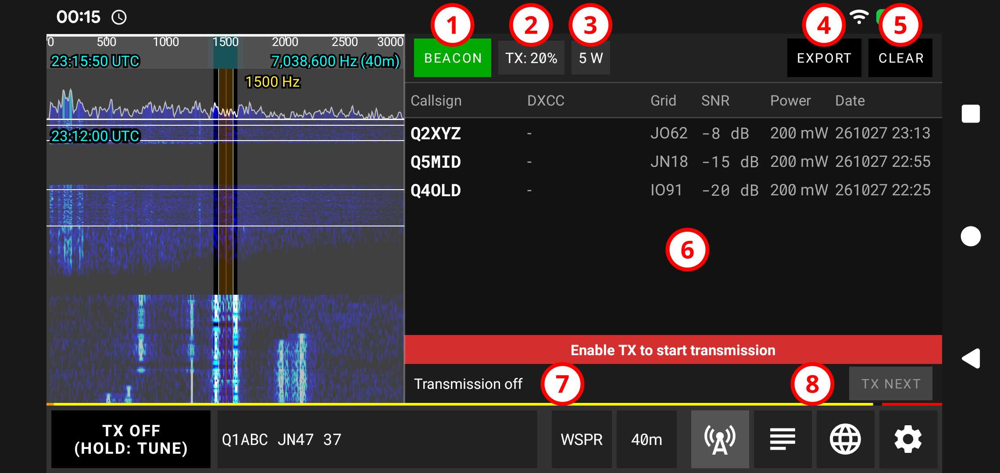
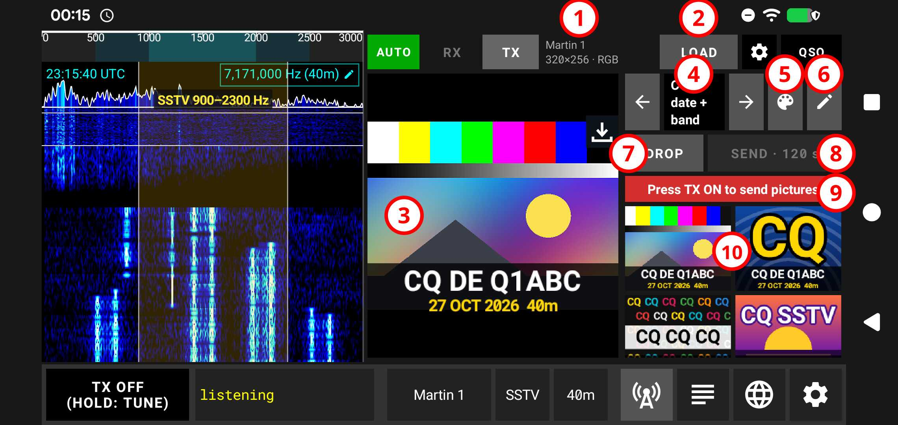
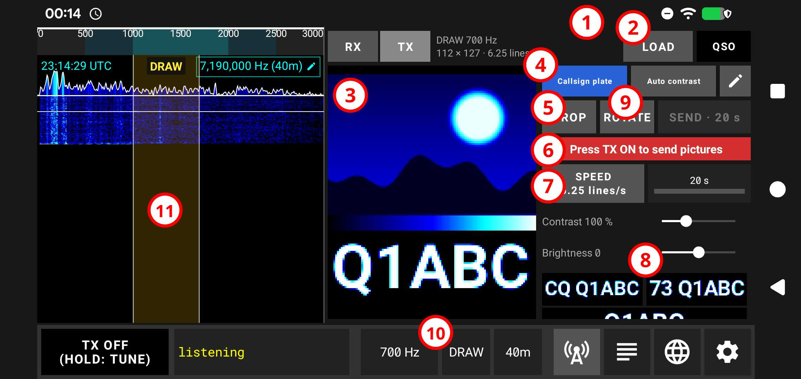
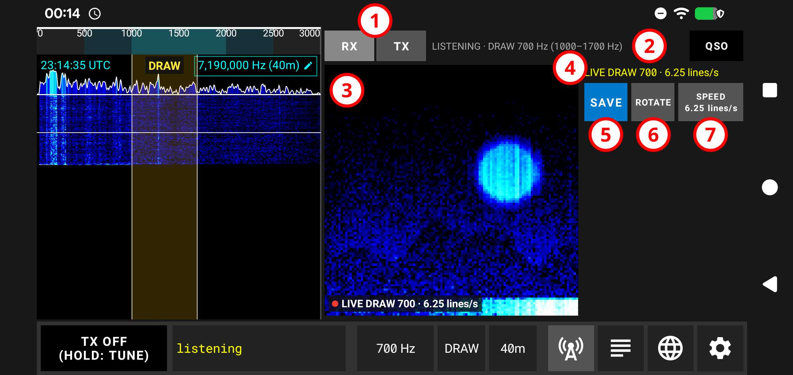

دليل مستخدم qFT8
جدول المحتويات
- ما هو qFT8؟
- qFT8 على الحاسوب (Windows وmacOS وLinux)
- التثبيت وأول تشغيل
- ما الذي يتشابه وما الذي يختلف
- تخطيطات الشاشة وزر التخطيط
- العمل مع النوافذ
- مستويات الصوت: الجهاز والنغمة
- أجهزة الصوت واتصال الراديو
- الفأرة ولوحة المفاتيح
- الإعدادات: أين تُحفظ وكيف تنقلها من هاتف
- عدة نسخ، والجسر، والتحكم عبر الويب، وسطر الأوامر
- الحواسيب البطيئة
- التحديث وإزالة التثبيت
- إذا لم يعمل شيء
- qFT8 على iPhone وiPad
- الإعداد السريع
- أول QSO لك مع qFT8
- مدخل إلى الأنماط الرقمية
- واجهة مستخدم qFT8
- التشغيل الآلي (AUTO)
- التشغيل اليدوي (CALL)
- تحرير QSO وتسجيله يدويا
- استيراد وتصدير ADIF
- خدمات رفع اتصالات QSO
- التكامل مع QRZ
- التكامل مع LoTW
- Wavelog
- Cloudlog
- eQSL
- qFT8 بوصفه خادم Wavelog
- qFT8 بوصفه خادم Cloudlog
- قمم على الهواء (SOTA)
- متنزهات على الهواء (POTA)
- تفعيل متنزه أو قمة
- محادثة JS8
- WSPR وFST4W (المنارات)
- SSB (الصوت)
- CW (شفرة مورس)
- RTTY وJTTY
- SSTV (الصور)
- DRAW (الصور على الشلال)
- شرح الخصائص
- تقارير الأعطال والإصدارات الجديدة
- حل المشكلات
ما هو qFT8؟
qFT8 تطبيق لهواة الراديو يعمل على هواتف وأجهزة Android اللوحية وعلى iOS وعلى حواسيب Windows و macOS و Linux، يفك ترميز رسائل البيانات الرقمية FT8 و FT4 و FT2 و LQ8 و JS8 و WSPR ويرسلها عبر جهاز إرسال واستقبال. ويعمل كذلك بالصوت (SSB) وشفرة مورس (CW) و RTTY والصور (SSTV) بالجهاز نفسه وبالكابل نفسه.
النسختان تعملان بالطريقة نفسها. وحيثما اختلفتا يذكر هذا الدليل ذلك («على Android ...»، «على الحاسوب ...»). لقطات الشاشة مأخوذة من تطبيق Android، و«اضغط» تعني لمس الشاشة على Android أو النقر بالفأرة على الحاسوب.


يدعم qFT8 جهازي QMX و ICOM 7300 مباشرة دون أي تهيئة (وصّل واشتغل)، لكن يمكنك استخدامه مع أي جهاز إرسال واستقبال بوضع الهاتف أو الحاسوب قرب السماعة والميكروفون مع تفعيل VOX، أو باستخدام كابل ربط صوتي. ويمكنك أيضا تجربة qFT8 دون جهاز إرسال واستقبال: فهو يرسل من السماعة ويستمع إلى الإشارات بالميكروفون. ويمكن لعدة هواتف أو حواسيب تشغّل qFT8 أن تتصل ببعضها صوتيا إذا كانت متقاربة بما يكفي.
qFT8 تطبيق مجاني ولا يحتوي على إعلانات. أما رخصة شفرته المصدرية فستُحدَّد عند نشر الشفرة المصدرية (LICENSE).
طوّر Luis Quesada Torres (HB9IPH) تطبيق qFT8 في عام 2026، وهو مالك حقوق النشر وجميع الحقوق محفوظة له.
يتضمن qFT8 أجزاء من usb-serial-for-android (Copyright © 2011-2020 Google Inc., Mike Wakerly, Andreas Butti, Kai Morich, BSD-3-Clause)، وRoboto (Copyright © 2015 Google Inc. / Christian Robertson, Apache-2.0)، وRoboto Mono (Copyright © 2015 Google / The Roboto Mono Project Authors, OFL-1.1)، وNatural Earth (Public Domain)، وhamradio-zones-geojson (Copyright © 2024 HB9HIL, HA8TKS, MIT license)، وBig CTY (Copyright © Jim Reisert AD1C)، وبيئة تشغيل Java Eclipse Temurin / BellSoft Liberica (OpenJDK) (Copyright © Oracle and/or its affiliates and other contributors, GPLv2 with the Classpath Exception). لا أحد من هؤلاء المؤلفين أو هذه المشاريع الخارجية يزكّي qFT8 أو يرتبط به.
أهم الخصائص
- إعداد سريع
- يدعم أكثر من 50 راديو
- نمط CALL اليدوي والتشغيل AUTO
- مزامنة تلقائية للوقت عبر NTP / GPS
- تحديد تقريبي تلقائي للموقع
- استيراد وتصدير سجلات ADIF
- التكامل مع QRZ / LoTW: الرفع والتأكيدات
- منطق إعادة المحاولة بحدود قابلة للضبط
- SOTA / POTA: معدّل CQ وتصدير ADIF مع المراجع
- الصوت SSB، وCW بالمجاديف مع فك ترميز لكامل نطاق التمرير، وRTTY وصور SSTV
- تفعيلات POTA / SOTA مع تصدير بضغطة واحدة
- محرر QSO ومسجِّل سريع لـ QSO التي تُجرى يدويا
- خادم ويب للتشغيل عن بعد بالكامل
- نمط توفير البطارية: يعمل والشاشة مطفأة
الأجهزة المدعومة
يدعم qFT8 ثلاث طرق رئيسية لتوصيل جهاز الإرسال والاستقبال:
أجهزة CAT/الصوت المباشرة (تحكم عبر كابل USB)
هذه الأجهزة مدعومة مباشرة عبر كابل USB، وهو يتولى التحكم CAT (لضبط التردد وتشغيل PTT) ونقل الصوت بجودة عالية عبر USB معا:
- QRPLabs QMX أو QMX+
- QRPLabs QDX أو QDX-M (لكن هذا الجهاز ليس فيه مقياس W ولا مقياس SWR)
- ICOM IC-7300 وICOM IC-7300 MK2
- ICOM IC-705
- ICOM IC-7610
- ICOM IC-7851
- ICOM IC-7100
- ICOM IC-7200
- ICOM IC-9700
- ICOM IC-7600
- ICOM IC-7410
- ICOM IC-9100
- ICOM IC-7000
- ICOM IC-706MKIIG
- ICOM IC-746 / IC-746PRO
- ICOM IC-756PRO / PRO2 / PRO3
- ICOM IC-7700
- ICOM IC-7800 / IC-7850
- Yaesu FT-891
- Yaesu FT-710
- Yaesu FTX-1
- Yaesu FT-991 / FT-991A
- Yaesu FT-DX10
- Yaesu FTDX101
- Elecraft K4 / K4D / K4HD
- Elecraft K3 / K3S
- Elecraft KX3
- Elecraft KX2
- Elecraft K2 (يتطلب وحدة KIO2)
- Xiegu X6100
- Xiegu X6200
- سلسلة Kenwood TS-480 / TS-590 / TS-2000
- FX-4CR
- QuantumSDR
- (tr)uSDX / uSDX+ / usdr
على iPhone وiPad لا يُتحكَّم في الراديو عبر كابل USB: راجع qFT8 على iPhone وiPad.
اترك الإعدادات > الجهاز على AUTO: يُتعرَّف تلقائيا على الجهاز المدعوم الموصول عبر USB. ويمكنك أيضا اختيار جهازك بنفسك من تلك القائمة.
ملاحظة عن الواجهات الخارجية (Digirig وكابلات USB التسلسلية العامة): الكشف التلقائي (AUTO) مصمم للأجهزة التي فيها متحكم USB أصلي أو التي تُوصل بكابل يحمل اسم الطراز. عند استخدام واجهة خارجية عامة (مثل Digirig) لا يرى الكشف التلقائي سوى شريحة الواجهة العامة فيختار وضع VOX. لاستخدام التحكم CAT مع أجهزة موصولة عبر واجهات خارجية (مثل Lab599 TX-500) اختر طراز جهازك يدويا من الإعدادات > الجهاز؛ ويُضبط المنفذ التسلسلي والسرعة من الإعدادات > تهيئة الجهاز.
وتُدعم أجهزة أخرى عبر VOX، وهو تكامل جزئي بالصوت فقط.
ملاحظة: لأسباب تتعلق بالسلامة لا يسمح qFT8 بتغيير قدرة Tx في جهاز الإرسال والاستقبال. اضبط القدرة يدويا من جهازك.
أجهزة إرسال واستقبال أخرى
- مدعومة عبر السماعات والميكروفون، لكنها ليست الطريقة المثلى
- مدعومة عبر توصيل صوتي عام
qFT8 على الحاسوب (Windows وmacOS وLinux)
يؤدي qFT8 للحاسوب العمل نفسه الذي يؤديه qFT8 لنظام Android: الأنماط نفسها، وعمل AUTO وCALL نفسه، والسجل والخدمات نفسها. هذا القسم عن الأمور المختلفة عند استخدامه على Windows أو macOS أو Linux: كيف يُثبَّت، وكيف تُرتَّب النافذة، ومنزلقا مستوى الصوت، وكيف تُختار أجهزة الصوت والراديو، وكيف تُستخدم الفأرة. باقي الدليل ينطبق كما هو؛ وحيثما يختلف جزء على الحاسوب يذكر ذلك ("على الحاسوب ...").
التثبيت وأول تشغيل
نزّل الملف المناسب لنظامك من qft8.com. يحتوي كل تنزيل على مجلد أو تطبيق واحد فيه البرنامج والترخيص وهذا الدليل. لا حاجة لتثبيت أي شيء آخر: بيئة Java التي يحتاجها qFT8 موجودة بداخله.
- النظام Windows
- التنزيل ملف .zip، بإصدار 64 بت أو 32 بت
- ما تحتاجه Windows 10 أو أحدث. استخدم ملف 32 بت فقط على Windows ذي 32 بت.
- النظام macOS
- التنزيل ملف .dmg، ملف واحد لكل أجهزة Mac (Apple Silicon وIntel)
- ما تحتاجه macOS 10.13 أو أحدث
- النظام Linux
- التنزيل ملف .tar.gz: حاسوب 64 بت، أو حاسوب 32 بت، أو ARM 64 بت، أو ARM 32 بت (Raspberry Pi)
- ما تحتاجه سطح مكتب مع خادم صوت (PulseAudio أو PipeWire). جُرّب على Ubuntu حديث، مع X11 ومع Wayland (عبر XWayland).
- النظام أي حاسوب آخر
- التنزيل ملف .jar
- ما تحتاجه Java 21 أو أحدث، تثبّتها أنت
يحتاج qFT8 إلى حاسوب فيه نواتان على الأقل للمعالج (يُوصى بأربع) ومساحة لنافذة لا يقل حجمها عن 960 x 560 بكسل. يعمل على نواتين لكن بصورة أبطأ: انظر الحواسيب البطيئة.
Windows
- افتح ملف .zip واسحب المجلد qFT8 إلى مكان تحفظ فيه برامجك، مثل مجلد المستندات أو سطح المكتب. لا تشغّل qFT8 من داخل ملف zip.
- افتح المجلد وانقر مرتين على qFT8.exe.
- قد يعرض Windows الرسالة "Windows protected your PC" في المرة الأولى. اضغط More info ثم Run anyway. الملف qFT8.exe موقَّع بشهادة المؤلف؛ ويحتاج Windows إلى وقت ليثق ببرنامج جديد.
- إذا سألك Windows هل تسمح لـ qFT8 (يظهر باسم "OpenJDK Platform binary") بالمرور عبر جدار الحماية، فاسمح له على شبكة خاصة فقط، وفقط إذا كنت تستخدم التحكم عبر الويب أو الجسر.
macOS
- افتح ملف .dmg واسحب qFT8 إلى اختصار Applications في النافذة نفسها. ثم أخرج ملف .dmg.
- شغّل qFT8 من Applications. إذا شغّلته من داخل نافذة .dmg أو من المكان الذي وضعه فيه المتصفح، يسأل qFT8 "Move qFT8 to Applications?" (يُعرض هذا السؤال في البرنامج بلغة الواجهة): اضغط نقل (قد يطلب macOS كلمة المرور كما يفعل Finder) أو ليس الآن.
- يسأل macOS مرة واحدة هل يسمح لـ qFT8 باستخدام الميكروفون. اضغط Allow: بهذا يسمع qFT8 الراديو. وإذا فاتك السؤال أو رفضت، يعرض qFT8 بطاقة تقول إنه ينتظر إذن الميكروفون؛ امنح الإذن من System Settings > Privacy & Security > Microphone (macOS 13 وما بعده) أو System Preferences > Security & Privacy > Privacy > Microphone (macOS الأقدم)، ثم شغّل qFT8 من جديد.
Linux
- فُكّ ضغط ملف .tar.gz (
tar -xzf qFT8-*.tar.gz، أو بمدير الملفات). سينتج مجلد qFT8. - شغّل
./qFT8في ذلك المجلد (ينفع النقر المزدوج إذا كان مدير الملفات يشغّل البرامج). في أول تشغيل يفك البرنامج نفسه في~/.cache/qft8ويستغرق ذلك بضع ثوانٍ؛ والإصدار الأحدث يحل محل الأقدم هناك تلقائيًا. - المنفذ التسلسلي (CAT) للراديو ينتمي إلى مجموعة:
dialoutفي Ubuntu وDebian وFedora، وuucpفي Arch. وبطاقة الصوت USB الخاصة به تنتمي إلىaudio. إذا لم يكن حسابك في مجموعة المنفذ، يخبرك qFT8 بذلك في بطاقة: يضيفك أصلحه إلى المجموعة (يطلب كلمة المرور) ويعيد تشغيل qFT8، فيسري التغيير دون تسجيل الخروج. وإن لم ينجح ذلك، يعطيانك جرّب في طرفية وانسخ الأمر الأمر لتشغّله بنفسك؛ ثم سجّل الخروج والدخول مرة واحدة.
أول تشغيل
يطلب qFT8 رمز ندائك كما في Android (انظر إدخال رمز النداء). بعده مباشرة تُفتح بطاقة باسم تهيئة الجهاز: اختر الراديو ثم أجهزة الصوت المتصلة به. يُظهر الشلال تحت الإدخال ما يرسله الراديو: والراديو شغّال يجب أن ترى ضجيجًا أو إشارات. يمكنك فتح البطاقة نفسها في أي وقت بالزر الواقع إلى يمين الترس في الشريط السفلي، كما تفتحها الشارة الحمراء لا يوجد صوت على الشلال. انظر أجهزة الصوت واتصال الراديو.
↑ العودة إلى جدول المحتوياتما الذي يتشابه وما الذي يختلف
كل ما يتعلق بالتشغيل متشابه: أول QSO لك، والأنماط الرقمية، وAUTO، وCALL، والسجل وADIF وQRZ وLoTW وغيرها من الخدمات، وSSB وCW وRTTY وSSTV، وحد الإرسال وقواعد السلامة: يكون TX دائمًا مطفأً عند بدء qFT8، ولا يشغّله إلا زر TX، ولا يغيّر qFT8 قدرة إرسال الراديو أبدًا. لقطات الشاشة في هذا الدليل تعرض تطبيق Android؛ و"النقر باللمس" تعني النقر بالفأرة. الاختلافات:
- الشاشة
- Android شاشة واحدة: مخطط الطيف وتبويب واحد؛ والاتجاه والأرباع في الإعدادات
- الحاسوب ثلاثة تخطيطات تُختار بـزر التخطيط: كل شيء في نافذة واحدة، أو جنبًا إلى جنب كالهاتف، أو كل لوحة في نافذتها. المزيد
- مستوى الصوت
- Android مستوى صوت الهاتف، و"توليد النغمة بمستوى الصوت" و"ضبط صوت النظام ... عند الإرسال" في الإعدادات
- الحاسوب منزلقان في الشريط السفلي: مستوى صوت جهاز الصوت نفسه، ومستوى نغمة qFT8. لا يغيّر qFT8 مستوى صوت الجهاز من تلقاء نفسه أبدًا. المزيد
- أجهزة الصوت
- Android أجهزة الهاتف نفسه، أو بطاقة الصوت USB للراديو
- الحاسوب تختارها في تهيئة الجهاز: الراديو وأنت (المشغّل). المزيد
- اتصال الراديو
- Android USB مع نافذة طلب إذن
- الحاسوب منفذ تسلسلي (COM)؛ لا نافذة إذن، لكن يلزم على Linux مجموعة وعلى macOS إذن الميكروفون. المزيد
- الإدخال
- Android اللمس: نقر، ضغطة مطوّلة، تمرير
- الحاسوب الفأرة: نقر، نقر بالزر الأيمن، عجلة. لوحة المفاتيح لا تشغّل عناصر التحكم. المزيد
- الإعدادات والبيانات
- Android داخل التطبيق
- الحاسوب في مجلد داخل مجلد المستخدم؛ وملف الإعدادات هو نفسه في Android. المزيد
- الخلفية
- Android خدمة في المقدمة، وإطفاء الشاشة، وتوفير البطارية
- الحاسوب لا شيء من ذلك: تظل النافذة تعمل ما دامت مفتوحة. وللحواسيب البطيئة وضعها الخاص. المزيد
تخطيطات الشاشة وزر التخطيط
الزر الواقع في الطرف الأيمن من الشريط السفلي هو زر التخطيط. كل نقرة عليه تنقل التخطيط إلى التالي: عائم، ثم مثبّت، ثم الكل في نافذة واحدة، ثم عائم من جديد. تُظهر صورته التخطيط الحالي (ويقرأ قارئ الشاشة اسمه، مثل "التخطيط: مثبّت"). يتذكر qFT8 التخطيط للتشغيل التالي، وحجم كل نافذة ومكانها في كل تخطيط على حدة.

- الكل في نافذة واحدة (التخطيط الذي يبدأ به qFT8 في المرة الأولى). نافذة واحدة من أربعة أجزاء متساوية: مخطط الطيف في أعلى اليسار، وتبويب المحطات في أعلى اليمين، وخريطة العالم في أسفل اليسار، وسجل QSO في أسفل اليمين، فوق الشريط السفلي. أما الإعدادات فعمود طويل على يمين النافذة نفسها؛ يُظهره زر الترس في الشريط السفلي أو يخفيه، وكذلك علامة X في عنوانه. ليس في الشريط السفلي أزرار للأجزاء الأربعة: فهي موجودة دائمًا.
- مثبّت (مثل تطبيق Android). نافذة واحدة فيها مخطط الطيف على اليسار وتبويب المحطات على اليمين، فوق الشريط السفلي. اسحب الفاصل الرفيع بينهما لتعطي أحدهما مساحة أكبر (الحصة بين 20 % و80 %). تفتح أزرار سجل QSO وخريطة العالم والإعدادات في الشريط السفلي هذه الثلاثة في نوافذ منفصلة، والضغط عليها مرة أخرى يغلقها.
- عائم. تنكمش النافذة الرئيسية إلى الشريط السفلي فقط، وتصير كل لوحة نافذة مستقلة تضعها حيث تشاء، حتى على شاشة أخرى: مخطط الطيف، والمحطات، وسجل QSO، وخريطة العالم، والإعدادات. وفي الشريط السفلي زر لكل واحدة من الخمس لفتحها وإغلاقها. استخدمه لتوزيع qFT8 على شاشتين، أو لإبقاء مخطط الطيف والشريط فقط على شاشة صغيرة.

تغيير التخطيط يعيد ترتيب النوافذ فقط: لا يضيع شيء، ويستمر الإرسال، ويبقى TX كما كان. وفي خريطة العالم زر ملء الشاشة (أعلى يمين الخريطة): تملأ الخريطة الشاشة حتى تضغط الزر مرة أخرى أو Esc.
نصيحة: إعدادات Android الاتجاه وأرباع ويغطي التطبيق (انظر تخطيطات الشاشة) غير موجودة على الحاسوب: يحل محلها زر التخطيط وحجم النافذة.
العمل مع النوافذ
- برنامج واحد في شريط المهام. مهما كان التخطيط، لـ qFT8 مدخل واحد في شريط المهام أو Dock أو Alt-Tab: النافذة الرئيسية. أما نوافذ اللوحات في التخطيطين عائم ومثبّت فلا يكون لها مدخل خاص. (على Linux جُرّب هذا مع GNOME وKDE Plasma وXfce وCinnamon وMATE وLXQt.)
- لنوافذ اللوحات إطارها الصغير الخاص (نفسه على كل نظام): حافة رفيعة تغيّر حجم النافذة من أي جانب أو زاوية، وشريط عنوان فيه اسم اللوحة تسحبه لتحريك النافذة، وعلامة X تغلق اللوحة كما يفعل زرها في الشريط السفلي. ويغلق Esc نافذة اللوحة أيضًا ما دامت هي النافذة النشطة.
- النافذة الرئيسية يمكن تغيير حجمها وتكبيرها كالمعتاد. في تخطيط الكل في نافذة واحدة لا يمكن تصغيرها عن 960 x 560 بكسل، وتُفتح في المرة الأولى بنسبة 85 % من الشاشة.
- الإعدادات تحتفظ بعرض واحد. تحتفظ نافذة الإعدادات (وعمودها) بعرض صفحة إعدادات Android ليتسع كل صف؛ ويمكنك تغيير ارتفاعها.
- حجم كل شيء. في الإعدادات > التطبيق منزلقا الحجم (مقياس واجهة المستخدم والخط ومقياس عناصر واجهة المستخدم (بدون الخط)) كما في Android. وعلى الشاشات عالية الدقة (Mac بشاشة Retina، أو Windows عند 125 % إلى 200 %) يتبع qFT8 مقياس النظام.
مستويات الصوت: الجهاز والنغمة
في الشريط السفلي، بين زر تهيئة الجهاز وزر التخطيط، منزلقان صغيران أحدهما فوق الآخر. يتحكمان في أمرين مختلفين، وكلاهما مهم للإرسال.
- المنزلق العلوي، بصورة السماعة: مستوى صوت الجهاز. هو مستوى صوت جهاز الصوت الذي يرسل qFT8 عبره: بطاقة الصوت USB للراديو، أو السماعة أو سماعات الرأس إن كنت ترسل الصوت إليها. وهو المستوى نفسه الذي يعرضه التحكم بالصوت في نظامك لذلك الجهاز، وإذا غيّرت أحدهما تبعه الآخر (المنزلق خلال ثوانٍ قليلة).
- المنزلق السفلي، بصورة الموجة: مستوى النغمة. هو مدى ارتفاع الصوت الذي يولّده qFT8 نفسه للإرسال (نغمات FT8 وFT4 وWSPR وJS8 وLQ8، وصوت TUNE)، من 0 إلى 100 %. يُغيَّر أثناء الإرسال: تسمع النتيجة وتراها في الإرسال نفسه. يبدأ عند 100 %. ويتذكر كل راديو مستوى نغمته. يعرض التحكم عبر الويب المنزلق نفسه ويحرّك هذا المنزلق.
كيف يتصرف منزلق الجهاز.
- عند بدء qFT8 يقرأ مستوى صوت الجهاز ويعرضه؛ ثم يقرؤه من جديد كل ثانيتين، فإذا غيّرت مستوى الصوت في النظام تبعه المنزلق. وإذا بدّلت جهاز الإخراج، عرض المنزلق مستوى صوت الجهاز الجديد.
- لا يغيّر qFT8 مستوى صوت الجهاز إلا عندما تحرّك هذا المنزلق. لا يضبطه من تلقاء نفسه قبل الإرسال أبدًا. وهذا يختلف عن Android حيث يمكن لـ qFT8 أن يضبط صوت الهاتف على القيمة الموجودة في الإعدادات عند الإرسال؛ وعلى الحاسوب لا يوجد هذان الإعدادان.
- بعد أن تحرّكه يعيد qFT8 قراءة مستوى الصوت، فيعرض المنزلق ما قبله الجهاز فعلًا.
- الجهاز الذي لا يملك تحكمًا بالصوت (بعض المخارج على macOS) يُظهر المنزلق رماديًا وبلا مقبض.
- في أول مرة ترسل فيها أو تضغط TUNE بعد بدء qFT8، تتحول صورة السماعة ومقبض منزلق الجهاز من الرمادي إلى الأبيض والعكس خمس ثوانٍ، تذكيرًا بأن هذا هو المستوى الذي يحدد مدى قوة تشغيل الراديو. ولمسه يوقف ذلك.
- أثناء سحب أي منزلق تظهر قيمته بالنسبة المئوية بجانبه.
نصيحة: يؤدي هذان المنزلقان ما تنصح به لـ Android في [QMX فقط] فحص الصوت: إذا أظهر الراديو أن الصوت منخفض جدًا أو مرتفع جدًا (النقطتان في QMX بدل الشريط)، فجرّب أولًا مواضع أخرى لمنزلق مستوى صوت الجهاز (مثل 70 %، 80 %، 60 %، 100 %)، واستعمل مستوى النغمة للضبط الدقيق. وإلا فاترك مستوى النغمة على قيمته الافتراضية (100 %). لا يضبط qFT8 قدرة إرسال الراديو أبدًا: اضبطها على الراديو نفسه.
أجهزة الصوت واتصال الراديو
بطاقة تهيئة الجهاز
افتحها بالزر الواقع إلى يمين الترس (وتُفتح من تلقاء نفسها في أول تشغيل ومن شارة لا يوجد صوت). فيها نصفان:
- الراديو (على اليسار): الراديو وبطاقة الصوت الخاصة به: الإدخال من جهاز الراديو (ما يسمعه الراديو: وهو ما يفك qFT8 ترميزه) والإخراج إلى جهاز الراديو (ما يرسله qFT8)، ولكل منهما معدل العينة وعدد البتات والقنوات. اتركها على الافتراضي في النظام ما لم يحتج الراديو إلى غير ذلك. ويُظهر شلال حي صغير تحت الإدخال هل يصل صوت.
- أنت (المشغّل) (على اليمين): ميكروفونك الخاص وسماعاتك أو سماعات رأسك، لـ SSB وCW (انظر السماعات والميكروفون، وهو الشيء نفسه)، وزر اختبار، وتشغيل صوت الراديو على السماعة في الأنماط الرقمية. يجب ألا تكون هذه أبدًا بطاقة الصوت الخاصة بالراديو.
الخيارات نفسها، وأكثر منها (أحجام المخازن المؤقتة وتحذير الانقطاعات)، موجودة في الإعدادات > تهيئة الجهاز. أما صفا Android "نظام الصوت" و"مصدر إدخال الصوت" فغير موجودين على الحاسوب. اترك الأجهزة على AUTO: فهو يفضّل بطاقة الصوت الخاصة بالراديو للراديو، ولك أنت جهازًا ليس للراديو.
إشعارات قد تراها
- الإخراج إلى الراديو (شارة): مخرج الصوت الافتراضي في حاسوبك هو بطاقة صوت الراديو، فتدخل أصوات النظام والمتصفح والتنبيهات إلى الراديو وقد تذهب على الهواء إذا كان يرسل بـ VOX أو بمدخل البيانات. يعرض qFT8 استخدام مخرج آخر (استخدم ...)، أو فتح إعدادات الصوت، أو التوقف عن السؤال. وصوت إرسال qFT8 يتبع المخرج الافتراضي أيضًا: اختر أولًا بطاقة صوت الراديو مخرجًا لـ qFT8، ثم غيّر الافتراضي في الحاسوب.
- لا يوجد إدخال من الراديو (شارة، Linux): ليس لبطاقة صوت الراديو مدخل في نظام الصوت لأنها على ملف تعريف للإخراج فقط. يتيح قراءة الراديو مباشرة (موصى به) لـ qFT8 أن يقرأ البطاقة بنفسه؛ ويغيّر التبديل إلى PRO AUDIO ملف تعريف البطاقة لكل البرامج.
- لا توجد أجهزة إدخال: لا يعرض النظام أي مدخل؛ وصّل الراديو أو بطاقة صوت وتحقق من ظهورها مدخلًا في إعدادات الصوت بالحاسوب.
- برنامج تشغيل USB الخاص بالراديو غير مثبت (Windows وmacOS): قد يحتاج Icom IC-7300 وغيره من أجهزة الراديو ذات شريحة USB من Silicon Labs إلى برنامج تشغيل CP210x. نزّله من صفحة برامج التشغيل لدى الشركة المصنّعة، ثبّته، ثم وصّل الراديو من جديد.
- راديو مختلف؟ (شارة): الراديو الموصول ليس الراديو المختار في qFT8.
حسب النظام
- Windows: يسمع qFT8 الراديو عبر محرك الصوت الخاص بـ Windows (WASAPI)، وهو يعطي تدفقًا أكثر ثباتًا من الطريقة الأقدم. يظهر الراديو منفذ COM (
COM3...) وجهاز صوت باسم "USB Audio CODEC" أو ما يشبهه. يسمح Windows لبرنامج واحد فقط باستخدام منفذ COM: إذا قال qFT8 إن الوصول مرفوض فأغلق البرنامج الآخر (برنامج سجل، أو برنامج أنماط رقمية، أو برنامج الراديو نفسه) واضغط إعادة المحاولة. - macOS: يبدو منفذ الراديو هكذا
/dev/cu.usbmodem...(جهاز QMX) أو/dev/cu.SLAB_USBtoUART(جهاز IC-7300). لا يحتاج macOS إلى مجموعة أو إذن للمنفذ، بل فقط إلى إذن الميكروفون المذكور أعلاه. إذا رُفض منفذ، فبرنامج آخر فاتحه. - Linux: يبدو المنفذ هكذا
/dev/ttyACM0أو/dev/ttyUSB0ويحتاج إلى المجموعة المذكورة أعلاه. أجهزة الصوت هي أجهزة خادم الصوت (PulseAudio أو PipeWire)، فيمكن أن يكون مكبّر صوت الراديو وسماعات رأسك وميكروفونك أجهزة مختلفة. يستخدم منزلق مستوى صوت الجهاز الأمرpactlمن الحزمةpulseaudio-utils(ويعمل مع PipeWire أيضًا).
اختيار الراديو ومنفذه
كما في Android، اترك الإعدادات > الجهاز على AUTO: يُتعرَّف على الراديو المدعوم عند توصيله. أما الراديو الموصول عبر واجهة USB تسلسلية عامة (مثل Digirig) فاختره يدويًا، ثم اختر منفذه من الإعدادات > تهيئة الجهاز > إعدادات منفذ الاتصال > جهاز USB؛ وفيه أيضًا معدل الباود وبتات البيانات وبتات التوقف والتكافؤ وطريقة التحكم بالإرسال (DTR أو RTS أو CAT)، وقد ضبطها qFT8 للراديو الذي اخترته ما لم تحدد السماح بتجاوز الإعدادات. الأجهزة التي تعمل بالصوت فقط (VOX) لا تحتاج إلى منفذ أصلًا. ويمكن لـسطر الأوامر أن يعرض المنافذ وأجهزة الصوت التي يراها qFT8.
الفأرة ولوحة المفاتيح
يُشغَّل برنامج الحاسوب بالفأرة. حرصًا على السلامة لا تضغط لوحة المفاتيح أي عنصر تحكم أبدًا: لا ينتقل Tab بين عناصر التحكم، ولا يضغط Space وEnter زرًا أبدًا ولا يحددان خانة ولا يشغّلان TX. (فالمفتاح الذي يُضغط عن غير قصد لا يستطيع الإرسال.) ما تفعله لوحة المفاتيح:
- حقول النص تستقبل كل مفتاح كالمعتاد: اكتب رمز نداء أو رسالة أو بحثًا. يؤكد Enter مربع النص في نافذة الحوار. والنسخ واللصق يعملان: Ctrl على Windows وLinux، وCmd على macOS (ويعمل Ctrl هناك أيضًا).
- Esc يغلق نافذة حوار، أو نافذة لوحة، أو الخريطة بملء الشاشة، أو محرر QSO أو المسجِّل.
- Ctrl-S (Cmd-S على macOS) يحفظ في محرر QSO.
- CW: يمكن أن تكون لوحة المفاتيح هي المفتاح أو المجداف (الإعدادات > CW)؛ وتعمل هذه المفاتيح، ومنها Space وTab، ما دامت شاشة CW هي النافذة النشطة (انظر CW (شفرة مورس)).
- SSB: Space هو زر اضغط للتحدث ما دام مضغوطًا ولوحة SSB هي التي عليها التركيز (انظر SSB (الصوت)).
تحل الفأرة محل إيماءات اللمس:
- على Android نقرة لمس
- على الحاسوب نقرة بالزر الأيسر
- على Android ضغطة مطوّلة (تبويب محطة، تبويب مجموعة، ذاكرة في SSB)
- على الحاسوب نقرة بالزر الأيمن
- على Android نقرة على رسالة في دردشة JS8
- على الحاسوب نقرة مزدوجة
- على Android تحديد عدة QSO في السجل
- على الحاسوب نقرة مع Ctrl، أو مع Shift لنطاق
- على Android التمرير على عجلة الضبط؛ السحب على الشلال
- على الحاسوب عجلة الفأرة فوق مخطط الطيف في SSB وCW تحرّك شريط الضبط (Shift: خطوات أدق)؛ والنقر والسحب كما على الهاتف
- على Android القرص بإصبعين لتكبير خريطة العالم
- على الحاسوب عجلة الفأرة فوق الخريطة تكبّر عند المؤشر؛ والسحب يحرّكها
لا يوجد شريط قوائم: كل شيء في الشريط السفلي واللوحات والإعدادات.
↑ العودة إلى جدول المحتوياتالإعدادات: أين تُحفظ وكيف تنقلها من هاتف
يحفظ qFT8 كل ما يخزّنه في مجلد واحد هو مجلد الملف الشخصي: الإعدادات وكلمات المرور وسجل QSO والنسخ الاحتياطية والصور.
- Windows:
C:\Users\<you>\qFT8 - macOS وLinux:
.qft8في مجلدك الرئيسي (~/.qft8؛ وهو مخفي في Finder وفي معظم مديري الملفات)
يبقى المجلد عند تحديث البرنامج أو حذفه، فيجد الإصدار الجديد إعداداتك وسجلك. في أسفل صفحة الإعدادات الرئيسية، تحت رقم الإصدار، يعرض مجلد الإعدادات: المجلد (انقر عليه لفتحه)، ويفتح الزر فتح مجلد السجل بجانب الإبلاغ عن خطأ المجلد الذي فيه سجلات qFT8، وهذا مفيد عند إرسال تقرير خطأ. كانت إصدارات Windows الأقدم تحفظه في مجلد settings بجانب qFT8.exe: وعند أول تشغيل لإصدار أحدث ينقله، ويتحقق من النسخة، ويُبقي المجلد القديم باسم settings.old.
نقل إعداداتك من هاتف (أو إلى هاتف)
يُنشئ تصدير الإعدادات واستيراد الإعدادات، في صفحة الإعدادات الرئيسية (تحت ملفات الإعدادات)، ملفًا واحدًا ويقرآنه، وهو نفسه على Android وعلى الحاسوب. صدِّر على الهاتف، وانسخ الملف إلى الحاسوب (بريد أو سحابة أو كابل)، واستورده هناك؛ والعكس يعمل أيضًا.
- يحتوي الملف على مفتاح QRZ API وشهادة LoTW وكلمات المرور. لا تشاركه أبدًا.
- لا يحتوي على QSO: انقل السجل عبر ADIF، أو دع خوادم سجل qFT8 تنسخه.
- لا يحتوي على ما يخص هذا الحاسوب فقط: اختيارات أجهزة الصوت (فهي أجهزة مختلفة)، والتخطيط، والنوافذ. اخترها من جديد على الحاسوب.
- يطلب الاستيراد أن تكتب yes للتأكيد، ويشترط أن يكون TX مطفأً، ويُبقي QSO الخاصة بك، ولا يشغّل TX أبدًا.
على الحاسوب لا يستبدل التصدير أبدًا ملفًا موجودًا هناك (انظر استيراد وتصدير ADIF).
↑ العودة إلى جدول المحتوياتعدة نسخ، والجسر، والتحكم عبر الويب، وسطر الأوامر
- نسخة واحدة لكل مجلد ملف شخصي. إذا شغّلت qFT8 بينما نسخة أخرى تستخدم المجلد نفسه، يقول قيد التشغيل بالفعل ويعرض إعادة المحاولة أو إنهاء: فنسختان على مجلد واحد قد تُتلفان إعداداتك وسجلك. لتشغيل عدة نسخ في وقت واحد، مثلًا نسخة لكل راديو، أعطِ كل واحدة مجلدها عند تشغيلها:
qFT8 --qft8_profile D:\qft8-radio2(في Windows:qFT8.exe). يتوقف qFT8 مع رسالة خطأ إذا لم يستطع الكتابة في ذلك المجلد. - التحكم عبر الويب. في برنامج الحاسوب خادم الويب للتحكم عن بعد نفسه الموجود في Android (متوقف افتراضيًا، المنفذ 13497) ويعرض الصفحات نفسها، ومنها منزلق مستوى الصوت. استخدمه للتشغيل من هاتف أو حاسوب آخر على شبكتك.
- الجسر. الحاسوب هو الجسر المعتاد: الراديو موصول به، وqFT8 على هاتف أو iPhone أو حاسوب آخر يشغّله. ويمكنه العمل أيضًا دون نافذة (
qFT8 --bridge) لحاسوب ليس له عمل آخر. - سطر الأوامر. يعرض
qFT8 --helpالخيارات (وفي Windows تظهر في نافذة صغيرة): يسرد--list-devicesكل منفذ تسلسلي وجهاز صوت يراه qFT8 ثم يخرج؛ ويحدد--port <device>المنفذ التسلسلي الافتراضي (COM3،/dev/ttyACM0)؛ ويختار--qft8_profile <folder>مجلد الملف الشخصي؛ ويبدأ--bridgeجسرًا؛ ويرسم--openglالنافذة عبر OpenGL (انظر إذا لم يعمل شيء).
الحواسيب البطيئة
يجعل الإعدادات > التطبيق > وضع الجهاز البطيء / البطارية المنخفضة qFT8 أخف: نحو 30 صورة في الثانية، ويُعاد رسم الشلال بوتيرة أقل، وتعمل خريطة العالم فقط حين تكون معروضة. وهو يغيّر ما يُرسم فقط، لا مفكّك الترميز أبدًا: يفك qFT8 الترميز بالطريقة نفسها سواء كان الوضع مفعّلًا أم لا.
لا يعمل الوضع البطيء إلا عندما تحدد خانته، ولا يعمل من تلقاء نفسه أبدًا. وعلى حاسوب فيه نواة أو نواتان للمعالج يسأل qFT8 عند بدء التشغيل هل يفعّله: يحدد تفعيل الوضع البطيء الخانة، ويسأل تجاهل من جديد عند التشغيل التالي، ويوقف لا تسأل مرة أخرى السؤال. وعلى هذا الحاسوب يمنح qFT8 مفكّك الترميز لديه حصة عادلة من المعالج من تلقاء نفسه، سواء كان الوضع البطيء مفعّلًا أم لا، حتى لا يجوّعه برنامج آخر مشغول.
التحديث وإزالة التثبيت
التحديثات
عندما يكون التحقق من وجود إصدارات جديدة عند بدء التشغيل محددًا (وهو الافتراضي؛ انظر التحقق من وجود إصدارات جديدة عند بدء التشغيل) يسأل qFT8 مرة في اليوم هل يوجد إصدار أحدث ويعرض يتوفر إصدار جديد مع تجاهل وتنزيل الآن الذي يفتح صفحة التنزيل في متصفحك. لا يحدّث qFT8 نفسه أبدًا. وللتحديث نزّل الملف الجديد واستبدل البرنامج القديم:
- Windows: أغلق qFT8 واستبدل المجلد qFT8 (أو الملف qFT8.exe فقط) بالجديد.
- macOS: أغلق qFT8 واسحب qFT8 الجديد إلى Applications واختر Replace.
- Linux: أغلق qFT8 وشغّل
qFT8الجديد. يفك نفسه ويزيل الإصدار القديم من الذاكرة المؤقتة.
تبقى إعداداتك وسجلك في مجلد الملف الشخصي.
إزالة التثبيت
أغلق qFT8 واحذف البرنامج: المجلد qFT8 (Windows وLinux) أو qFT8 في Applications (macOS)؛ وعلى Linux احذف أيضًا ~/.cache/qft8. هذا يُبقي إعداداتك وسجلك. ولإزالتهما أيضًا احذف مجلد الملف الشخصي (أعلاه). هذا يمحو سجل QSO الخاص بك: صدِّره أولًا بـADIF.
إذا لم يعمل شيء
- الشلال فارغ والشارة تقول لا يوجد صوت. افتح تهيئة الجهاز: هل بطاقة صوت الراديو هي الإدخال، وهل الراديو شغّال؟ على macOS تحقق من إذن الميكروفون؛ وعلى Linux من شارة لا يوجد إدخال من الراديو ومن المجموعات.
- الراديو يستقبل لكنه لا يرسل، وTUNE لا يشغّل الإرسال. رُفض المنفذ: برنامج آخر يستخدمه (Windows وmacOS) أو حسابك ليس في المجموعة (Linux). يقول qFT8 أيهما؛ أغلق البرنامج الآخر واضغط إعادة المحاولة، أو اتبع بطاقة Linux. انظر أيضًا الهاتف أو الحاسوب لا يتعرف على جهاز الإرسال والاستقبال أو ينقطع الاتصال به.
- صوت الراديو منخفض جدًا أو مرتفع جدًا أو تظهر نقطتان بدل الشريط (QMX): حرّك منزلق مستوى صوت الجهاز (مستويات الصوت). وتحقق من أن مستوى صوت الحاسوب لذلك الجهاز ليس مكتومًا.
- أصوات الحاسوب تُسمع على الهواء. المخرج الافتراضي هو بطاقة صوت الراديو: أجب عن شارة الإخراج إلى الراديو أو اختر مخرجًا افتراضيًا آخر في نظامك.
- "قيد التشغيل بالفعل". نسخة أخرى تستخدم مجلد الملف الشخصي. أغلقها أو شغّل هذه بمجلد
--qft8_profileخاص بها. - النافذة سوداء أو مشوّشة (برامج تشغيل رسوميات قديمة، أو آلة افتراضية، أو سطح مكتب بعيد): حدّث برنامج تشغيل الرسوميات. فإن بقيت المشكلة فشغّل qFT8 مع
--opengl(qFT8 --opengl) فيرسم النافذة بطريقة أخرى؛ وإن لم يُجدِ ذلك أيضًا فأبلغ عنها بـالإبلاغ عن خطأ (الإعدادات) مع ذكر نظامك وبطاقة الرسوميات. - نافذة خارج الشاشة (فُصلت شاشة): يفحص qFT8 مكان كل نافذة المحفوظ عند فتحها، والنافذة التي زالت شاشتها أو التي ستكون في معظمها خارج الشاشة تُفتح بدلًا من ذلك في وسط الشاشة الرئيسية. وإن بقيت نافذة بعيدة المنال فأغلق لوحتها بزرها في الشريط السفلي ثم افتحها من جديد، أو أعد تشغيل qFT8.
- شلال متجمد أو انقطاعات في الصوت أو حمل مرتفع على حاسوب بنواة أو نواتين: انظر الحواسيب البطيئة، وأغلق البرامج الأخرى، وأرسل تقريرًا بـالإبلاغ عن خطأ إن استمر ذلك.
qFT8 على iPhone وiPad
يعمل qFT8 لأجهزة iPhone وiPad مثل qFT8 لأجهزة Android، وباقي هذا الدليل ينطبق عليه؛ ويحتاج إلى iOS 17 أو أحدث. الاختلاف هو طريقة وصوله إلى جهاز الراديو.
لا يستطيع iPhone أو iPad التحكم في جهاز الراديو عبر كابل: لا يوجد CAT، لذلك لا يستطيع qFT8 ضبط تردد الراديو ولا تحويله إلى الإرسال عبر USB. يستمع إلى الراديو ويرسل نغماته عبر واجهة الصوت USB في الراديو أو واجهة صوت أخرى أو كابل صوت. ولكي يرسل الراديو، استخدم أحد هذه الحلول:
- خاصية VOX في الراديو: يتحول الراديو إلى الإرسال من تلقاء نفسه عندما تصله نغمات qFT8. اختر VOX في إعدادات qFT8.
- واجهة صوت تشغّل الراديو من الصوت نفسه: تحوّل الراديو إلى الإرسال كلما خرج صوت من qFT8.
- qFT8 bridge: حاسوب أو Raspberry Pi أو هاتف أو جهاز لوحي بنظام Android بجانب الراديو، والراديو موصول به عبر USB. عندها يتحكم qFT8 على iPhone أو iPad في الراديو عبر شبكتك الخاصة كأنه موصول به، بما في ذلك التردد والإرسال. يمكن لحاسوب ليس له عمل آخر، حتى خادم بلا شاشة، تشغيل bridge من سطر الأوامر، بلا نافذة.
الإعداد السريع
تأكد من أنك تستخدم مصدر التغذية المناسب لجهاز الإرسال والاستقبال (مثلا ≤12V لجهاز QMX) وإلا أتلفته.
وتأكد كذلك من أن كابل USB والمحوّل اللذين تصل بهما الهاتف أو الحاسوب بجهاز الإرسال والاستقبال صالحان لنقل البيانات. على Android، الأجهزة التي لها موصل غير USB-C تحتاج غالبا إلى كابل OTG (on-the-go) خاص. معظم مشكلات التوصيل التي لا يرى فيها qFT8 جهاز الإرسال والاستقبال سببها كابل أو محوّل غير متوافق.
على Android، في بعض الأجهزة يكون USB OTG معطلا افتراضيا. يجب تفعيله من إعدادات جهازك (قد يكون الخيار مخفيا ضمن الإعدادات المتقدمة أو إعدادات النظام أو الإعدادات الإضافية). إذا واجهت مشكلات في التوصيل، وخاصة إذا كان qFT8 يستقبل الإشارة لكنه لا يرسل وأوامر CAT لا تعمل مع أن الجهاز مدعوم بالكامل (يظهر في قائمة الأجهزة، ويُتعرف عليه تلقائيا في وضع AUTO، إلخ)، فهذا هو السبب على الأرجح.
منح الأذونات الأولية
على Android، عند فتح qFT8 أول مرة سيطلب عدة أذونات:
- السماح لـ qFT8 بتسجيل الصوت: هذا الإذن إلزامي. يحتاجه qFT8 لالتقاط الإشارات من جهاز الإرسال والاستقبال. لا يخزّن qFT8 أي تسجيلات صوتية ولا يشاركها ولا يرفعها.
- السماح لـ qFT8 بالوصول إلى الموقع التقريبي لهذا الجهاز: اختياري لكن يُنصح به. يستخدمه qFT8 للحصول على محدد الموقع Maidenhead الخاص بك، وهو يُرسل ضمن تبادلات FT8. لا يصل qFT8 إلى بيانات الموقع الدقيق ولا يشاركها.
- السماح لـ qFT8 بإرسال الإشعارات إليك: اختياري لكن يُنصح به. يستخدمه qFT8 ليعمل كخدمة في الواجهة وهو مصغّر أو والشاشة مطفأة توفيرا للبطارية. الإشعارات لا تكون نشطة إلا عند الاتصال بجهاز إرسال واستقبال.
- السماح للتطبيق بالعمل دائما في الخلفية: اختياري لكن يُنصح به. مطلوب ليعمل qFT8 بانتظام والشاشة مطفأة.
على الحاسوب هذه الأذونات أقل. على macOS يسأل النظام مرة واحدة هل يُسمح لـ qFT8 باستخدام الميكروفون: اسمح بذلك، فبهذه الطريقة يسمع qFT8 جهاز الإرسال والاستقبال. على Linux، استخدام المنفذ التسلسلي (CAT) للراديو يتطلب أن يكون حسابك ضمن مجموعة المنفذ (عادة dialout)؛ فإن لم يكن كذلك شرح qFT8 الأمر وعرض إصلاحه.
مبدأ أساسي: لا يرسل qFT8 أي معلومات إلى خادم خاص بهذا التطبيق. كل معالجة البيانات تتم محليا على جهازك. ويمكنك أن تأذن صراحة بمشاركة رمز النداء والتاريخ والوقت، واختياريا الموقع التقريبي، إذا أدخلت مفتاح API لـ QRZ صالحا.
لمزيد من التفاصيل راجع سياسة الخصوصية لـ qFT8 - الرخصة.
إدخال رمز النداء
إدخال رمز النداء إلزامي ليعمل qFT8. إذا لم تكن تنوي التوصيل بجهاز إرسال واستقبال حقيقي فيمكنك إدخال أي رمز نداء لأغراض التجربة، مثل XX1XXX.
سيطلب منك qFT8 إدخال رمز النداء والإقرار بما يلي:
- يجب أن تكون حاصلا على ترخيص ساري المفعول لاستخدام هذا البرنامج وهو متصل بجهاز إرسال واستقبال.
- يجب ألا تترك البرنامج يعمل دون مراقبة.
- إخلاء المسؤولية: باستخدامك qFT8 تتحمل كامل المسؤولية عن الالتزام بالقوانين وعن السلامة وعن أي ضرر يلحق بالمعدات.
منح إذن اتصال USB
على Android، عند توصيل جهاز الإرسال والاستقبال و qFT8 مفتوح ستظهر نافذة من النظام (الحاسوب لا يسأل: راجع هناك ملاحظة Linux أعلاه):
«فتح qFT8 للتعامل مع Transceiver.»
- هذا الإذن إلزامي للتخاطب مع جهاز الإرسال والاستقبال.
- إذا لم يُمنح فسيتمكن qFT8 من استقبال الإشارات لكنه لن يتمكن من الإرسال.
- يمكنك اختيار «فتح qFT8 دائما عند توصيل Transceiver» تسهيلا عليك.
إذا واجهت مشكلات في توصيل جهاز الإرسال والاستقبال فراجع في قسم حل المشكلات الهاتف أو الحاسوب لا يتعرف على جهاز الإرسال والاستقبال أو ينقطع الاتصال به.
يهيّئ qFT8 جهاز الإرسال والاستقبال تلقائيا كلما وُصّل.
↑ العودة إلى جدول المحتويات[QMX فقط] فحص الصوت
قبل أن تبدأ التشغيل من المهم أن تتحقق من أن الإشارة الصوتية بين هاتفك أو حاسوبك وبين QMX تعمل كما يجب. اضغط زر TX وانتظر حتى يبدأ QMX الإرسال في إحدى الفترات التالية.
كل شيء يعمل
إذا أظهر زر TX قدرة الخرج (مثلا 5W) فكل شيء يعمل كما يجب. على QMX LCD يُفترض أن ترى شريطا تحت علامة VFO «A» أعلى يسار الشاشة، ومعناه أن QMX يستقبل إشارة صوتية جيدة من qFT8. وتأكد كذلك من عدم ظهور «S» بعد التردد على LCD، فظهورها يدل على حماية SWR.
ظهور «S» بعد التردد
إذا أظهرت QMX LCD الحرف «S» بعد التردد فمعناه أن حماية SWR اشتغلت. هوائيك غير مولَّف كما يجب على النطاق الحالي. يمكنك استخدام خيار فحص SWR في قائمة QMX لقياس SWR، وعليك توليف الهوائي.
- البرنامج الثابت 1_04_004 فما فوق: يعيد qFT8 ضبط حماية SWR تلقائيا عند نهاية الدورة.
- البرنامج الثابت 1_03_000 فما فوق: يمكنك ضبط "SWR Protection reset options" على TX->RX في قائمة Protection في QMX لتُعاد الحماية تلقائيا.
- البرامج الثابتة القديمة (أقدم من 1_03_000): يجب الدخول إلى قائمة TUNE في QMX والخروج منها، أو إطفاؤه وتشغيله من جديد، لإعادة ضبط حماية SWR.
نقطتان بدل الشريط
إذا أظهر QMX نقطتين بدل الشريط تحت علامة VFO «A» أعلى يسار الشاشة فمستوى الصوت إما منخفض جدا أو مرتفع جدا.
جرّب: اذهب إلى إعدادات qFT8 وابحث عن الخيار «ضبط مستوى صوت النظام على [X] عند استخدام الراديو» وجرّب قيما مختلفة (مثلا 70% و 80% و 60% و 100%). إحدى هذه القيم ستحوّل النقطتين إلى شريط.
في بعض الهواتف قد لا يعمل هذا الخيار. عندئذ ألغِ تحديده واضبط مستوى صوت الهاتف يدويا على قيم مختلفة (100% و 90% و 80% وهكذا) حتى يظهر الشريط.
وقد يكون تيار النمط المشترك هو ما يؤثر في سلوك QMX، وإضافة خانق للنمط المشترك على الهوائي قد تفيد في مشكلات الصوت أيضا.
لا شيء تحت «A»
إذا لم يظهر شريط ولا نقطتان تحت علامة VFO «A» أعلى يسار شاشة QMX LCD فربما لا يتحكم qFT8 بجهاز الإرسال والاستقبال كما يجب. معنى ذلك عادة أن أذونات USB لم تُمنح أو أُغلقت نافذتها سهوا. الاستقبال سيعمل لكن الإرسال لن يعمل.
جرّب: افصل QMX ثم أعد توصيله؛ على Android يُفترض أن تظهر نافذة الإذن من جديد. وربما كان الكابل غير مناسب لـ QMX؛ جرّب كابل USB-C آخر.
متى رأيت شريطا تحت علامة VFO «A» أعلى يسار شاشة QMX LCD وقدرة الخرج في زر TX فجهاز QMX مضبوط كما يجب وجاهز للتشغيل!
↑ العودة إلى جدول المحتويات[اختياري] استيراد QSO
يمكنك الآن استيراد QSO الموجودة لديك؛ وهناك أكثر من طريقة. كلها تبدأ بالذهاب إلى الإعدادات بالزر الأخير في الشريط السفلي من qFT8 (أقصى اليمين في لقطات الشاشة).

الطريقة اليدوية: اذهب إلى قسم «استيراد ملف ADIF» في الإعدادات، واضغط زر «IMPORT QSOs» ثم اختر ملف .adi المراد استيراده.

الطريقة الآلية عبر QRZ: تتطلب اشتراكا مدفوعا فعالا في QRZ. اذهب إلى قسم «مزامنة QSO» في الإعدادات، وأدخل مفتاح API لـ QRZ الخاص برمز ندائك، واضغط «تحقق» ثم زر «استيراد QSO من QRZ». بهذا يُفعَّل أيضا الرفع الآلي إلى QRZ وفحص التأكيدات.

الطريقة الآلية عبر LoTW: مجانية. اذهب إلى قسم «مزامنة QSO» في الإعدادات، وأدخل النداء و كلمة المرور، وفعّل المزامنة في الخلفية إن شئت. بهذا تستطيع أيضا تنفيذ «استيراد QSO من LoTW» الأولي.
↑ العودة إلى جدول المحتوياتأول QSO لك مع qFT8
ملاحظة: دقة الوقت أمر حاسم في FT8. يزامن qFT8 الوقت تلقائيا عند بدء التطبيق عبر NTP (الإنترنت) أو GPS (الأقمار الصناعية). إذا كنت تعمل في الميدان دون إنترنت فيمكنك استخدام الزر مزامنة GPS في تبويب الإعدادات لمزامنة ساعتك مباشرة من أقمار GPS. يتطلب ذلك إذن الموقع الدقيق وسماء مكشوفة.
عند هذه النقطة يُفترض أن يكون جهاز الإرسال والاستقبال موصولا بمصدر التغذية المناسب وبالهوائي، وأن تكون كل الأذونات ممنوحة. تأكد من أن الهوائي مولَّف على نطاق له SWR معقول (والأفضل أن يبقى دون 2) كي لا تشتغل حماية SWR. تعطيل حماية SWR في QMX فكرة سيئة؛ فقد يتلف ترانزستورات الخرج أو موالف الهوائي.
يمكنك الآن اختيار النطاق الذي تريده من الشريط السفلي في qFT8 أو من جهاز الإرسال والاستقبال. ضبطه في أحدهما ينقله إلى الآخر.

عندئذ سيعرض مخطط الطيف الإشارات ويبدأ فك ترميز الرسائل، وسيتحدث تبويب المحطات بالمحطات التي تسمعها.

الضغط على زر TX (الزر الأول في الأسفل، أقصى اليسار في لقطات الشاشة) يفعّل الإرسال.
إذا كان كل شيء سليما فسيضيء زر TX بعد قليل بعبارة «TX Transmitting» ويعرض قدرة الإرسال و SWR (مثلا «5.0W SWR 1.2»).

ولأن النمط «AUTO» محدد افتراضيا سيبدأ qFT8 إجراء QSO وتسجيلها في تبويب السجل.

يمكنك الضغط على مخطط الطيف لتغيير إزاحة تردد Tx (والضغط على الجزء العلوي من مخطط الطيف، حيث مؤشرات القمم، يتيح لك إدخال التردد يدويا)، ويمكنك تغيير الفترة بالضغط على الزرين 0 و 1 في الشريط السفلي، ويمكنك الضغط على أزرار «CALL» المختلفة لنداء محطات بعينها، أو تعديل الشريط الذي فيه زر «AUTO» في تبويب المحطات لتحديد الاستراتيجية. تفاصيل كل هذه الخصائص المتقدمة في الأقسام التالية.
لاحظ أن qFT8 سيبدأ بنداء المحطات، وإن لم يكن الوصول إلى أي منها ممكنا فسيبدأ نداء CQ. وفي النهاية، إذا كان كل شيء مضبوطا والانتشار جيدا، سيُتم qFT8 بعض QSO.
إذا لم يكن qFT8 يستقبل إشارات سليمة ولا يفك ترميز الرسائل فهذه علامة واضحة على وجود خلل: قد يكون الانتشار مغلقا على ذلك النطاق، أو الهوائي غير مولَّف كما يجب، أو غير موصول جيدا بجهاز الإرسال والاستقبال، أو الجهاز غير موصول جيدا بالهاتف أو الحاسوب، أو أن بعض معداتك لا يعمل كما يجب. راجع قسم حل المشكلات أدناه للمشكلات الشائعة.
↑ العودة إلى جدول المحتوياتمدخل إلى الأنماط الرقمية
الأنماط الرقمية لهواة الراديو ترمّز النص والبيانات في نغمات صوتية بتعديل إزاحة التردد (FSK) تُرسل عبر راديو النطاق الجانبي الواحد (SSB). وبجمعها بين عرض نطاق ضيق وتصحيح أمامي متقدم للأخطاء (FEC) ومزامنة صارمة للوقت، تتيح الأنماط الرقمية اتصالا موثوقا حول العالم حتى حين تكون الإشارات مدفونة عميقا تحت مستوى الضوضاء المسموعة. يدعم qFT8 أبرز الأنماط الرقمية الحديثة، FT8 و FT4 و FT2 و JS8 و WSPR و LQ8، وكل منها مصمم لغاية تشغيلية مختلفة، من منارات دراسة الانتشار بإشارات بالغة الضعف إلى المسابقات السريعة والمحادثة النصية من لوحة مفاتيح إلى لوحة مفاتيح.
FT8
FT8 (تصميم Franke-Taylor، 8-GFSK) هو أكثر بروتوكولات الإشارات الضعيفة الرقمية استخداما في العالم، صُمم لظروف HF/VHF الصعبة والانتشار المتعدد القفزات عبر الطبقة E المتفرقة والنطاقات المزدحمة. يعمل برسائل ذات بنية محددة ومزامنة دقيقة للوقت على دورات من 15 ثانية وتصحيح متين للأخطاء.
الدورات والفترات
يعمل FT8 على دورات من 15 ثانية. كل دورة اتصال موقوتة بدقة صارمة وتبدأ تماما عند الثواني 00 و 15 و 30 و 45 من كل دقيقة. لهذا يجب أن تكون ساعة جهازك مزامنة بدقة مع توقيت UTC.
في البروتوكول فترتان:
- الفترة 0 (الزوجية): الدورات التي تبدأ عند الثانيتين 00 و 30.
- الفترة 1 (الفردية): الدورات التي تبدأ عند الثانيتين 15 و 45.
تتناوب المحطات عادة بين الإرسال والاستقبال. المحطة التي ترسل في الفترة 0 تستمع للرد في الفترة 1، والعكس بالعكس. داخل كل دورة من 15 ثانية تُرسل الرسالة في نافذة بين +0.5s و +13s تقريبا. وهذا يترك وقتا في نهاية الدورة لفك الترميز وفي بدايتها لتحضير الإرسال التالي.
خصائص الإشارة
تُرسل كل رسالة FT8 كسلسلة من النغمات بتغيرات طفيفة في التردد (يوصف شكلها أحيانا بالتموّج). إشارة FT8 ضيقة جدا، لا تشغل سوى نحو 50Hz من عرض النطاق. هذه الكفاءة تسمح لعشرات المحادثات المتزامنة أن تتجاور في قناة راديو واحدة عرضها 3kHz.
المراحل الست لـ QSO
يمر الاتصال القياسي في FT8 عادة بست مراحل. هذا مثال على تبادل بين HB9IPH وXX1XXX:
- 1/6 CQ: محطة تبحث عن أي محطة تتصل بها.
مثال:CQ HB9IPH JN47
ملاحظة:JN47هو محدد الموقع Maidenhead، ويدل على الموقع الجغرافي التقريبي للمحطة. وقد يوجد أيضا معدّل CQ، وهو إشارة للمشغلين الآخرين (مثلاCQ SOTA HB9IPHلبرنامج «قمم على الهواء»، أوCQ US HB9IPHعند محاولة الاتصال بمحطة في الولايات المتحدة). قد لا يتسع المعدّل والموقع معا في الرسالة نفسها؛ وعندئذ يُحذف الموقع. وإذا كان رمز النداء طويلا جدا فقد لا يتسع في CQ لا الموقع ولا المعدّل! - 2/6 CALL: محطة أخرى ترد على CQ.
مثال:HB9IPH XX1XXX JO21
ملاحظة: المحطة المجيبة ترسل موقعها أيضا (JO21)، وقد يُحذف إذا كان رمزا النداء أطول من أن يتسع كل شيء. - 3/6 RPT: المحطة الأولى ترسل تقرير الإشارة.
مثال:XX1XXX HB9IPH -10
ملاحظة: تقرير الإشارة (مثل-10) يبين قوة الإشارة نسبة إلى مستوى الضوضاء بوحدة dB. - 4/6 RRPT: المحطة الثانية تؤكد استلام التقرير وترسل تقريرها.
مثال:HB9IPH XX1XXX R-12
ملاحظة: البادئة «R» تؤكد استلام التقرير السابق، ويليها تقرير الإشارة الموجه إلى المحطة الأولى. - 5/6 RR73: المحطة الأولى تؤكد كل شيء وترسل «Roger-Roger 73».
مثال:XX1XXX HB9IPH RR73 - 6/6 73: المحطة الثانية ترسل «73» أخيرة لإنهاء الاتصال.
مثال:HB9IPH XX1XXX 73
بسبب مشكلة الجنرالين يستحيل نظريا أن تعرف يقينا أن المحطة الأخرى استلمت آخر ما أرسلته إلا إذا أكدت ذلك. لكن عندئذ عليك أن تؤكد تأكيدها، وعليها أن تؤكد ذلك، وهكذا دواليك. يخفف النمط الرقمي FT8 من هذا بمراحله المحددة: فيمكن اعتبار QSO مكتملا تقنيا بعد المرحلة 4/6 (حين يكون التقريران قد تُبودلا). وعمليا، لضمان اتفاق المحطتين على أن التبادل تم، يُسجَّل QSO حين تكون المحطة قد استلمت RR73 وأرسلت 73. أي أن إرسال RR73 أو إرسال 73 هو ما يُطلق تسجيل QSO.
لاحظ أن المحطات قد تنادي محطات أخرى حتى لو لم ترسل هذه CQ أولا. فالمحطات في المواقع النادرة مثلا قد يتزاحم عليها كثير من المحطات تناديها في وقت واحد (pile-up)؛ وعندئذ تنتقل المحطة النادرة من QSO إلى الذي يليه دون أن تحتاج إلى دعوة منادين جدد بـ CQ.
بعض المحطات تستخدم RRR بدل RR73 في المرحلة 5. وعندئذ يحتاج الاتصال إلى تبادل إضافي: المحطة الثانية ترسل 73، ثم ترسل المحطة الأولى 73 مرة أخرى للإنهاء.
يدعم FT8 أيضا رسائل النص الحر (حتى 13 حرفا)، لكن qFT8 لا يدعم حاليا إرسال هذه الرسائل المخصصة.
حدود البروتوكول والحلول البديلة
رسائل FT8 مضغوطة بشدة في 77 بتا. وأحيانا لا تتسع المعلومات المعقدة (كرموز النداء الطويلة غير القياسية) في صيغة الرسالة القياسية.
- رموز النداء المختزلة (hash): إذا كان رمز النداء طويلا جدا فقد يُرسل على شكل قيمة hash. وإذا كانت المحطة المستقبلة قد رأت هذا الرمز ينادي CQ قبل قليل استطاع برنامجها رد القيمة إلى رمز النداء الأصلي. وإلا عُرض هكذا:
<...>. وإتمام QSO أصعب كثيرا حين يكون رمز ندائك غير قياسي. - اللجوء إلى النص الحر: قد تُضطر بعض الرسائل إلى صيغة النص الحر ذات 13 حرفا، وهي أقل متانة من الرسائل القياسية ذات البنية المحددة.
- رموز النداء غير القياسية: إذا استخدمت المحطتان كلتاهما رمزي نداء طويلين جدا وغير قياسيين فقد يتعذر عليهما أصلا التخاطب بالنمط الرقمي FT8.
- تخطي المراحل: إذا كانت رموز النداء طويلة جدا فقد لا يتسع البروتوكول لتقارير الإشارة (المرحلتان 3/6 و 4/6). وعندئذ قد يقفز التبادل مباشرة من CALL (2/6) الأولى إلى التأكيدات الأخيرة (5/6 و 6/6).
رسائل ستراها ولن ترسلها أبدا
بعض المحطات ترسل أشكالا من الرسائل يعرضها qFT8 لكنه لا يرسلها:
- رسالة واحدة لمحطتين: البعثة التي تشتغل مع محطات كثيرة في وقت واحد تستطيع أن تنهي QSO وتبدأ التالي في إرسال واحد:
K1ABC RR73; W9XYZ <VP8XYZ> -08. معناها «K1ABC، اكتمل QSO معك» و«W9XYZ، تقريرك -08»، وكلاهما من VP8XYZ. يعرضها qFT8 كما أُرسلت، في قائمة المحطات ومرة واحدة على مخطط الطيف. إذا كنت إحدى المحطتين فهي تُحسب RR73 لك أو تقريرا لك، تماما كما لو أن البعثة أرسلتها إليك وحدك، ويستمر QSO أو يُسجَّل كالمعتاد. وإذا لم تكن أيا منهما فلا شيء عليك، و AUTO لا يفعل بها شيئا. - تبادلات المسابقات: في بعض المسابقات ترسل المحطات فئة وقسما (Field Day) أو تقريرا مع ولاية أو رقم تسلسلي (مسابقات RTTY) بدل محدد الموقع والتقرير. يعرض qFT8 هذه الرسائل لترى ما يجري على النطاق، ولا يرد عليها أبدا: فهو لا يرسل تبادلات المسابقات.
المواصفات: S. Franke, B. Somerville, J. Taylor, “The FT4 and FT8 Communication Protocols”, QEX, July/August 2020.
FT4
FT4 نمط رقمي مبسط صُمم خصيصا لمسابقات هواة الراديو، حيث سرعة تتابع الاتصالات أمر حيوي:
- سرعة مضاعفة: يعمل على دورات من 7.5 ثانية (ضعف سرعة FT8)، ويرسل نحو 4.48 ثانية، بأربع فترات إرسال في الدقيقة.
- عرض نطاق مضاعف: يشغل نحو 90 Hz من عرض نطاق RF (نحو ضعف عرض نطاق FT8 البالغ قرابة 50 Hz).
- خسارة في الحساسية: مقابل مضاعفة السرعة، عتبة حساسية فك الترميز في FT4 نحو -16.4 dB إلى -17.5 dB SNR (خسارة في الحساسية بنحو 3.5 إلى 4 dB مقارنة بـ FT8).
- الاستخدام العملي: يستخدم تعديل 4-GFSK وحمولة الرسالة القياسية ذات 77 بتا، فيتمكن المشغلون من إتمام تبادلات المسابقات القياسية في نصف الوقت متى سمح الانتشار.
المواصفات: S. Franke, B. Somerville, J. Taylor, “The FT4 and FT8 Communication Protocols”, QEX, July/August 2020.
FT2
FT2 مصمم للتبادلات فائقة السرعة في ظروف إشارة مواتية، ولدفقات الانتشار بالشهب على VHF/UHF، وللمسابقات ذات الوتيرة العالية:
- ضعف سرعة FT4 (أربعة أضعاف FT8): يعمل على دورات من 3.75 ثانية بنحو 2.24 ثانية من الإرسال، فيتيح حتى 16 دورة في الدقيقة.
- ضعف عرض نطاق FT4 (أربعة أضعاف FT8): يشغل نحو 180 Hz من عرض نطاق RF (ضعف FT4 وقرابة أربعة أضعاف FT8).
- خسارة إضافية في الحساسية: عتبة فك الترميز فيه نحو -13 dB إلى -14 dB SNR (خسارة إضافية بنحو 3 dB مقارنة بـ FT4، أي أقل حساسية من FT8 بنحو 6 إلى 7 dB).
- الاستخدام العملي: مثالي للاتصالات الخاطفة المتتابعة في فترات الانفتاح ذات الإشارات القوية وفي أنماط الانتشار بالدفقات، حيث نوافذ الاتصال لحظية والإشارات أعلى من مستوى الضوضاء بهامش مريح.
المواصفات: لا توجد مواصفات منشورة.
JS8
JS8 (تصميم Jordan Sherer، 8-GFSK) وُضع من أجل الدردشة الحرة والمحادثة من لوحة مفاتيح إلى لوحة مفاتيح والتشبيك عند الحاجة لا من أجل تبادلات المسابقات ذات البنية المحددة:
- تقطيع الرسائل وتأطيرها: يستخدم تعديل 8-GFSK مثل FT8، لكن إطاراته تحمل 75 بتا، وتقطع طبقة نقل الرسالة إلى إطارات ثم تجمعها من جديد. وبهذا تنساب الرسائل النصية الحرة بأي طول عبر فترات زمنية متتالية.
- عدة سرعات: خمس سرعات تناسب حالة النطاق:
- Slow: دورات من 30 ثانية، عرض نطاق نحو 25 Hz، يفك الترميز حتى -25 dB SNR.
- Normal: دورات من 15 ثانية، عرض نطاق نحو 50 Hz، يفك الترميز حتى -21 dB SNR.
- Fast: دورات من 10 ثوان، عرض نطاق نحو 80 Hz، يفك الترميز حتى -18 dB SNR.
- Turbo: دورات من 6 ثوان، عرض نطاق نحو 160 Hz، يفك الترميز حتى -15 dB SNR.
- Ultra: دورات من 4 ثوان، عرض نطاق نحو 250 Hz، للإشارات القوية فقط.
- إمكانات التشبيك: رسائل إلى محطة واحدة أو إلى مجموعة، وأسئلة قياسية تُجاب آليا، ونبضات heartbeat. يعرض qFT8 الرسائل المرحَّلة لكنه لا يرحّل رسائل لمحطات أخرى ولا يخزنها (انظر محادثة JS8).
المواصفات: لا توجد مواصفات منشورة.
WSPR
WSPR (Weak Signal Propagation Reporter) مصمم حصرا لاستكشاف مسارات انتشار الموجات وللمنارات الآلية، لا لإجراء QSO حواري في الاتجاهين:
- دورات من دقيقتين: يعمل على دورات من دقيقتين (120 ثانية) مزامنة بصرامة، ويرسل سلسلة نغمات 4-FSK من 162 رمزا خلال 110.6 ثانية.
- عرض نطاق بالغ الضيق: لا يشغل سوى نحو 6 Hz من عرض نطاق RF، فيركّز القدرة المشعة في شريحة طيف شديدة الضيق.
- حساسية فائقة للإشارات الضعيفة: قادر على فك ترميز إشارات خافتة حتى -28 dB إلى -31 dB SNR في عرض نطاق مرجعي قياسي قدره 2.5 kHz، فتقطع مرسلات بقدرة الميلي واط (QRPp) مسافات عالمية.
- تقارير انتشار آلية: يرسل رمز نداء المحطة ومحدد الموقع Maidenhead (من 4 أو 6 خانات) وقدرة المرسل بوحدة dBm. ويمكن إرسال الرصدات المفكوكة الترميز إلى قاعدة بيانات WSPRnet العالمية التي ترسم خريطة الانتشار لحظة بلحظة (انظر الرصدات إلى WSPRnet وPSKReporter).
المواصفات: J. Taylor (K1JT), “WSPRing Around the World”, QST, November 2010.
LQ8
LQ8 نمط رقمي متقدم للإشارات الضعيفة طوّره Luis Quesada (HB9IPH)، مؤلف qFT8 ومبتكره:
- اتصالات أسرع بنفس الحساسية: يحافظ LQ8 على عتبة الإشارات الضعيفة في FT8، أي -21 dB SNR، ويُتم اتصالًا مؤكدًا في 4 إرسالات (60 ثانية)، بينما يحتاج FT8 إلى 5 أو 6 (من 75 إلى 90 ثانية). وتتبادل المحطتان مع ذلك النداءات ومحددات المواقع وتقارير الإشارة.
- تبادل من أربع رسائل:
CQ، ثمCALL(محدد موقع المحطة المجيبة وتقريرها في رسالة واحدة)، ثمREPORT+73(التقرير والتأكيد في رسالة واحدة)، ثم73؛ ولا توجد خطوةRR73منفصلة. وفي حالات التزاحم، تؤكدMULTI-REPORT+73محطتين مجيبتين معًا على حامل واحد، وتُنهيMULTI-73الاتصال مع كلتيهما. - بنية حديثة: دورات من 15 ثانية، وتعديل 8-GFSK بـ 79 رمزًا في 12.64 ثانية (عرض نطاق 50 Hz)، ورسائل من 77 بت يُرمَّز نوعها ببادئات متغيرة الطول (هوفمان)، وCRC من 14 بت، وتصحيح أخطاء LDPC(174,91). ونمط التزامن الخاص به يمنع LQ8 وFT8 من فك ترميز بعضهما.
المواصفات: L. Quesada (HB9IPH), “The LQ Digital Mode Family: Protocol Architecture and Reference Specification for Weak-Signal Communications”, arXiv:2609.06427 (2026); المكتبة المرجعية: lq_lib.
لمزيد من المعلومات والمواصفات والأدوات زر https://lq8.org، بوابة أنماط LQ.
Q65
Q65 نمط اتصال QSO للإشارات الضعيفة على المسارات الصعبة: التشتت الأيونوسفيري والتروبوسفيري على 6 م و2 م، والانعكاس عن القمر (EME) من 2 م فما فوق. وهو في qFT8 تجريبي:
- الأنماط الفرعية: كل نمط فرعي هو مدة دورة (15 أو 30 أو 60 أو 120 أو 300 ثانية) وتباعد نغمات (من A إلى E)، ويُكتب مثل
30Aأو60C. الدورات الأطول أكثر حساسية؛ والتباعد الأوسع يتحمل بشكل أفضل الإشارات التي يشوّهها التشتت أو القمر. يجب أن تستخدم المحطتان النمط الفرعي نفسه. - رسائل FT8 نفسها: يحمل Q65 رسائل 77 بت نفسها، لذا للاتصال الخطوات الست نفسها كما في FT8.
- المتوسط: يمكن جمع الإرسالات المتكررة الأضعف من أن تُفك كلٌّ منها وحدها حتى تُفك.
اختيار النمط الفرعي والنطاقات وكل الخيارات موصوفة في الإعدادات > Q65؛ وقائمة المحطات في Q65 موصوفة في تبويب المحطات.
MSK144
صُمم MSK144 للتشتت النيزكي على 10 م و6 م و2 م و70 سم. وهو في qFT8 تجريبي:
- الومضات: أثر النيزك يعكس الإشارة للحظة فقط. يكرر الإرسال رسالته طوال الدورة، وتُفك أي ومضة طويلة بما يكفي لحمل نسخة واحدة منها.
- مدد الدورة: 5 أو 10 أو 15 أو 30 ثانية؛ والاختيار المعتاد 15 ثانية.
- دائمًا على 1500 هرتز: ترسل كل محطة على تردد صوتي 1500 هرتز، بنغمتين عند 1000 و2000 هرتز.
- الرسائل القصيرة: يمكن إرسال التقارير وRRR و73 كرسائل قصيرة تتسع في ومضة أقصر بكثير.
الخيارات موصوفة في الإعدادات > MSK144؛ وقائمة المحطات في MSK144 موصوفة في تبويب المحطات.
FST4
FST4 نمط اتصال QSO للإشارات الضعيفة على النطاقات المنخفضة (2200 م و630 م و160 م) وعلى الموجات القصيرة عندما تكون الإشارات ضعيفة جدًا. وهو في qFT8 تجريبي:
- مدد الدورة: 15 أو 30 أو 60 أو 120 أو 300 أو 900 أو 1800 ثانية. كلما طالت الدورة صارت الإشارة أضيق وأكثر حساسية: من نحو -21 ديسيبل عند 15 ثانية إلى نحو -43 ديسيبل عند 1800 ثانية.
- رسائل FT8 نفسها: يحمل FST4 رسائل 77 بت نفسها، لذا للاتصال الخطوات الست نفسها كما في FT8، لكن أبطأ بكثير.
الخيارات موصوفة في الإعدادات > FST4؛ وقائمة المحطات في FST4 موصوفة في تبويب المحطات. ورفيقه للمنارات FST4W يعمل مثل WSPR.
↑ العودة إلى جدول المحتوياتواجهة مستخدم qFT8
ينقسم تطبيق qFT8 إلى ثلاثة أجزاء:

- الشريط السفلي: ظاهر دائما، لمتابعة الإرسال والتحكم به وللتحكم بـ qFT8.
- مخطط الطيف: ظاهر دائما، لرؤية الرسائل المفكوكة الترميز ووقت UTC الحي والتردد المضبوط، وللتحكم بإزاحة تردد الإرسال.
- منطقة التبويبات: تعرض واحدا من أربعة تبويبات (المحطات، السجل، خريطة العالم، الإعدادات). ويُختار المعروض منها بالأزرار التي في أقصى يمين الشريط السفلي.
الأقسام التالية تشرح كل هذه المكونات بالتفصيل.
الشريط السفلي
يعرض الشريط السفلي معلومات مهمة: هل الإرسال مفعَّل أم موقوف، وهل qFT8 يرسل الآن، وقدرة الإرسال، ونسبة الموجة الواقفة (SWR)، والرسالة الجاري إرسالها، والفترة الحالية والفترة المختارة، ومحدد النطاق، وأزرار التنقل بين التبويبات.

هذه مكونات الشريط السفلي بالتفصيل:
- شريط تقدم الدورة: الشريط الأصفر يبدأ عند الثانية 0 من الدورة (أقصى اليسار) وينتهي عند الثانية 15 منها (أقصى اليمين).
- علامة بدء Tx: النقطة الحمراء في الجزء الأيسر من الشريط تدل على لحظة بدء Tx. إذا كان Tx في وضع ON (انظر البند 4) وكانت الفترة الحالية هي الفترة المختارة (انظر البند 6) بدأ الإرسال عند هذه النقطة.
- علامة وقت فك الترميز: النقطة البيضاء في الجزء الأيمن من الشريط تدل على وقت فك الترميز، أي اللحظة التي تُفك فيها الرسائل من الإشارات المستقبلة ثم تُعالج.
- زر TX: يكون موقوفا (OFF) أو مفعَّلا (ON). ويبين أيضا متى يجري الإرسال، وقدرة الإرسال و SWR. في برامج QMX الثابتة الأحدث من 1_04 يعرض هذا الزر «HOLD: TUNE». الضغط المطوّل على الزر يفعّل وضع التوليف ويعرض SWR مباشرة.
- محدد الرسالة: يعرض الرسالة المختارة للإرسال أو الجاري إرسالها (وعندئذ تُبرز بالأصفر). في نمط AUTO يُدار آليا. وفي نمط CALL يُدار آليا أيضا افتراضيا، لكن يمكن الضغط عليه لاختيار الرسالة التالية يدويا.
- محدد الفترة: الخط الأصفر فوق الزرين يبين الفترة الحالية (0 أو 1). الضغط على 0 أو 1 يختار تلك الفترة للإرسال.
- محدد النمط: يغير نمط الإرسال المستخدم (مثل FT8 أو FT4 أو FT2 أو LQ8 أو Q65 أو MSK144 أو FST4 أو FST4W أو JS8 أو WSPR)، وكذلك SSB وCW وRTTY وSSTV، وهذه تغير الشريط السفلي وتبويب المحطات كما تشرح أقسامها. الانتقال من الأنماط الرقمية إلى أحد هذه الأربعة، أو العودة منها، أو التنقل بينها يجعل TX في وضع OFF: فعّله من جديد حين تكون جاهزا. أما التنقل بين الأنماط الرقمية فيتركه كما هو.
- محدد النطاق: عند توصيل جهاز إرسال واستقبال يغير النطاق في الجهاز.
- زر تبويب المحطات: يفتح التبويب الذي يسرد كل المحطات التي سمعتها أو تستطيع التخاطب معها.
- زر تبويب السجل: يفتح التبويب الذي يسرد كل QSO التي أجريتها. تظهر على هذا الزر نقطة صفراء إذا كان لديك QSO لم تُرفع إلى QRZ.
- زر تبويب خريطة العالم: يفتح التبويب الذي يعرض خريطة العالم التفاعلية.
- زر تبويب الإعدادات: يفتح تبويب تهيئة qFT8.
مخطط الطيف
يعرض مخطط الطيف منظر القمم، والشلال وفيه الإشارات والرسائل الواردة والإشارات والرسائل الصادرة، وعلامات تبدّل الفترة مع وقت UTC ومدة فك الترميز، وإزاحة التردد المختارة للإرسال.

هذه مكونات مخطط الطيف بالتفصيل:
- منظر الشلال: يعرض التاريخ القريب للإشارات المستقبلة مع مرور الوقت. الضغط في هذا المنظر يغير إزاحة التردد المختارة.
- القمم اللحظية: تبين شدة الإشارات لحظيا على امتداد مدى التردد. الضغط في هذا المنظر يفتح نافذة لإدخال إزاحة التردد المختارة بدقة.
- فواصل الفترات: هذه الخطوط الأفقية الحمراء فواصل مرئية بين الدورات، ومعها وقت UTC و الوقت المستغرق في فك الترميز.
- إزاحة التردد المختارة: هذا الشريط العمودي الأصفر فوق مخطط الطيف يبين إزاحة التردد المختارة حاليا للإرسال.
- الرسائل الواردة، ملونة حسب نوعها:
- الأخضر: رسائل CQ.
- السماوي: رسائل بين محطات أخرى.
- الأصفر: رسائلك المرسلة.
- البرتقالي: رسائل واردة موجهة إليك.
- وقت UTC الحالي والفترة: يظهران أعلى الشلال.
- التردد المضبوط والنطاق: التردد والنطاق اللذان جهاز الإرسال والاستقبال مضبوط عليهما الآن.
- محور التردد: يعرض مقياس التردد بوحدة Hz داخل النطاق المختار.
تبويب المحطات
تبويب المحطات هو مركز القيادة لمراقبة النشاط على النطاق ولتشغيل qFT8. في أعلاه عناصر التصفية والتشغيل الآلي، وتحتها قائمة المحطات النشطة.

هذه مكونات تبويب المحطات بالتفصيل:
- زر نمط النداء AUTO: تفعيل «AUTO» يجعل التطبيق يحاول نداء أفضل محطة حسب المعايير التي اختارها المستخدم.
- زر نمط CALL اليدوي: تفعيل «CALL» لمحطة يجعل التطبيق يصر على ندائها حتى يتم QSO معها، ثم يعود إلى «AUTO».
- الهدف: يحدد معايير نمط AUTO:
- أي شخص: أي رمز نداء ليس لك معه QSO بعد.
- القريب: الأولوية لأقرب المحطات حسب المسافة بين محددات Maidenhead.
- البعيد: الأولوية لأبعد المحطات حسب المسافة بين محددات Maidenhead.
- قوة الإشارة: الأولوية للمحطات الأقوى إشارة (SNR).
- نداء CQ: ينادي CQ فقط ويرد على أي محطة تنادي محطتك.
- صياد POTA: الأولوية لمحطات Parks on the Air.
- صياد SOTA: الأولوية لمحطات Summits on the Air.
- صياد POTA + SOTA: الأولوية لمحطات Parks on the Air و Summits on the Air معا، ثم للمحطات التي ليست من هذه ولا تلك، مرتبة حسب SNR.
- DXCC: الأولوية للبلدان/الكيانات الجديدة.
- المحدد: الأولوية لمربعات Maidenhead الجديدة.
- منطقة ITU: الأولوية لمناطق ITU الجديدة.
- منطقة CQ: الأولوية لمناطق CQ الجديدة.
- I/C/D/G: الأولوية لمنطقة ITU أولا، ثم منطقة CQ، ثم DXCC، ثم المحدد.
- التكرار: كم مرة يُتصل بذلك الهدف:
- مرة واحدة: مرة في العمر.
- يومياً: مرة في كل يوم بتوقيت UTC.
- أسبوعياً: مرة كل 7 أيام، نافذة متحركة.
- شهرياً: مرة كل شهر، نافذة متحركة.
- سنوياً: مرة كل سنة، نافذة متحركة.
- القيد: كيف تُطبق تلك الشروط:
- لكل رمز نداء
- في نطاقات مختلفة
- في أنماط مختلفة
- حتى تأكيد المنطقة
- لكل نطاق+حتى المنطقة
- لكل نمط+حتى المنطقة
- في نطاقات أو أنماط مختلفة
- لكل نطاق/نمط+حتى المنطقة
- نمط تجسس: عند تفعيله يحاول qFT8 أيضا نداء محطات لم تسمعها تنادي CQ بعد (معلَّمة بـ DIRECT). هذا مفيد ليكون في متناولك عدد أكبر من المحطات وللانضمام إلى pile-up.
- نمط مشغول: عند تفعيله يحاول qFT8 أيضا نداء محطات منشغلة في QSO مع غيرك (معلَّمة بـ BUSY). هذا مفيد للانضمام إلى pile-up.
- الزر +: نداء أي محطة يدويا بإدخال رمز ندائها.
- معلومات المحطة: تعرض الحالة المفصلة لكل محطة فُك ترميزها.
كل محطة في القائمة تتكون من أربعة صفوف غنية بالمعلومات:
الصف الأول يعرض بيانات المحطة (من اليسار إلى اليمين):
- حالة QSO: تاريخ QSO بينك وبين هذه المحطة (✗ = لا QSO، ✓ = مسجَّل محليا، ★ = مؤكد عبر QRZ أو LoTW).
- رمز النداء: رمز نداء المحطة.
- DXCC: البلد أو الكيان الذي ينتمي إليه رمز نداء هذه المحطة.
- مربع المحدد: مربع Maidenhead الذي تعلنه هذه المحطة.
- منطقة CQ: منطقة CQ التي ينتمي إليها رمز نداء هذه المحطة.
- منطقة ITU: منطقة ITU التي ينتمي إليها رمز نداء هذه المحطة.
- النطاق: النطاق الذي سُمعت عليه المحطة آخر مرة.
الصف الثاني يعرض حالة التخاطب (من اليسار إلى اليمين):
- الحالة: المرحلة الحالية من التخاطب:
- DIRECT: سُمعت وتبدو غير منشغلة الآن، لكنها لم تنادِ CQ قط.
- 1/6 CQ: سُمعت تنادي CQ وتبدو غير منشغلة الآن.
- 2/6 CALL: نادتك.
- 3/6 RPT: أرسلت إليك تقرير الإشارة.
- 4/6 RRPT: ردت على تقريرك بتقريرها.
- 5/6 RR73: أكدت تقريرك بـ RR73.
- 6/6 DONE: اكتمل QSO (تُبودلت 73).
- BUSY: سُمعت في QSO مع محطة أخرى.
- GONE: لم تُسمع في الدورات القليلة الأخيرة.
- TOO LONG: رمز ندائك ورمز ندائها معا أطول من أن يُقام بينكما تخاطب، حسب حدود النمط الرقمي FT8.
- قوة الإشارة: القوة بوحدة dB (تظهر «????» إذا لم تُسمع المحطة قريبا).
- الفترة: آخر فترة سُمعت هذه المحطة ترسل فيها (0 أو 1).
- فارق التوقيت (Δt): فارق مزامنة الوقت بالثواني بين توقيتها وتوقيتك.
- المسافة: المسافة التقديرية بين مربعي المحدد لمحطتها ومحطتك.
الصفان الثالث والرابع يعرضان الرسائل المتبادلة مع تلك المحطة، مع وقت UTC وإزاحة التردد ونص الرسالة (تسبقه RX: للرسائل المستقبلة أو TX: للرسائل المرسلة). وحسب نمط عرض المحطات المضبوط في الإعدادات ← التطبيق ← واجهة المستخدم (والافتراضي مضغوط - آخر Rx، والخيارات الأخرى مضغوط - آخر Rx/Tx بالتناوب ومضغوط - آخر Rx/Tx وموسّع) تعرض بطاقات المحطات ثلاثة صفوف، أو أربعة صفوف فيها رسائل Rx و Tx معا.
أهم المؤشرات المرئية التي ينبغي الانتباه لها:
- رسالة Rx بلون مرجاني (UTC والإزاحة والنص): رسالة Rx مستقبلة من هذه المحطة كانت موجهة تحديدا إلى محطتك / رمز ندائك (ويشمل ذلك رموز النداء المركبة مثل
/Pومطابقة رموز النداء المختزلة) في الدورة الحالية أو السابقة. هذا تنبيه مرئي فوري إلى أن المحطة نادتك للتو أو ردت على إرسالك. نداءات CQ العامة والرسائل الموجهة إلى محطات أخرى لا تُبرز أبدا، ويعود النص تلقائيا إلى الرمادي العادي متى صارت الرسالة أقدم من الدورة السابقة. والرسائل المرسلة (TX:) تبقى دائما بالرمادي المحايد. - رمز نداء أحمر: نمط AUTO تجاوز حد إعادة المحاولة مع هذه المحطة. ستُتجاهل مؤقتا إلا إذا ضغطت «CALL» لإعادة الضبط يدويا.
- رمز نداء بنفسجي: هذا الرمز هدف حسب معاييرك الحالية.
- رمز نداء رمادي: الرمز يطابق إعداد البادئات المستبعدة المفصولة بفواصل. نمط AUTO لن يستهدف هذه المحطة أبدا.
- منطقة مبرزة بالبنفسجي: هذه المنطقة/الكيان (DXCC، المحدد، منطقة CQ، منطقة ITU) هدف حسب معاييرك الحالية.
- رقم فترة أحمر: المحطة على الفترة نفسها التي اخترتها، فيقع تعارض. الضغط على «CALL» يبدّل فترتك تلقائيا.
- نطاق أحمر: المحطة سُمعت آخر مرة على نطاق آخر.
تُرتب المحطات آليا حسب الأهمية. وتغيير معايير الهدف أو القيود يعيد ترتيب القائمة فورا.
ترتيب القائمة
من أعلى القائمة إلى أسفلها:
- المحطات التي أنهيت معها اتصالًا للتو (DONE).
- المحطة التي اخترتها بـ CALL.
- المحطات التي في اتصال معك، الأكثر تقدمًا أولًا: التي تنتظر 73 منك، ثم التي أرسلت لك تقريرها، ثم التي نادتك.
- المحطات على نطاقك التي تطابق معايير الهدف، الأفضل مطابقة أولًا. عند تساوي المطابقة تأتي الإشارة الأقوى أولًا؛ ومع هدف المسافة تحسم المسافة أولًا.
- سطر «المحطات أدناه لا تستوفي معايير الهدف»، ثم كل المحطات الأخرى بالترتيب نفسه.
- المحطات التي لم تعد تُسمع (GONE)، وفي الأسفل تمامًا المحطات التي لا يتسع نداؤها مع ندائك معًا في رسالة واحدة (TOO LONG).
داخل كل مجموعة تأتي المحطات التي سُمعت آخر مرة على نطاق آخر بعد محطات نطاقك. لا تُعرض المحطات المسموعة في نمط آخر؛ وتعود أول مرة تُسمع فيها في النمط الحالي. المحطات التي أضفتها بزر + تبقى دائمًا في القائمة. الخط بين الأهداف وبقية المحطات هو نفسه على الهاتف والحاسوب وiPhone والتحكم عن بُعد عبر الويب؛ وهو مجرد عنوان، ولا يفعل النقر عليه شيئًا.
تبويب المحطات في كل نمط اتصال
تستخدم FT8 وFT4 وFT2 وLQ8 وQ65 وMSK144 وFST4 كلها هذا التبويب نفسه: عناصر التحكم نفسها في الأعلى، وصفوف المحطات نفسها، والترتيب نفسه. لا تعرض القائمة إلا المحطات المسموعة في النمط الذي تستخدمه. ما يتغير من نمط إلى آخر:
- FT8
- مدة الدورة 15 s
- خطوات الاتصال 1/6 – 6/6
- FT4
- مدة الدورة 7.5 s
- خطوات الاتصال 1/6 – 6/6
- FT2
- مدة الدورة 3.75 s
- خطوات الاتصال 1/6 – 6/6
- LQ8
- مدة الدورة 15 s
- خطوات الاتصال 1/4 – 4/4
- Q65
- مدة الدورة 15 – 300 s
- خطوات الاتصال 1/6 – 6/6
- يُختار في الشريط السفلي النمط الفرعي (30A ...)
- MSK144
- مدة الدورة 5 – 30 s
- خطوات الاتصال 1/6 – 6/6
- يُختار في الشريط السفلي مدة الدورة (15s ...)
- FST4
- مدة الدورة 15 – 1800 s
- خطوات الاتصال 1/6 – 6/6
- يُختار في الشريط السفلي مدة الدورة
المُختار بجانب النمط في الشريط السفلي موجود على الهاتف والحاسوب وiPhone والتحكم عن بُعد عبر الويب. التسلسلان 0 و1 هما الدورات الزوجية والفردية للنمط أيًا كان طولها. ومع الدورات الطويلة لا تُعد المحطة غير مسموعة (GONE) إلا بعد عدد مماثل من الدورات الصامتة.
FT4 / FT2: كل شيء يعمل كما في FT8، لكن أسرع. كل دورة قصيرة، لذا يتقدم الاتصال بسرعة: في FT2 قد ينتهي اتصال كامل في أقل من دقيقة بكثير.
LQ8: لاتصال LQ8 أربع خطوات بدل ست، ويعرضها عمود الحالة:
- 1/4 CQ: سُمعت وهي تنادي CQ، مثلًا
CQ DL1XYZ JO62. - 2/4 CALL: نادتك، مع محدد موقعها وتقريرك في الرسالة نفسها، مثلًا
HB9IPH DL1XYZ JO62 -11. - 3/4 RPT73: أرسلت تقريرها مع التأكيد؛ ويظهر بالشكل
HB9IPH DL1XYZ R-11. - 4/4 DONE: اكتمل QSO (تم تبادل 73).
لا توجد في LQ8 خطوة تقرير منفصلة ولا RR73: هكذا صُمم البروتوكول. DIRECT وBUSY وGONE وTOO LONG لها المعنى نفسه كما في FT8. إذا ضغطت CALL على محطة لا يمكن إرسال ندائها في LQ8 مع ندائك، يخبرك qFT8 بذلك ولا ينادي.
Q65: اختر النمط الفرعي بجانب النمط في الشريط السفلي قبل أن تنادي؛ لا تُفك المحطات التي تستخدم نمطًا فرعيًا آخر. في الأنماط الفرعية الطويلة تستغرق كل خطوة من الاتصال دورة كاملة (حتى 5 دقائق)، فيطول الاتصال كثيرًا، وتتغير صفوف المحطات مرة كل دورة. مع تشغيل المتوسط قد لا تظهر المحطة إلا بعد جمع عدة إرسالات منها. تحتاج الأنماط الفرعية الطويلة إلى حد الإرسال المتواصل كبير بما يكفي.
MSK144: اختر مدة الدورة بجانب النمط في الشريط السفلي. تظهر المحطة عندما تُفك إحدى ومضاتها، فتأتي الصفوف وتذهب مع النيازك؛ قوة إشارتها هي قوة الومضة، وΔt الخاص بها هو لحظة الومضة داخل الدورة، لا خطأ في الساعة. تُعرض الرسالة القصيرة بالنداءين كالشكل الطويل، مثلًا K1ABC W9XYZ R+03؛ ولا تقرؤها إلا محطتا ذلك الاتصال. عند تشغيل الرسائل القصيرة في الإعدادات يرسل qFT8 تقاريرك وRRR و73 بهذا الشكل؛ أما CQ الخاص بك ونداؤك وRR73 فتخرج دائمًا كرسائل عادية. كل المحطات ترسل على 1500 هرتز، لذا لا تقول إزاحة المحطة الكثير.
FST4: اختر مدة الدورة بجانب النمط في الشريط السفلي؛ يجب أن تطابق مدة المحطة الأخرى. مع دورات 900 أو 1800 ثانية قد يستغرق اتصال واحد ساعة أو أكثر، وكل إرسال منك يبقي الجهاز في الإرسال حتى 30 دقيقة: اضبط حد الإرسال المتواصل ليسمح بذلك، وإلا فلن يرسل qFT8.
إعدادات AUTO والأهداف وإعادة المحاولات هي نفسها في كل هذه الأنماط؛ انظر التشغيل الآلي (AUTO).
↑ العودة إلى جدول المحتوياتتبويب السجل
يعرض تبويب السجل QSO المنجزة.

هذه مكونات تبويب السجل بالتفصيل:
- تصفية بنص رمز النداء: تصفية QSO حسب احتواء رمز النداء على النص المدخل.
- تصفية الحالة: تصفية QSO تعرض:
- الكل: كل QSO المسجلة.
- مؤكد: QSO المؤكدة فقط.
- غير مؤكد: QSO التي لم تؤكد بعد.
- غير مرفوع: QSO التي لم تُرفع إلى QRZ.
- مكرر: QSO التي يعدّها QRZ مكررة.
- مرفوض: QSO التي رفضتها المحطة الأخرى في QRZ.
- رمز نداء آخر: QSO المسجلة برمز نداء غير المضبوط حاليا.
- Non FT8/FT4: QSO المسجلة بنمط غير FT8 أو FT4.
- تصفية الأحدث: تعرض فقط أحدث 100 QSO تستوفي المعايير المحددة.
- قائمة QSO: تعرض مدخلات السجل بالأعمدة التالية (من اليسار إلى اليمين):
- QRZ: تاريخك مع هذه المحطة:
- ✗: لا سجلات QSO.
- ✓: مسجَّل محليا / بانتظار الرفع.
- ✓🕒: مرفوع إلى LoTW، بانتظار التأكيد.
- ✓: مرفوع إلى QRZ.
- ★: مؤكد في QRZ أو LoTW (لـ QSO المرفوعة إلى QRZ) أو يدويا.
- ⟳ / ♻️: سهم دائري: أبلغ QRZ أنه مكرر (لا يظهر إلا عند وجود مدخلات مكررة فعلا في السجل؛ أما QSO الفريدة الموجودة سلفا في QRZ فتُعلَّم تلقائيا كمرفوعة بعلامة صح خضراء).
- ❕: رمز نداء المحطة غير مطابق، وقد رُفع.
- ⚠️: رمز نداء المحطة غير مطابق، ولم يُرفع.
- ⛔: حالة الرفض.
- رمز النداء: رمز نداء المحطة.
- DXCC: البلد أو الكيان الذي ينتمي إليه رمز نداء هذه المحطة.
- المحدد: مربع Maidenhead الذي تعلنه هذه المحطة.
- منطقة CQ: منطقة CQ التي ينتمي إليها رمز نداء هذه المحطة.
- منطقة ITU: منطقة ITU التي ينتمي إليها رمز نداء هذه المحطة.
- النطاق: النطاق الذي سُمعت عليه المحطة آخر مرة.
- QRZ: تاريخك مع هذه المحطة:
أهم المؤشرات المرئية التي ينبغي الانتباه لها:
- ملاحظة صفراء تحت رمز النداء: هذا QSO يخص محطة غير المضبوطة حاليا.
- منطقة مبرزة بالأخضر (DXCC، المحدد، منطقة ITU، منطقة CQ): كان هذا أول QSO غير مؤكد في سجلك لهذه المنطقة.
- منطقة مبرزة بالأصفر (DXCC، المحدد، منطقة ITU، منطقة CQ): كان هذا أول QSO مؤكد في سجلك لهذه المنطقة.
تحرير QSO: الضغط على أي QSO في القائمة يفتح محرر QSO، وفيه يمكن تصحيح كل حقل من حقول QSO، وتعليم QSO مؤكدا أو غير مؤكد يدويا، ورفعه من جديد، أو حذفه. حذف QSO يحذفه من التطبيق فقط، ولا يحذفه أبدا من QRZ ولا من LoTW، ولا رجعة فيه إلا إذا احتفظت بنسخة مصدَّرة من ملف السجل أو كان مرفوعا إلى QRZ.
التسجيل اليدوي والتحديد: الزر + يفتح المسجِّل لتسجيل QSO أجريتها بنفسك. والضغط المطوّل على QSO يبدأ تحديد عدة QSO.
↑ العودة إلى جدول المحتوياتتبويب خريطة العالم
يعرض تبويب خريطة العالم خريطة تفاعلية حية للعالم تبين مواقع المحطات، والحركة المفكوكة الترميز، وإنجازاتك من QSO، وأحوال الانتشار الشمسية.

هذه مكونات تبويب خريطة العالم وخصائصه بالتفصيل:
- لوحة الخريطة التفاعلية وعناصر التحكم:
- التنقل: اسحب للتحرك بسلاسة حول الكرة الأرضية، مع الالتفاف أفقيا عبر خط الزوال المقابل. قرّب إصبعين أو باعدهما للتكبير والتصغير.
- سمات الخريطة: بدّل بين أربعة أشكال (مستقبل مشرق ووحدة التحكم والأرض وأزرق داكن ليلي) من شريط الأدوات العلوي.
- إحداثيات HUD: تعرض لحظيا الإحداثيات الجغرافية (خط العرض وخط الطول) ومحدد الموقع Maidenhead للموضع الذي تلمسه.
- شريط الأدوات الأيسر (أزرار الطبقات والمعلومات):
- INFO: يُظهر أو يخفي بطاقات المعلومات على الشاشة (الوقت، خط الليل والنهار، موضع تعامد الشمس، إحداثيات المؤشر).
- MSGs: يُظهر أو يخفي مسارات الرسائل المباشرة وعلاماتها: بالبرتقالي للرسائل المستقبلة (الموجهة إلى محطتك) وبالأصفر للرسائل المرسلة (من محطتك). الضغط على منتصف السهم يفتح نص الرسالة.
- QSOs: يُظهر أو يخفي علامات اتصالات جلستك الأخيرة (كهرماني للمسجَّل، زمردي للمؤكد). عند إيقاف MSGs وSpot كليهما، يصل خط رفيع بين محطتك وكل محطة QSO على الخريطة (بلا أسهم)، فترى بلمحة إلى أين ذهبت اتصالاتك؛ وتظهر هذه الخطوط أيضًا في صورة الخريطة المشتركة.
- Spot: يُظهر أو يخفي رصدات الحركة الحية المفكوكة الترميز على النطاق كما تسمعها محطتك (سماوي لـ RX/CQ) والراصدين الذين يبلغون عن إشارتك في PSKReporter / WSPRnet (معيّنات حمراء).
- SOTA: يُظهر أو يخفي مراجع قمم «قمم على الهواء» ومفعِّلي القمم النشطين (⛰️).
- POTA: يُظهر أو يخفي مراجع متنزهات «متنزهات على الهواء» ومفعِّلي المتنزهات النشطين (🌲).
- النطاق: يعرض انتشار النطاق من التقارير على الإنترنت ومنطقة عمياء حول المستخدم. يتحدث لحظيا عند تبديل النطاق إذا توفر اتصال بالإنترنت.
قد تومض الأزرار SOTA وPOTA وSTATS وSpot، ومعنى ذلك أن تنزيل التحديثات تعذر.
- شريط الأدوات الأيمن (طبقات الإنجازات والحدود):
- STATS: يُظهر أو يخفي لوحة الإحصاءات الموجزة، وفيها مجموع المسجَّل والمؤكد لطبقة الحدود النشطة.
- DXCC: يعرض حدود البلدان والأقاليم ملونة حسب حالتها في سجلك (أخضر للمسجَّل غير المؤكد، أصفر للمؤكد). الجزر الصغيرة والكيانات الصغرى تظهر كعلامات مرئية.
- GRID: مربعات Maidenhead العالمية (الحقول والمربعات ذات 4 خانات) مع تلوين الإنجازات.
- ITU: يعرض مناطق ITU الراديوية التسعين مع تلوين الإنجازات.
- CQ: يعرض مناطق WAZ الأربعين لمجلة CQ مع تلوين الإنجازات.
- بطاقة تفاصيل الكيان وزر CALL السريع:
الضغط على أي محطة أو رصدة أو متنزه أو قمة يفتح بطاقة تفاصيل تعرض:
- رمز النداء أو اسم المرجع، وكيان DXCC، واسم المتنزه/القمة.
- نص الرسالة المفكوكة الترميز، والتردد، والنطاق، والنمط.
- قوة الإشارة (SNR) أو تقرير الإشارة (RST).
- محدد الموقع، والمسافة (km / mi)، والاتجاه (°)، والوقت المنقضي.
- زر CALL: يبدأ الاتصال بالمحطة فورا (مع تبديل النطاق ونمط التشغيل تلقائيا عند اللزوم).
تبويب الإعدادات
تبويب الإعدادات يتيح تهيئة qFT8.

تبويب الإعدادات منظم كما يلي:
- رمز النداء: رمز ندائك كهاوي راديو (إلزامي للإرسال). يجب أن يطابق ترخيصك.
- معدّل CQ: نص اختياري يُلحق بنداءات CQ التي ترسلها (مثل «SOTA»).
- الجهاز: لتهيئة جهاز الإرسال والاستقبال واختياره (مثل QMX أو QDX أو سلسلة Kenwood TS-480 / TS-590 / TS-2000 أو VOX/الصوت فقط) وضبط معاملات التوصيل.
- الجهاز / الهوائي: الجهاز والهوائي اللذان تعمل بهما. كل QSO تسجّله يحفظهما (ADIF
MY_RIG/MY_ANTENNA)، ويستلمهما PSKReporter مع إشاراتك. إذا تُرك حقل «الجهاز» فارغًا، يُستخدم اسم الجهاز المتصل.
القوائم الفرعية والخيارات
- تهيئة الجهاز: اختيار جهاز الصوت، وضبط مستوى صوت الإرسال وعتبات VOX، وتحديد طريقة تشغيل إرسال الراديو. وفيها أيضا إزاحة ضبط مخطط الطيف وحد الإرسال المتواصل لكل راديو (كلاهما في شرح الخصائص).
- السماعات والميكروفون: ميكروفونك وسماعاتك أو سماعات الرأس، لنمطي SSB و CW (انظر السماعات والميكروفون بعد قليل).
- تفعيل POTA / تفعيل SOTA: بدء تفعيل أو عرضه أو إنهاؤه؛ والعدسة المكبرة بجانب كل منهما تسرد التفعيلات السابقة.
- استيراد/تصدير السجلات: استيراد سجل QSO أو تصديره بملفات ADIF القياسية (.adi).
- مزامنة QSO: إعداد التكامل مع QRZ و LoTW لمزامنة السجل والتحقق.
- حذف QSO: مسح QSO المحلية (هذا الإجراء لا يمس إلا سجل التطبيق المحلي).
- التطبيق: إعدادات عامة منها لغة واجهة المستخدم.
- مخطط الطيف: اختيار ما يرسمه الشلال من طبقات — مدة فك الترميز، وقت UTC والفترة، الرسائل، خطوط القمم، وتردد المحطة المحددة — ومقياس خط الطبقات.
- خريطة العالم: اختيار ما تعرضه الخريطة وإلى متى: QSO المنجزة، والرصدات، والرسائل المرسلة والمستقبلة، ولكل منها نافذته الزمنية.
- الوقت والموقع: ضبط مزامنة فارق التوقيت (NTP أو GPS) ومحدد الموقع Maidenhead الخاص بك.
- التشغيل التلقائي: ضبط تفضيلات التشغيل الآلي، وعدد إعادات المحاولة، واستبعاد البادئات، وهل يرد AUTO على نداءات CQ الموجهة التي ليست لك.
- الأنماط الرقمية: خيارات فك الترميز لكل نمط في مكان واحد — FT8/FT4/FT2 و LQ8 و Q65 و MSK144 و FST4 و FST4W و JS8 و WSPR — ومنها الإعداد المشترك فك ترميز عميق وعدد الخيوط التي يجوز لفك الترميز استخدامها.
- SSB وCW وRTTY, JTTY وSSTV: إعدادات كل نمط من هذه الأنماط، وشرحها في أقسامها. زر الترس في لوحة كل نمط يفتح الصفحة نفسها.
- تحديد النطاق: تخصيص النطاقات النشطة وسلوك تبديل النطاق.
- خادم ويب للتحكم عن بعد: تفعيل خادم الويب المدمج للتحكم عن بعد وتهيئته.
- إعدادات PSKReporter: رفع المحطات التي تستقبلها إلى PSKReporter.
- إعدادات WSPRnet: رفع رصدات WSPR إلى WSPRnet ومراجعة سجل الرفع الأخير.
- التحقق من وجود إصدارات جديدة عند بدء التشغيل: يعرض تنبيها عند وجود إصدار أحدث من qFT8 (انظر تقارير الأعطال والإصدارات الجديدة).
- إرسال ملخص أداء يومي مجهول الهوية (فوق «اللغة» مباشرة، معطل افتراضيا): مرة في الأسبوع تقريبا، والتطبيق مفتوح، يرسل ملخصا قصيرا عن سرعة عمل qFT8 على جهازك (زمن بدء التشغيل، سلاسة الشاشة، أزمنة فك الترميز، توقيت الصوت والراديو، طراز الجهاز والشاشة). لا يحتوي أبدا على رمز ندائك ولا محددك ولا سجلك ولا إعداداتك ولا أي معرِّف.
السماعات والميكروفون
الأنماط الرقمية لا تحتاج إلا إلى جهاز صوت واحد: جهاز الراديو. أما SSB و CW فيحتاجان إلى جهاز ثان لك أنت: سماعة أو سماعات رأس لتسمع الراديو، وفي SSB ميكروفون تتكلم فيه. وهذان يجب ألا يكونا أبدا بطاقة صوت الراديو نفسها، وإلا عاد ما تقوله إليه مباشرة في حلقة.

- على Android: الإعدادات > السماعات والميكروفون، تحت تهيئة الجهاز مباشرة.
- على الحاسوب: بطاقة تهيئة الجهاز نصفان: الراديو على اليسار (بطاقة صوت الراديو: ما يسمعه الراديو وما يرسله) وأنت (المشغّل) على اليمين.
هناك خياران:
- ميكروفونك (أنت تتكلم والراديو يرسل). تحته شلال حي صغير ومؤشر مستوى يبينان ما يلتقطه الميكروفون: تكلم، ويُفترض أن تراهما يتحركان.
- سماعاتك / سماعات الرأس (أنت تسمع الراديو)، ومعه زر اختبار يشغّل صوتا قصيرا عليها.
كلاهما يبدأ على AUTO، وهو يختار جهازا غير جهاز الراديو: على الهاتف سماعة الرأس إن كانت موصولة وإلا ميكروفون الهاتف وسماعته؛ وعلى الحاسوب أول جهاز صوت ليس بطاقة الراديو. لا تغيرهما إلا إذا اختار AUTO الجهاز الخطأ.
نصيحة: استخدم سماعات الرأس في SSB. فمع مكبر صوت بجانب الميكروفون قد يشغّل الصوت المستقبل VOX أو يُسمع في إرسالك.
التشغيل الآلي (AUTO)
نمط AUTO هو الطريقة الأساسية لاستخدام qFT8. في هذا النمط يحلل التطبيق آليا الرسائل المفكوكة الترميز عند نهاية كل دورة ويختار أنسب محطة للاتصال بها حسب معايير الهدف التي حددتها.
كيف يُختار الهدف
يعرض تبويب المحطات قائمة بالمحطات النشطة، مرتبة بحيث يكون أنسب المرشحين (حسب معاييرك) في الأعلى. عند نهاية كل دورة فك ترميز ينظر qFT8 في هذه القائمة المرتبة ويحاول نداء أول محطة مؤهلة. فإن لم يجد هدفا مؤهلا بدأ تلقائيا نداء CQ لاجتذاب المنادين. في نمط AUTO يرد qFT8 دائما على من يناديه.
المعايير وعوامل التصفية
يمكنك ضبط التشغيل الآلي بدقة بالقوائم المنسدلة الثلاث أعلى تبويب المحطات:
- الهدف: يحدد «الإنجاز» الذي تسعى إليه (أي شخص، DXCC، منطقة CQ، منطقة ITU، المحدد).
- الفاصل الزمني: كل كم ترضى أن تتصل بالكيان نفسه (مرة واحدة، دائما، يومياً، أسبوعياً، شهرياً).
- القيد: يضيّق شرط التفرد (لكل رمز نداء، في نطاقات مختلفة، حتى تأكيد المنطقة).
التدخل اليدوي: يمكنك دائما أن تتدخل يدويا بالضغط على زر CALL لمحطة بعينها. بهذا تدخل نمط CALL لذلك QSO تحديدا. وعند انتهائه يعود qFT8 بسلاسة إلى نمط AUTO.
نداءات CQ الموجهة
بعض المحطات تنادي CQ لجزء من العالم فقط: CQ DX، CQ NA، CQ JA. الكلمة التي بعد CQ هي معدّل CQ الخاص بها. إذا كان الخيار تجنّب الاتصال بالمحطات التي لا يستهدفنا معدّل CQ الخاص بها محددا (الإعدادات > التشغيل التلقائي، وهو مفعَّل افتراضيا) فإن AUTO لا ينادي محطة نداؤها CQ غير موجه إليك. ومكانك يُعرف من بلد رمز ندائك، وإن لم يُعرف فمن محدد موقعك.
- معدّل CQ لديها DX
- ينادي AUTO المحطة إذا كنا في قارة غير قارة المنادي
- معدّل CQ لديها NA
- ينادي AUTO المحطة إذا كنا في أمريكا الشمالية (ومنها أمريكا الوسطى والكاريبي)
- معدّل CQ لديها SA
- ينادي AUTO المحطة إذا كنا في أمريكا الجنوبية
- معدّل CQ لديها EU, EUR
- ينادي AUTO المحطة إذا كنا في أوروبا
- معدّل CQ لديها AS, ASIA
- ينادي AUTO المحطة إذا كنا في آسيا
- معدّل CQ لديها AF, AFR
- ينادي AUTO المحطة إذا كنا في أفريقيا
- معدّل CQ لديها OC, PAC
- ينادي AUTO المحطة إذا كنا في أوقيانوسيا
- معدّل CQ لديها AN, ANT
- ينادي AUTO المحطة إذا كنا في القارة القطبية الجنوبية
- معدّل CQ لديها USA, US, W, K
- ينادي AUTO المحطة إذا كان بلدنا الولايات المتحدة (عدا هاواي وألاسكا: فهاتان تُطلبان بـ KH6 و KL)
- معدّل CQ لديها VE, CAN
- ينادي AUTO المحطة إذا كان بلدنا كندا
- معدّل CQ لديها JA, JPN
- ينادي AUTO المحطة إذا كان بلدنا اليابان
- معدّل CQ لديها VK
- ينادي AUTO المحطة إذا كان بلدنا أستراليا
- معدّل CQ لديها ZL
- ينادي AUTO المحطة إذا كان بلدنا نيوزيلندا
- معدّل CQ لديها UK, G
- ينادي AUTO المحطة إذا كان بلدنا إنجلترا أو اسكتلندا أو ويلز أو أيرلندا الشمالية أو إحدى جزرها
- معدّل CQ لديها DL
- ينادي AUTO المحطة إذا كان بلدنا ألمانيا
- معدّل CQ لديها EA
- ينادي AUTO المحطة إذا كان بلدنا إسبانيا (عدا جزر البليار وجزر الكناري وسبتة ومليلية: فهذه تُطلب بـ EA6 و EA8 و EA9)
- معدّل CQ لديها BY, CHN
- ينادي AUTO المحطة إذا كان بلدنا الصين
- معدّل CQ لديها UA, RUS
- ينادي AUTO المحطة إذا كان بلدنا روسيا (الأوروبية أو الآسيوية)
- معدّل CQ لديها PY
- ينادي AUTO المحطة إذا كان بلدنا البرازيل
- معدّل CQ لديها LU
- ينادي AUTO المحطة إذا كان بلدنا الأرجنتين
- معدّل CQ لديها ZS
- ينادي AUTO المحطة إذا كان بلدنا جنوب أفريقيا
- معدّل CQ لديها VU
- ينادي AUTO المحطة إذا كان بلدنا الهند
- معدّل CQ لديها HL
- ينادي AUTO المحطة إذا كان بلدنا كوريا الجنوبية
- معدّل CQ لديها YB
- ينادي AUTO المحطة إذا كان بلدنا إندونيسيا
- معدّل CQ لديها CAR
- ينادي AUTO المحطة إذا كان بلدنا في منطقة الكاريبي
- معدّل CQ لديها ME
- ينادي AUTO المحطة إذا كان بلدنا في الشرق الأوسط
- معدّل CQ لديها بادئة رمز نداء بلد، من حرف إلى ثلاثة (F، I، SM، 9A، KH6، EA8...)
- ينادي AUTO المحطة إذا كان بلدنا ذلك البلد
- معدّل CQ لديها أي شيء آخر (TEST، POTA، SOTA، QRP، FD، WW، رموز الولايات والمقاطعات، نص حر)
- ينادي AUTO المحطة إذا دائما: فهو لا يخص مكانا
- لا يُمنع إلا النداء الأول الذي يبادر به AUTO نفسه. المحطة التي تناديك أنت يُرد عليها دائما، و QSO الجاري يُتم دائما، وضغطك على CALL بنفسك ينادي دائما.
- العبرة بآخر CQ. يتذكر qFT8 معدّل آخر CQ للمحطة إلى أن ترسل تلك المحطة CQ مجردة.
- الرموز ذات الحرفين التي هي بادئة بلد ورمز ولاية أمريكية أو مقاطعة كندية معا (ON، PA، LA، CT، OK، HI، TN، OH) لا تُقيَّد، لأنها تُستخدم بالمعنيين. وإذا تعذر على qFT8 أن يعرف مكان المنادي أو مكانك فلا يقيّد كذلك.
- FT8 و FT4 و FT2 لا تتسع لكل المعدّلات: فمعدّلها من حرف إلى أربعة أحرف أو ثلاثة أرقام، ولذلك لا يمكن إرسال CQ KH6 أو CQ EA8 بها. تلك الصفوف تهم في LQ8.
آلية إعادة المحاولة
كي لا يظل qFT8 ينادي محطة لا ترد إلى ما لا نهاية، فيه نظام مدمج لإعادة المحاولة والحظر، مفعَّل افتراضيا. يمكنك ضبطه في تبويب الإعدادات تحت منطق إعادة المحاولة:
- حد إعادة المحاولة: أقصى عدد من المرات يكرر فيها qFT8 مرحلة إرسال لمحطة لا ترد.
- نافذة إعادة المحاولة: المدة التي تُحسب خلالها هذه المحاولات.
- مهلة التهدئة: إذا بُلغ الحد «حُظرت» المحطة هذه المدة. نمط AUTO يتجاهل المحطات المحظورة حتى تنقضي المهلة أو ترد المحطة.
أمثلة على إعدادات مثلى
هذه توليفات معايير موصى بها لأهداف شائعة:
- الغاية أكبر عدد من المحطات الفريدة
- الهدف أي شخص
- الفاصل الزمني مرة واحدة
- الشرط لكل رمز نداء
- الغاية أكبر عدد من المحطات الفريدة لكل نطاق
- الهدف أي شخص
- الفاصل الزمني مرة واحدة
- الشرط في نطاقات مختلفة
- الغاية أكبر عدد من كيانات DXCC الفريدة
- الهدف DXCC
- الفاصل الزمني مرة واحدة
- الشرط لكل رمز نداء
- الغاية أكبر عدد من DXCC الفريدة لكل نطاق
- الهدف DXCC
- الفاصل الزمني مرة واحدة
- الشرط في نطاقات مختلفة
- الغاية أكبر عدد من كيانات DXCC المؤكدة
- الهدف DXCC
- الفاصل الزمني مرة واحدة
- الشرط حتى تأكيد المنطقة
- الغاية أكبر عدد من DXCC المؤكدة لكل نطاق
- الهدف DXCC
- الفاصل الزمني مرة واحدة
- الشرط لكل نطاق+حتى المنطقة
- الغاية جمع Grids الفريدة لكل نطاق
- الهدف المحدد
- الفاصل الزمني مرة واحدة
- الشرط لكل نطاق+حتى المنطقة
- الغاية العمل مع كل المناطق (CQ/ITU)
- الهدف I/C/D/G
- الفاصل الزمني مرة واحدة
- الشرط حتى تأكيد المنطقة
- الغاية مسابقة: محطات فريدة على نطاقات مختلفة
- الهدف أي شخص
- الفاصل الزمني مرة واحدة
- الشرط في نطاقات مختلفة
- الغاية مسابقة: نقاط للمحطة نفسها في أيام مختلفة
- الهدف أي شخص
- الفاصل الزمني يومياً
- الشرط في نطاقات مختلفة
لاحظ أنه في كل هذه الحالات يمكنك تفعيل تجسس ومشغول للوصول إلى محطات أكثر والدخول في pile-up عليها.
ملاحظة: إذا كان رمز ندائك غير قياسي (مثلا فيه لواحق أو بادئات مفصولة بـ «/»، أو رمز طويل، أو رمز فيه أرقام في مواضع غير مألوفة) فالأرجح أن تضبط الهدف على نداء CQ، لأن رمز ندائك سيُرسل غالبا مختزلا (hash) ولن يستطيع رده إلى رمزك إلا المحطات التي رأتك تنادي CQ. يمكنك مع ذلك نداء المحطات، لكنها لن تربط الرسالة برمز ندائك إلا إذا سمعتك تنادي CQ قبل قليل.
↑ العودة إلى جدول المحتوياتالتشغيل اليدوي (CALL)
مع أن qFT8 مؤتمت إلى حد بعيد، يمكنك تولي التحكم في أي وقت. الضغط على زر CALL بجانب أي محطة في تبويب المحطات يُدخلك فورا في نمط CALL ويحاول إتمام QSO مع تلك المحطة بعينها.
متى انتهى QSO مع الهدف اليدوي (نجح أم لم ينجح) يعود qFT8 تلقائيا إلى نمط AUTO ويستأنف استراتيجيتك الآلية السابقة (مثل نداء CQ).
التوقيت لمن يشغّل يدويا
إذا وجدت أنك تريد وقتا أطول في نهاية الدورة لاتخاذ قراراتك يدويا فيمكنك كسب هامش بتعديل إعدادات FT8 في تبويب الإعدادات:
- أنقص «وقت بدء فك الترميز» (وقت بدء فك الترميز): تبدأ معالجة الصوت أبكر.
- زِد «وقت بدء الإرسال» (وقت بدء الإرسال): يتأخر بدء ردك.
تحذير: المبالغة في دفع هاتين القيمتين نحو الهوامش قد تجعل فك ترميز رسائلك أصعب كثيرا على المحطات الأخرى، لأنك تقلص الوقت الفعلي المتاح لإشارة FT8 نفسها داخل نافذة المزامنة.
تحرير QSO وتسجيله يدويا
يسجل qFT8 بنفسه QSO التي يجريها بالأنماط الرقمية. هذا القسم يتناول ثلاثة أشياء تفعلها بيدك في تبويب السجل: تصحيح QSO، وتسجيل QSO أجريته بطريقة أخرى (صوت، مورس، راديو آخر)، والعمل على عدة QSO دفعة واحدة.
محرر QSO
اضغط على QSO في تبويب السجل فيتحول التبويب إلى محرره. كل الحقول المخزنة موجودة: رمز ندائك ومحدد موقعك، ورمز نداء المحطة الأخرى ومحددها، والنمط، والنطاق، والترددات، والتاريخ والأوقات، والقدرة، والتقارير، ومراجع POTA و SOTA، والتعليق.

- QSO الجاري تحريره: رمز النداء والنمط والنطاق والتاريخ والوقت.
- الحالة: هل QSO مؤكد. اضغط عليها لتنفيذ تأكيد يدوي أو إلغاء التأكيد اليدوي (هذا لا يغير إلا سجلك أنت).
- مرفوع: وضع QSO في QRZ و LoTW. اضغط عليها لرفع QSO من جديد إلى إحدى الخدمتين أو إليهما معا.
- الحقل المعدَّل يُبرز، وبجانبه قيمته القديمة بالأحمر وسهم يعيد القيمة القديمة. اضغط على أي قيمة لتغييرها. النمط والنطاق يُختاران من قوائم التطبيق، والنطاق يتبع التردد الذي تكتبه، والقيمة التي لا يمكن أن تكون صحيحة (رمز نداء، محدد موقع، تاريخ...) تُرفض مع بيان السبب.
- BACK (عودة): يغادر المحرر. وإذا كانت هناك تغييرات سأل هل تريد تجاهلها.
- عدد التغييرات التي لم تُحفظ بعد.
- DELETE (حذف): يحذف QSO من سجل هذا التطبيق فقط، بعد أن تكتب
yes. - حفظ: يطلب التأكيد ثم يحفظ.
ماذا يحدث في QRZ و LoTW عند الحفظ. سؤال التأكيد يخبرك بذلك عن QSO الذي تحرره:
- QRZ: يُحدَّث QSO هناك. وإذا غيّرت رمز النداء أو التاريخ أو الوقت أو النطاق أو النمط فإن QRZ يعدّه QSO آخر: يُنشأ مدخل جديد ويبقى القديم، وعليك حذفه من qrz.com.
- LoTW: يُرفع QSO المصحَّح من جديد كمدخل جديد؛ والقديم يبقى هناك غير مؤكد ولا ضرر منه.
- التغيير الذي يُسقط التأكيد (رمز النداء، أو رمز ندائك، أو تاريخ QSO أو وقته) يجب تأكيده بكتابة
yes، لأن QSO لن يطابق بعدها سجل المحطة الأخرى. - QSO الذي أُجري برمز نداء غير الذي في الإعدادات لا يُرفع.
qFT8 لا يحذف شيئا أبدا من QRZ ولا من LoTW. حذف QSO يزيله من التطبيق فقط. وإذا كان ذلك QSO موجودا في إحدى الخدمتين فقد يعود عند المزامنة التالية: احذفه من الخدمة أولا. والحذف لا رجعة فيه إلا إذا احتفظت بنسخة مصدَّرة من السجل.
المسجِّل
الزر + في تبويب السجل يفتح المسجِّل، وهو نموذج سريع لـ QSO التي تجريها بنفسك. على الهاتف يدير الشاشة إلى الوضع العمودي، مع شريط رفيع من مخطط الطيف في الأعلى (ويمكن إيقاف ذلك من الإعدادات > التطبيق > واجهة المستخدم).

- رمز النداء: اكتب رمز النداء واضغط Enter على لوحة المفاتيح: يُسجَّل QSO بالوقت الحالي، ويفرغ المربع، وتستطيع كتابة التالي. تبقى لوحة المفاتيح مفتوحة من QSO إلى الذي يليه.
- LOG (تسجيل): مثل Enter تماما.
- مسح / UNDO (مسح / تراجع): ما دام هناك رمز نداء مكتوب يكون الزر مسح ويفرغ المربع. وفي غير ذلك يكون UNDO فيُخرج آخر QSO في هذه الجلسة من السجل ويعيده إلى النموذج لتصحيحه.
- DONE (تم): يغلق المسجِّل. وإذا كان هناك رمز نداء مكتوب ولم يُسجَّل سأل هل تريد تسجيله.
- سطر الاستعلام: بلد رمز النداء، وآخر QSO لك معه، وهل هو مكرر. DUPE بالبرتقالي معناها أنك سجلت تلك المحطة اليوم على ذلك النطاق وبذلك النمط (ويمكنك تسجيلها مع ذلك).
- التفاصيل (اسحب جانبا للمزيد): الوقت (الآن، أو اضغط عليه لتحديد تاريخ ووقت)، والنطاق، والنمط، والتردد بوحدة kHz، وتردد الاستقبال إن اختلف، والقدرة، والتقريران المرسل والمستقبل، ومرجع POTA / SOTA للمحطة الأخرى ومرجعك. تبدأ بما التطبيق مضبوط عليه وتبقى من QSO إلى الذي يليه.
- هذه الجلسة: كم QSO سجلت منذ فتح المسجِّل. على الهاتف اضغط عليه لرؤيتها في قائمة.
- QSO هذه الجلسة تظهر بلون مرجاني مع أيقونة ساعة: هي موجودة في سجلك، لكنها لا تُرفع إلى QRZ ولا إلى LoTW حتى تضغط DONE، ليبقى التراجع عن خطأ في الكتابة ممكنا. اضغط على أحدها للتراجع عنه أو تحريره.
الزر QSO في لوحات SSB و CW و RTTY و SSTV يفتح النموذج نفسه في بطاقة صغيرة، معبأة سلفا بالنمط والتردد والمحطة، لتسجيل QSO واحد في كل مرة.
تحديد عدة QSO
اضغط مطولا على QSO في تبويب السجل لبدء التحديد (على الحاسوب: Ctrl مع النقر، أو Shift مع النقر لتحديد مدى). ثم اضغط على QSO أخرى لإضافتها أو إزالتها.

- X: يغادر التحديد دون فعل شيء.
- عدد QSO المحددة.
- تحديد مدى: اضغط عليه ثم اضغط على QSO الذي ينتهي عنده المدى: يُحدَّد كل ما بينهما.
- الكل ولا شيء.
- إجراءات: ما يُفعل بـ QSO المحددة:
- تأكيد يدوي / إلغاء التأكيد يدويًا.
- تصدير (ADIF): ملف فيه هذه QSO فقط.
- التصدير مع مرجع POTA / SOTA: مثله، مع كتابة متنزهك أو قمتك في كل QSO من الملف (السجل نفسه لا يتغير).
- الإضافة إلى تفعيل POTA / SOTA والإزالة من تفعيلها (انظر تفعيل متنزه أو قمة).
- QSO المحددة توضع عليها علامة وتُبرز.
كل إجراء يخبرك أولا كم QSO سيغيّر ويطلب التأكيد، ويمكن التراجع عن التغيير بعده مباشرة. ولا يُحذف شيء أبدا من QRZ ولا من LoTW.
↑ العودة إلى جدول المحتوياتاستيراد وتصدير ADIF
يدعم qFT8 صيغة ADIF القياسية (Amateur Data Interchange Format) للتوافق مع برامج السجلات الأخرى والخدمات السحابية، وللنسخ الاحتياطي اليدوي.
استيراد QSO
خاصية الاستيراد تتيح لك جلب السجلات من مصادر أخرى (كبرامج سجلات أخرى أو نسخ احتياطية من أجهزة أخرى) إلى سجل qFT8 المحلي.
- خيارات التصفية: يتم استيراد كل الأنماط. أنت تختار هل تقصر الاستيراد على رمز ندائك الحالي أم تشمل كل المشغلين.
- إزالة التكرار آليا: يدمج qFT8 السجلات بذكاء. فهو يمنع التكرار بمطابقة QRZ Log IDs وأوقات QSO. وإذا كان في السجل المستورد حالة تأكيد أو Log ID صالح ينقص سجلك المحلي حُدِّث المدخل المحلي بالبيانات الأفضل.
تصدير QSO
الضغط على تصدير QSO ينشئ ملف ADIF 3.1.6. على Android يفتح نافذة المشاركة في النظام، فتحفظ السجل على جهازك أو ترسله بالبريد الإلكتروني أو بتطبيقات المراسلة؛ وعلى الحاسوب تختار أين يُحفظ الملف.
- المدى الزمني: يمكنك تصدير تاريخك كله، أو استخدام منتقيات التاريخ والوقت بتوقيت UTC لعزل تفعيل معين أو فترة مسابقة.
- تصفية الحالة: مفيدة للمطالبة بالجوائز (صدّر "المؤكدة فقط") أو للرفع اليدوي إلى خدمات أخرى (صدّر "غير مرفوع" لتفادي التكرار).
- معايير الصياد: صفِّ سجلك لتصدير "تصدير كافة السجلات" أو "تصدير صياد POTA فقط" أو "تصدير صياد SOTA فقط" لإنشاء ملفات موجهة لطلبات الجوائز فيها مراجع الاتصالات معبأة (
<POTA_REF>/<SOTA_REF>). - مرجع SOTA: كما هو مفصل في قسم SOTA، يستطيع qFT8 أن يضع مرجع القمة آليا في الحقل
<MY_SOTA_REF>من كل سجل مصدَّر. - مرجع POTA: كما هو مفصل في قسم POTA، يستطيع qFT8 أن يضع مرجع المتنزه آليا في الحقول
<MY_SIG>و<MY_SIG_INFO>و<MY_POTA_REF>من كل سجل مصدَّر. عدة متنزهات مفصولة بفواصل تعطي ملفا لكل متنزه (انظر «أي متنزه يُكتب في الملف؟»).
أسماء الملفات المصدَّرة
- دون مرجع:
qFT8-YYYYMMDD-HHMMSS.adi، أي تاريخ التصدير ووقته (UTC)، مثلqFT8-20261006-181500.adi. وتصفية الحالة تضيف_confirmedأو_notuploadedبعد الوقت، فتترتب ملفات المجلد حسب التاريخ. - مع مرجع POTA:
CALLSIGN@PARK-YYYYMMDD.adi، مثلK1ABC@US-1234-20261006.adi. هذا هو الاسم الذي يطلبه برنامج المتنزهات. يوجد ملف لكل متنزه ولكل يوم UTC، فالتصدير الذي يعبر منتصف الليل بتوقيت UTC يعطي ملفين. - مع مرجع SOTA: ملف واحد، مثل
K1ABC@W1_HA-001-20261006.adi(الرمز «/» في مرجع القمة أو في رمز النداء لا يصح في اسم ملف فيُكتب «_»). - على الحاسوب لا يستبدل التصدير أبدا ملفا موجودا: إذا كان الاسم مستخدما حُفظ الملف الجديد باسم
name (1).adiثمname (2).adiوهكذا.
ملاحظة: مع السجلات الكبيرة جدا (أكثر من 100KB) يعرض qFT8 تحذيرا، لأن إزالة التكرار والفرز قد يستغرقان بعض الوقت، وخاصة على الهاتف.
خدمات رفع اتصالات QSO
يستطيع qFT8 إرسال كل اتصال QSO تسجله إلى عدة سجلات عبر الإنترنت أو في شبكتك المنزلية: QRZ وLoTW وWavelog وCloudlog وeQSL وبرنامج qFT8 آخر (qFT8log). لكل واحدة صف في أعلى الإعدادات: مربع اختيار لتشغيلها، وزر على شكل ترس يفتح صفحة الخدمة نفسها.
- يبقى مربع الاختيار رماديًا إلى أن تُعتمد الخدمة: افتح صفحتها، وأدخل بياناتها واضغط تحقق.
- تبدأ كل صفحة بشرح قصير وزر ? يفتح هذا الدليل عند قسم الخدمة. وتعرض أيضًا عدد اتصالات QSO التي لم تُرفع بعد، مع رفع الآن، وزرًا إعادة الضبط للافتراضي (لا يمحو أبدًا حسابًا أو مفتاحًا أو كلمة مرور).
- حين يتعذر الوصول إلى خدمة منذ آخر مرة عملت فيها، يتحول صفها إلى الأحمر ويظهر تحته سطر أحمر يقول تعذّر الاتصال منذ متبوعًا بالتاريخ والوقت.
متى يُعد اتصال QSO مرفوعًا؟
العلامة الخضراء في السجل وقائمة المحطات والخريطة والتحكم عن بعد عبر الويب كلها تتبع قاعدة واحدة. في صفحة كل خدمة مربع اختيار اعتبار الاتصال QSO مرفوعًا إذا رُفع هنا. وهو مفعّل لـ QRZ وLoTW ومعطّل لغيرهما.
- لا تُحتسب الخدمة إلا إذا كانت مُعدّة: معتمدة ومفعّلة.
- يُعد اتصال QSO مرفوعًا بمجرد أن تحتويه أي خدمة محتسبة.
- حين لا يكون مربع أي من الخدمات المعدّة مؤشرًا، تُحتسب كل الخدمات المعدّة. فإذا لم تُعدّ سوى qFT8log، ينتظر التطبيق qFT8log وحدها، ولا ينتظر QRZ أو LoTW أبدًا.
- حين لا تكون هناك أي خدمة معدّة، تقرر العلامات المؤشرة بحسب ما يحمله الاتصال QSO نفسه (فمثلًا السجل المستورد من برنامج آخر يحتفظ بعلاماته).
- الاتصال QSO المستورد من LoTW يُعد موجودًا في QRZ ولا يُرسل إليه. والاتصال QSO الذي جاء من خدمة يُعد مرفوعًا إلى تلك الخدمة ولا يُعاد إرساله إليها أبدًا.
- النجمة (مؤكَّد) تتطلب أن يكون الاتصال QSO مرفوعًا وفق هذه القاعدة ومؤكَّدًا من أي خدمة، ما لم تكن قد أكدته أو ألغيت تأكيده بنفسك.
يمكن لتصدير ADIF أن يختار غير مرفوعة إلى خدمة واحدة في كل مرة؛ وخيارات الخدمات غير المعدّة تكون رمادية. لا يحذف qFT8 أبدًا اتصالًا QSO من أي خدمة: حذف اتصال QSO هنا لا يؤدي إلا إلى تنبيهك بأنه لا يزال موجودًا هناك.
اختيار الخدمات والخوادم
يعرض قسم مزامنة QSO كلًّا من QRZ وLoTW وeQSL وكل خدمة سبق أن أعددتها. ويعرض زر إضافة خدمات أخرى أسفل الصفوف كل الخدمات: حدّد خدمة لتحصل على صفّها؛ وألغِ تحديدها فتتوقف تمامًا (لا رفع ولا تأكيدات، ولا تُحتسب لعلامة الصح الخضراء وتخرج من خيارات التصدير). ويُحفظ حسابها ومفتاحها ومفتاح تشغيلها، فتعود كما كانت عند تحديدها من جديد.
وتحته مباشرةً يضم قسم الخوادم ما يقدّمه هذا الجهاز لبرامج أخرى. مربع الاختيار في كل صف، مثل «خادم ويب للتحكم عن بعد على المنفذ 13497»، هو المفتاح نفسه الموجود في صفحة ذلك الخادم، وزر الترس يفتح الصفحة. خادم الويب للتحكم عن بعد وqFT8 bridge موجودان دائمًا (لا يوجد أيٌّ منهما على iPhone)؛ ويضيف زر إضافة خوادم أخرى خوادم Wavelog وCloudlog وqFT8log. الخادم الذي تلغي تحديده يتوقف فورًا ويعود كما كان عند تحديده من جديد.
التنزيلات التي تغذّي الخريطة موجودة في إعدادات أخرى > مصادر البيانات، أسفل تحديد النطاق مباشرةً؛ وكلها مفعّلة افتراضيًا.
كل خدمة وكل خادم
ما يستطيع qFT8 إرسال اتصالات QSO والتقارير إليه، وما يستطيع تقديمه لبرامج أخرى، ومكان وصف كل منها:
- مزامنة QSO (تخرج اتصالات QSO الخاصة بك): QRZ وLoTW وeQSL وWavelog وCloudlog وqFT8log (إلى qFT8 آخر) وHRDLog وHamQTH وWorld Radio League وClub Log، وبرامج السجل في شبكتك (FT8 network log وADIF over UDP).
- الخوادم (تتصل برامج أخرى بهذا qFT8): خادم الويب للتحكم عن بُعد والـ bridge الخاص بـ qFT8 وخادما Wavelog وCloudlog وخادم qFT8log والمستقبِلات لبرامج السجل في شبكتك (FT8 network log وADIF over UDP وواجهتا AC Log وDXLab).
- الإبلاغ (ما تسمعه يخرج): PSKReporter وWSPRnet ونشاط LQ8 على الخريطة المباشرة.
- الفعاليات: تفعيلات POTA وSOTA وعدّاد QSO.
لمشاركة سجل واحد بين عدة برامج qFT8، qFT8log هو الطريقة الموصى بها: يعمل بالطريقة نفسها على كل qFT8، وهو الأكثر أمانًا (كلمة مرور، وكل رسالة موقّعة، ومشفّرة افتراضيًا)، ويؤكد برنامج qFT8 الآخر كل اتصال QSO فلا يضيع شيء في الطريق. أما الخدمات التي تسير عبر UDP فلا تستطيع أن تعد بذلك، وتقول الإعدادات هذا تحت كل مفتاح منها (أدناه).
HRDLog وHamQTH وWorld Radio League وClub Log
لكلٍّ منها صفحته. يطلب HRDLog رمز الرفع في HRDLog الظاهر في ملفك الشخصي على HRDLog (لا كلمة المرور)؛ ويطلب HamQTH النداء في HamQTH وكلمة مرور HamQTH؛ ويطلب World Radio League مفتاح API لـ WRL الذي تنشئه على موقعه (Integrations > Developer API)، وسجل WRL إن كان لديك أكثر من سجل؛ ويطلب Club Log، المتاح فقط في الإصدارات التي تحمل مفتاح Club Log الخاص بـ qFT8، بريد Club Log الإلكتروني وكلمة مرور تطبيق Club Log. ثم اضغط تحقق. لا يحذف qFT8 أي QSO هناك أبدًا؛ وفي Club Log يترك QSO غيّرت نداءه أو تاريخه أو وقته أو نطاقه أو نمطه إدخاله القديم (احذفه من الموقع).
برامج السجل في شبكتك
يمكن لـ qFT8 إرسال كل اتصال تسجّله إلى برامج السجل والخرائط في شبكتك المحلية. في إضافة خدمات أخرى حدّد FT8 network log (منفذ UDP 2237) أو ADIF over UDP (منفذ UDP 2333)؛ يظهر صفّه تحت مزامنة QSO. في صفحته اكتب عنوان الحاسوب الذي يعمل عليه البرنامج الآخر (127.0.0.1 هو هذا الحاسوب) والمنفذ، واضغط تحقق، ثم حدّد مربعه. يمكن لـ FT8 network log أيضاً إرسال فك التشفير وحالة محطتك (أرسل أيضاً فك التشفير وحالة محطتي (للخرائط والتنبيهات))، وهي ما تستخدمه خريطة البرنامج الآخر وتنبيهاته. لا إشعار استلام لهذه الرسائل، لذا لا يُحتسب الاتصال المرسل بهذه الطريقة مرفوعاً أبداً. تذكر الإعدادات تحت كل واحد البرامج التي جُرّب معها.
وفي الاتجاه المعاكس، يمكن لـ qFT8 استقبال اتصالات البرامج الأخرى في سجله. في إضافة خوادم أخرى حدّد المستقبِل للصيغة التي يرسلها البرنامج الآخر: FT8 network log (UDP 2237) أو ADIF over UDP (UDP 2333) أو واجهة AC Log (TCP 1100) أو واجهة DXLab (TCP 52001)؛ ثم حدّد صفّه تحت الخوادم. تعرض صفحته العنوان الذي يُدخل في البرنامج الآخر وتتيح تغيير المنفذ وقبول الاتصالات من بعض العناوين فقط. لا شيء يُستقبل بهذه الطريقة يمكنه الإرسال أو تغيير الجهاز أو حذف اتصال. المستقبِلات مطفأة حتى تشغّلها؛ وعلى iPhone لا تعمل إلا ما دام qFT8 مفتوحاً ولا تنضم أبداً إلى مجموعة بث متعدد.
تسجيل UDP ليس كاملًا: يرسل FT8 network log وADIF over UDP كل اتصال QSO مرة واحدة دون إشعار استلام، فإذا ضاعت تلك الحزمة (مثلًا على اتصال Wi-Fi ضعيف) ضاع الاتصال QSO. ولا توجد كلمة مرور في أي من هذه الصيغ أيضًا: المستقبِل الذي تشغّله يسمح لأي شخص في الشبكة بإرسال اتصالات QSO باسمك، والعميل يرسل اتصالات QSO الخاصة بك إلى أي جهاز يستمع على العنوان الذي كتبته. تعرض الإعدادات هذا تحت كل مفتاح منها، وعلى الصفوف وفي صفحاتها. وقائمة العناوين المقبولة في المستقبِل تحدّد من يستطيع الإرسال إليه. أما لاتصالات QSO الخاصة بك فنوصي بـ qFT8log بدلًا من ذلك: متوافق بين برامج qFT8، وهو الأكثر أمانًا، ومشفّر (انظر qFT8log).
PSKReporter
يجمع PSKReporter تقارير الاستقبال من أنحاء العالم: أي محطة سُمعت وأين، وعلى أي نطاق وبأي نمط، وبأي قوة. في الإعدادات، تحت الإبلاغ، يرسل رفع التقارير إلى PSKReporter (معطّل افتراضيًا) المحطات التي تفك تشفيرها، في كل نمط يفك qFT8 تشفيره، مع رمز ندائك ومحدد موقعك والـ Rig والهوائي. يفتح ترسه الصفحة:
- رفع التقارير أيضًا عند الاتصال عبر مكبر الصوت/الميكروفون: معطّل افتراضيًا، فلا يُرسل شيء بينما يستمع التطبيق عبر ميكروفون الجهاز بدل كابل إلى الراديو.
- التقارير المنتظرة للإرسال (يتم تخزين 12 سجل حاليًا) ووقت إرسالها (الرفع التالي في ... UTC). تُرسل معًا كل 5 دقائق تقريبًا. تُبلَّغ المحطة نفسها على النطاق والنمط نفسيهما مرة واحدة على الأكثر كل 15 دقيقة، ويُسقَط التقرير الأقدم من 10 دقائق. يرسلها رفع الآن فورًا؛ ويحذفها مسح ذاكرة التخزين المؤقت دون إرسال.
- إعادة الضبط للافتراضي.
وفي الاتجاه المعاكس، يجلب تنزيل الرصدات من PSKReporter (الإعدادات، مصادر البيانات) من سمع إشارتك ويعرضهم على خريطة العالم. أما WSPRnet، شبكة المنارات، فيُوصف مع WSPR.
نشاط LQ8 على الخريطة المباشرة
الإعلان عن نشاط LQ8 لخدمة qFT8 (الإعدادات، الإبلاغ، معطّل افتراضيًا): أثناء إرسالك بنمط LQ8 عبر راديو، يرسل qFT8 رمز ندائك ومحدد موقعك من 4 أحرف والنطاق والتردد والنمط والوقت وإصدار qFT8. تعرضه برامج qFT8 الأخرى والخريطة المباشرة على lq8.org/live لمدة 10 دقائق؛ ويُحفظ في الذاكرة فقط. في أول مرة تفعّل فيها TX بنمط LQ8 وهو معطّل، يسأل qFT8 مرة واحدة إن كنت تريد تشغيله. الإعلان عنه أيضًا عند الاتصال عبر مكبر الصوت/الميكروفون يفعل الشيء نفسه حين لا يوجد راديو موصول بكابل. تنزيل نشاط LQ8 من خادم qFT8 (الإعدادات، مصادر البيانات) يعرض نشاط LQ8 للمحطات الأخرى على خريطتك.
↑ العودة إلى جدول المحتوياتالتكامل مع QRZ
يقدم qFT8 تكاملا عميقا مع QRZ.com ليبقى سجلك مزامنا آليا. لاحظ أن التكامل مع QRZ خدمة باشتراك تتطلب اشتراكا مدفوعا في QRZ (XML Logbook Data أو أعلى). إذا فضلت بديلا مجانيا ففكر في التكامل مع LoTW، وهو خدمة تقدمها ARRL دون مقابل.
كيف يعمل
لتفعيل التكامل مع QRZ عليك إدخال مفتاح API لـ QRZ في تبويب الإعدادات. تجد مفتاح API في صفحة QRZ Logbook API الرسمية. بعد إدخاله والتحقق منه يمكنك تفعيل «رفع QSO إلى QRZ فور إتمامها وفي الخلفية» لتتم الإدارة آليا في الخلفية.
- الرفع الآلي: كلما اكتمل QSO (ببلوغ الحالة 6/6 DONE بنجاح) حاول qFT8 فورا رفعه إلى سجلك في QRZ.
- الاعتمادية في الخلفية: إذا فشل الرفع (لانقطاع الإنترنت مثلا أو انتهاء مهلة الخادم) لا يستسلم qFT8. تتولى مهمة في الخلفية إعادة محاولة الرفع الفاشل آليا كل 5 دقائق. تجري العملية بصمت وتضمن وصول سجلك إلى السحابة في النهاية متى عاد الاتصال.
- التخطي الذكي: يحمي qFT8 سلامة سجلك برفع QSO التي تطابق رمز ندائك المضبوط حاليا ونمط FT8 فقط. المدخلات Non-FT8، و QSO الخاصة برموز نداء أخرى، وQSO المستوردة من LoTW تُتخطى آليا لتفادي الإفراط في طلبات API.
مزامنة التأكيدات
التكامل لا يقتصر على الرفع. فـ qFT8 يستعلم من QRZ أيضا ليعرف هل تأكدت QSO الخاصة بك.
- فحص فوري: بعد 30 ثانية من اكتمال QSO ورفعه يعود qFT8 إلى QRZ ليرى هل رفعت المحطة الأخرى QSO أيضا؛ فإن فعلت تمت مزامنة QSO بحالة مؤكد فورا.
- المزامنة الآلية: افتراضيا يستعلم qFT8 من QRZ كل 6 ساعات (قابلة للضبط) على دفعات من 250 من QSO في المرة، ويدور على كامل سجلك غير المؤكد ليضمن أن تُفحص حتى QSO الأقدم بحثا عن تأكيدات جديدة.
- نجمة التأكيد (★): حين يتأكد QSO مرفوع إلى QRZ، في QRZ أو في LoTW، يُبرز بنجمة ذهبية. ويمكنك أيضا تأكيد أي QSO يدويا ليظهر هذا المؤشر. وعندما يبلغ QRZ عن تأكيد تتحول أيقونة الحالة في تبويب السجل تلقائيا إلى نجمة ذهبية.
- المزامنة اليدوية: يمكن أيضا تحديث الـ 250 من QSO الأقدم مزامنة يدويا من الإعدادات.
نصيحة خبير: ترى تقدم المزامنة في الإعدادات عند «أقدم QSO تمت مزامنته في». ولا داعي للعجلة في إبقائه محدَّثا، فـ qFT8 يتكفل بذلك مع الوقت.
استراتيجية مزامنة السجل
في إعدادات المزامنة يمكنك أن تختار كيف يقرر qFT8 أن QSO «مرفوع بالكامل»، بالخيار «اعتبار QSO مرفوعاً (✓) عند رفعه إلى:»:
- أي من LoTW و QRZ: خيار افتراضي جيد إذا كانت إحدى الخدمتين فقط مهيأة عندك.
- كلاهما: اختره لأقصى أمان، فهو يشترط أن يُرسل QSO بنجاح إلى الخدمتين معا قبل أن يُعد منتهيا وجاهزا لفحص التأكيد.
- QRZ فقط (باستثناء المستورد من LoTW): يُنصح به إذا كان QRZ سجلك الأساسي. ملاحظة: QSO المستوردة من LoTW تُعلَّم مزامنة لكنها لا تُرفع إلى QRZ تفاديا لحدود API (التي لا تسمح إلا بالرفع واحدا واحدا)؛ ويمكن مزامنتها لاحقا من داخل QRZ نفسه.
- LoTW: يُنصح به إذا كنت تعد LoTW مرجعك الأساسي.
التكامل مع Logbook of the World (LoTW)
يقدم qFT8 تكاملا متينا مع ARRL Logbook of the World (LoTW). والتكامل مع LoTW يُنصح به بشدة لتأكيد اتصالاتك ونيل جوائز مثل DXCC و WAS.
متطلبات الإعداد
لتفعيل خصائص LoTW كاملة، ومنها الرفع الآلي وفحص التأكيدات، عليك إدخال أربع معلومات محددة في تبويب الإعدادات:
- 1. اسم مستخدم LoTW: رمز ندائك الرسمي المستخدم في خدمة LoTW.
- 2. كلمة مرور LoTW: كلمة المرور التي تدخل بها إلى موقع LoTW. وهي غير كلمة مرور الشهادة.
- 3. شهادة TQSL بصيغة .p12: ملف توقيع رقمي يُصدَّر من تطبيق TQSL. لمعرفة طريقة طلب هذه الشهادة وتصديرها راجع صفحة مساعدة LoTW الرسمية.
- 4. كلمة مرور الشهادة: كلمة المرور التي حددتها عند تصدير ملف .p12 من TQSL (قد تكون فارغة إذا اخترت ألا تضع واحدة).
بيانات موقع المحطة آليا: بيانات مثل منطقة ITU ومنطقة CQ واسم المحطة تُحدد آليا من رمز ندائك. لا حاجة إلى ضبط هذه الحقول يدويا.
الخصائص
- الرفع الآلي: عند تفعيل رفع QSO إلى LoTW فور إتمامها يوقّع qFT8 كل QSO جديد ويرفعه آليا إلى LoTW في الخلفية فور تسجيله.
- فحص التأكيد آليا: عند تفعيله يجري qFT8 فحص تأكيد واحدا فوريا بعد 30 ثانية بالضبط من نجاح الرفع. فترى شبه فوري هل تأكد اتصالك.
- مزامنة دورية في الخلفية: اضبط مزامنة التأكيدات كل __ ساعة للبحث عن تأكيدات جديدة في الخلفية بالفاصل الذي تفضله (مثلا كل 6 ساعات). بهذا يبقى سجلك كله محدَّثا دون تدخل يدوي.
- استيراد السجل: اضغط استيراد QSO من LoTW لتنزيل كامل تاريخك في LoTW إلى qFT8. لاحظ أن هذه QSO المستوردة لا تُرفع آليا إلى QRZ تفاديا لحدود معدل طلبات API.
- مؤشر الانتظار: نقطة صفراء صغيرة على زر السجل تدل على وجود QSO تنتظر الرفع إلى LoTW.
استراتيجية مزامنة السجل
في إعدادات المزامنة يمكنك أن تختار كيف يقرر qFT8 أن QSO «مرفوع بالكامل»، بالخيار «اعتبار QSO مرفوعاً (✓) عند رفعه إلى:»:
- أي من LoTW و QRZ: خيار افتراضي جيد إذا كانت إحدى الخدمتين فقط مهيأة عندك.
- كلاهما: اختره لأقصى أمان، فهو يشترط أن يُرسل QSO بنجاح إلى الخدمتين معا قبل أن يُعد منتهيا وجاهزا لفحص التأكيد.
- QRZ فقط (باستثناء المستورد من LoTW): يُنصح به إذا كان QRZ سجلك الأساسي. ملاحظة: QSO المستوردة من LoTW تُعلَّم مزامنة لكنها لا تُرفع إلى QRZ تفاديا لحدود API (التي لا تسمح إلا بالرفع واحدا واحدا)؛ ويمكن مزامنتها لاحقا من داخل QRZ نفسه.
- LoTW: يُنصح به إذا كنت تعد LoTW مرجعك الأساسي.
Wavelog
Wavelog برنامج سجل اتصالات تشغّله على خادم ويب خاص بك (حاسوب صغير في المنزل أو مساحة ويب مستأجرة) وتفتحه في المتصفح. يرسل qFT8 كل QSO إليه فور تسجيله، ويقرأ منه لاحقًا أيّها أكّده Wavelog لديك. يتواصل qFT8 معه عبر واجهة Wavelog المنشورة: docs.wavelog.org/developer/api.
الإعداد
- في Wavelog، افتح قائمة الحساب > API Keys وأنشئ مفتاحًا بصلاحيات القراءة والكتابة.
- في qFT8، افتح الإعدادات، واضغط على أيقونة الترس بجوار Wavelog واكتب عنوان الخادم (العنوان الذي تفتح به Wavelog، مثل
https://log.example.org) ومفتاح API. العنوان المكتوب بدونhttp://أوhttps://يُجرَّب أولًا معhttps؛ وإذا كان الخادم يتحدثhttpالعادي فقط (كما يفعل خادم qFT8 آخر)، يستخدم qFT8 httpوتذكر الصفحة أن المفتاح يُرسَل دون حماية. - اختياري، لإرسال التعديلات أيضًا: أنشئ رمز API v2 في Wavelog (قائمة الحساب > API Keys، تبويب API v2، بصلاحيتي qso:read وqso:write) واكتبه في رمز التعديل. يتحقق تحقق منه دون تغيير أي شيء.
- اضغط تحقق. يفحص qFT8 المفتاح ويعرض مواقع المحطة في Wavelog لديك؛ اختر الموقع الذي تنتمي إليه QSOs الخاصة بك (إذا وُجد موقع واحد فقط فيُختار تلقائيًا).
- ضع علامة على Wavelog في أعلى الإعدادات. من الآن فصاعدًا يُرسل كل QSO جديد إليه، كما تُرسل الاتصالات المسجلة سابقًا.
ماذا يحدث
- دون اتصال: يبقى QSO الذي يتعذر إرساله في السجل ويُرسل عندما يستجيب الخادم من جديد (تُجرى المحاولة بعد دقيقة واحدة، ثم بوتيرة أقل، حتى مرة كل ساعة). وما دام الخادم غير قابل للوصول، يتحول صفه في الإعدادات إلى اللون الأحمر مع عبارة "تعذّر الاتصال منذ ...".
- المكرَّرات: يُعدّ QSO الموجود لدى Wavelog لديك مرفوعًا.
- المرفوضة: لا يُعاد إرسال QSO رفضه Wavelog حتى تعدّله أو تعيد رفعه؛ ويعرض محرر QSO السبب. والمفتاح الذي يتوقف عن العمل يوقف عمليات الرفع إلى أن تضغط تحقق مجددًا.
- التأكيدات: مرة كل ساعة (وعند الضغط على رفع الآن) يسأل qFT8 Wavelog عن QSOs التي تم تأكيدها (LoTW، وQSL الورقية، وeQSL) ويعلّمها في صفَّي مرفوع والحالة في محرر QSO، وهما الصفان والعلامتان نفسهما المستخدمان مع QRZ وLoTW.
- التعديلات: عند ضبط رمز التعديل يُعثر على QSO المعدَّل في Wavelog الخاص بك ويُحدَّث هناك (يفوز أحدث تغيير؛ ولا تُمَسّ علامات التأكيد التي يحتفظ بها Wavelog أبدًا). وبدونه لا تستطيع واجهة الرفع في Wavelog إلا إضافة QSOs، لذلك لا يُرسَل التعديل: غيّره في Wavelog أيضًا.
- QSOs بنداءات أخرى: QSO المسجَّل بنداء غير ندائك (نداء نادٍ أو مناسبة خاصة) يُحجَب عن QRZ وLoTW، لكنه يذهب إلى Wavelog ما دام أرسل أيضًا الاتصالات التي تمت بنداءات أخرى محدَّدًا (الافتراضي).
- الحذف: لا يحذف qFT8 أي شيء في Wavelog إطلاقًا. احذف QSO هناك بنفسك.
- "اعتبار QSO مرفوعًا إذا رُفع هنا" في الصفحة يحدد ما إذا كان الرفع إلى Wavelog يُحتسب لعلامة "مرفوع" (معطّل افتراضيًا).
استيراد QSO من Wavelog
استيراد QSO من WAVELOG، في أسفل صفحة Wavelog، ينسخ QSOs موقع المحطة المختار إلى سجل qFT8، مع تأكيدات LoTW وQSL الورقية وeQSL الخاصة بها.
- ما الذي يؤخذ: كل الأنماط. من وإلى والنطاقات ويبدأ النداء بـ تحدّه (أي = بلا حد). تُتخطى QSOs التي أُجريت برمز نداء غير رمزك، إلا إذا حُدد خيار استيراد QSO لرموز نداء غير الرمز الحالي.
- موجود في السجل مسبقًا: QSO موجود في السجل يُدمج ولا يُضاف مرتين أبدًا (القواعد نفسها المتبعة في استيراد QRZ وLoTW); وQSO صححته هنا يحتفظ بتصحيحك ويأخذ التأكيدات فقط.
- لا يُرسل مرة أخرى أبدًا: تُعد QSOs المستوردة موجودة مسبقًا على Wavelog. أي تصحيح تجريه لاحقًا في qFT8 يُرسل إلى هناك (مع رمز التعديل).
- إيقاف ينهي الاستيراد بعد الجزء الجاري؛ ما وصل حتى الآن يبقى. السطر تحت الزر يعدّ ما استُلم وأُضيف ودُمج.
- لا يُحذف شيء، لا هنا ولا في Wavelog. QSO حذفته في qFT8 يعود مع الاستيراد التالي.
الاتصالات الآمنة
- فضّل عنوانًا يبدأ بـ
https://. معhttp://ينتقل المفتاح دون حماية: استخدمه في شبكتك المنزلية فقط. - لا يثق Android 6 و7.0 ببعض الشهادات الأحدث التي تستخدمها خوادم كثيرة من هذا النوع؛ وقد يفشل هناك الاتصال بخادم
https://. وفي شبكتك المنزلية يعمل عنوان الخادمhttp://. - يتصل iPhone بعناوين
https://فقط.
مقارنة بين Wavelog وCloudlog
- الرفع، المكرَّرات، قائمة الانتظار دون اتصال
- Wavelog نعم
- Cloudlog نعم
- فحوصات تحقق
- Wavelog الإصدار، صلاحيات المفتاح، مواقع المحطة
- Cloudlog المفتاح، مواقع المحطة
- التأكيدات العائدة إلى qFT8
- Wavelog نعم، كل ساعة
- Cloudlog لا (لا يوفر وسيلة لقراءتها)
- مفتاح للقراءة فقط
- Wavelog مرفوض
- Cloudlog مقبول، لكن تحقق يطلب القراءة والكتابة
- QSO أُجري بإشارة نداء غير إشارة موقع المحطة
- Wavelog مقبول
- Cloudlog يرفضه Cloudlog
- QSOs بنداءات أخرى
- Wavelog تُرسَل (إعداد، مفعّل افتراضيًا)
- Cloudlog محجوبة
- التعديلات
- Wavelog تُرسَل باستخدام رمز التعديل (API v2)
- Cloudlog لا تُرسل
- الاستيراد إلى qFT8
- Wavelog استيراد QSO من WAVELOG
- Cloudlog صدّر ملف ADIF في Cloudlog، ثم استيراد QSO من ADIF
التفعيلات (POTA / SOTA)
يأخذ Wavelog المتنزه أو القمة الخاصة بك من موقع المحطة الذي تذهب إليه QSO، وليس من QSO نفسها أبدًا. لإجراء تفعيل، أنشئ (أو اختر) موقع محطة في Wavelog مع مرجع المتنزه أو القمة في حقل POTA / SOTA وفي اسمه أيضًا، مثل Park US-0001. أثناء سير التفعيل، يرفع qFT8 QSOs الخاصة بك إلى ذلك الموقع تلقائيًا. وعندما لا يحمل أي موقع المرجع، يُبلغك qFT8 بذلك مرة واحدة لكل تفعيل ويرفع إلى موقعك المعتاد، بدون المرجع.
Cloudlog
Cloudlog هو البرنامج الذي تطور عنه Wavelog: سجل اتصالات على خادم ويب خاص بك. وهو خدمة منفصلة في qFT8 بإعداداتها الخاصة، ويُعدّ تمامًا مثل Wavelog (في Cloudlog: قائمة الحساب > API > أنشئ مفتاحًا بصلاحيات القراءة والكتابة). واجهته المنشورة: github.com/magicbug/Cloudlog/wiki/API.
الفروق عن Wavelog
- لا تأكيدات عائدة: لا يوفر Cloudlog للبرامج الأخرى وسيلة لقراءة أيّ QSOs مؤكَّدة، لذا يكتفي qFT8 بالرفع إليه.
- إشارة نداء المحطة: يرفض Cloudlog أي QSO تختلف إشارة نداء محطته عن إشارة موقع المحطة المختار. يظهر هذا QSO في المحرر على أنه مرفوض؛ اختر له في Cloudlog موقع محطة مطابقًا.
- التعديلات لا تُرسل؛ ولا يُحذف أي شيء إطلاقًا؛ والعمل دون اتصال والمكرَّرات والملاحظة الحمراء "تعذّر الاتصال" وملاحظات الاتصال الآمن كما في Wavelog.
- الاستيراد: لا يمكن لبرامج أخرى قراءة Cloudlog. لإحضار سجله إلى qFT8، صدّر ملف ADIF في Cloudlog واستخدم استيراد QSO من ADIF في الإعدادات > استيراد/تصدير السجلات (انظر ADIF).
التفعيلات (POTA / SOTA)
يأخذ Cloudlog المتنزه أو القمة الخاصة بك من موقع المحطة الذي تذهب إليه QSO، وليس من QSO نفسها أبدًا. لإجراء تفعيل، أنشئ (أو اختر) موقع محطة في Cloudlog مع مرجع المتنزه أو القمة في حقل POTA / SOTA وفي اسمه أيضًا، مثل Park US-0001. أثناء سير التفعيل، يرفع qFT8 QSOs الخاصة بك إلى ذلك الموقع تلقائيًا. وعندما لا يحمل أي موقع المرجع، يُبلغك qFT8 بذلك مرة واحدة لكل تفعيل ويرفع إلى موقعك المعتاد، بدون المرجع.
eQSL
eQSL (eqsl.cc) يتبادل بطاقات QSL الإلكترونية: كل QSO يُرسَل إليه يصبح بطاقة في صندوق وارد eQSL لدى المحطة الأخرى. يضيف qFT8 البطاقات فقط؛ ولا يحذف أي شيء على eQSL أبدًا.
الإعداد
- اضغط على الترس في صف مزامنة الاتصالات QSO مع eQSL أعلى الإعدادات.
- أدخل اسم مستخدم eQSL (عادةً رمز ندائك) وكلمة مرور eQSL. إذا كانت لديك عدة حسابات eQSL (مواقع) تحت رمز نداء واحد، فأدخل اسم QTH المستعار الخاص بالموقع كما هو مكتوب على eqsl.cc؛ وإلا فاتركه فارغًا ويختار eQSL الحساب حسب تاريخ الـQSO.
- اضغط تحقق. يقرأ فقط صندوق الوارد في eQSL للتحقق من تسجيل الدخول: لا تُرسَل أي بطاقة.
- فعّل مزامنة الاتصالات QSO مع eQSL. تُرسَل اتصالات QSO التي لم تُرسَل بعد فورًا، واحدًا في الثانية، ويُرسَل كل QSO جديد عند تسجيله.
ما يجب معرفته
- اعتبار الاتصال QSO مرفوعًا إذا رُفع هنا معطّل لـeQSL: وجود بطاقة على eQSL لا يمنح وحده علامة الصح الخضراء في السجل (انظر خدمات رفع اتصالات QSO). فعّله إن أردت ذلك.
- لا يمكن تغيير البطاقة. عند تعديل QSO موجود بالفعل على eQSL لا يُرسَل شيء تلقائيًا. لإرسال بطاقة مصححة استخدم إعادة الرفع إلى eQSL في محرر QSO؛ تبقى البطاقة القديمة في صندوق وارد المحطة الأخرى حتى تحذفها على eqsl.cc.
- LQ8: يقبل eQSL أوضاع ADIF الرسمية فقط، لذا تُرسَل اتصالات QSO الخاصة به بوضع MFSK، ويذكر التعليق الوضع الحقيقي («QSO by qFT8, mode LQ8»). تحتفظ الخدمات الأخرى بشكلها الخاص.
- QSO موجود لدى eQSL بالفعل يُردّ عليه كمكرر ويُحتسب مُرسَلًا. وما يرفضه (مثلًا تاريخ لا يغطيه أي من حساباتك، أو وضع لا يعرفه) يظهر كمرفوض في محرر QSO مع كلمات eQSL نفسها، ولا تُعاد محاولته حتى تعيد رفعه.
- دون اتصال، أو أثناء إيقاف eQSL للصيانة، تنتظر البطاقات وتُعاد المحاولة لاحقًا (بعد دقيقة، ثم أطول، حتى ساعة)؛ وتذكر الملاحظة الحمراء تعذّر الاتصال في الصف منذ متى. إذا رُفضت كلمة المرور (مثلًا غيّرتها على eqsl.cc) يتوقف الإرسال حتى تنفّذ تحقق مرة أخرى.
- تأكيدات الاستلام (البطاقات المستلمة) لا تُقرأ بعد.
qFT8 بوصفه خادم Wavelog
في الإعدادات > خوادم qFT8 > خادم Wavelog، يستجيب qFT8 في شبكتك المنزلية كما لو كان Wavelog: يمكن لأي برنامج قادر على إرسال QSOs إلى Wavelog (ومنه qFT8 آخر) أن يرسلها إلى qFT8 هذا بدلًا من ذلك.
الإعداد
- فعّل تشغيل خادم Wavelog، وأبقِ المنفذ (13500) أو اختر منفذًا آخر، واكتب مفتاح API من 8 أحرف على الأقل (اجعله طويلًا وعشوائيًا: فهو الشيء الوحيد الذي يمنع الآخرين).
- في البرنامج الآخر أعدّ Wavelog بالعنوان الذي تعرضه الصفحة، مكتوبًا كاملًا:
http://ثم عنوان هذا الجهاز ثم نقطتان والمنفذ، مثلhttp://192.168.1.20:13500/(تحتاج معظم برامج السجل إلى كتابةhttp://والمنفذ؛ ويجدهما qFT8 آخر تلقائيًا)، والمفتاح نفسه والمحطة 1 (في qFT8 آخر: يختارها تحقق).
يمكن تغيير المنفذ في أي وقت: ينتقل الخادم إلى المنفذ الجديد فورًا (ويتوقف فورًا عند إيقافه).
عرض السجل في متصفح
افتح العنوان نفسه (http://192.168.1.20:13500/) في متصفح على شبكتك المنزلية: بعد أن تكتب مفتاح الخادم يعرض سجل QSO الخاص بك، الأحدث أولًا، للقراءة فقط؛ وتُحمَّل QSOs الأقدم أثناء التمرير، وتظهر الجديدة أو المعدَّلة من تلقاء نفسها. لا يُرسَل المفتاح أبدًا: يردّ المتصفح على تحدٍّ يُستخدم مرة واحدة بقيمة مشتقة منه، ويُحظَر لفترة العنوان الذي يردّ خطأً. ويعرض خادم Cloudlog وخادم سجل qFT8 الصفحة نفسها على منفذيهما، بمفتاحهما أو كلمة مرورهما.
ما الذي يفعله
- كل QSO يُستلم، بأي نمط وبأي إشارة نداء، يدخل السجل وقائمة QSOs، ثم يُرسل إلى الخدمات المُعدّة هنا (QRZ، LoTW، Wavelog، ...)، ولا يعود أبدًا إلى المصدر الذي جاء منه. أما QSO الموجود أصلًا في السجل فيُردّ عليه بأنه مكرَّر ولا يُعاد تمريره.
- يستجيب لنقاط الوصول التي يستخدمها برنامج التسجيل:
api/qso(QSO واحد أو أكثر بصيغة ADIF)، وapi/version، وapi/station_info، وapi/check_auth، وapi/auth، وapi/get_contacts_adif(ليتمكن qFT8 أبعد في السلسلة من قراءة التأكيدات العائدة) وapi/radio(يُقبل ويُتجاهل). ولا توجد وسيلة لتعديل QSO أو حذفه عبره. - الأمان: الشبكة المنزلية فقط، و
httpالعادي (مثل خادم الويب للتحكم عن بُعد)؛ تُقارن المفاتيح بطريقة لا تكشفها؛ العنوان الذي يرسل 10 مفاتيح خاطئة يُحظر 10 دقائق؛ بحد أقصى 20 طلبًا في الثانية لكل عنوان، و128 كيلوبايت و500 QSO لكل طلب؛ وأي شيء مشوَّه يتلقى ردًّا بالخطأ. - أين يعمل: على Android يعمل أيضًا في الخلفية عندما يكون خيار "التشغيل في الخلفية" مفعّلًا؛ وعلى الحاسوب ما دام البرنامج مفتوحًا؛ وعلى iPhone فقط ما دام qFT8 مفتوحًا.
السلاسل
تتحد الخوادم والخدمات في سلاسل: عدة محطات (هواتف وحواسيب) ترسل QSOs الخاصة بها إلى qFT8 واحد يجمعها وهو الوحيد الذي يرفع إلى QRZ وLoTW؛ ويمكن لهذا أيضًا أن يمرّر كل شيء إلى Wavelog أو إلى qFT8 آخر محفوظ كنسخة احتياطية. وتعود التأكيدات نزولًا: يعرفها qFT8 الجامع من QRZ / LoTW / Wavelog الخاص به، وتقرأها qFT8 التي ترسل إلى خادم Wavelog الخاص به كل ساعة. لا تُمرَّر المكرَّرات أبدًا، لذا تتوقف أي حلقة في السلسلة من تلقاء نفسها.
↑ العودة إلى جدول المحتوياتqFT8 بوصفه خادم Cloudlog
مثل خادم Wavelog تمامًا، للبرامج التي ترسل QSOs إلى Cloudlog، على منفذه الخاص (13501) ومفتاحه الخاص. يستجيب كما يفعل Cloudlog: بلا api/version وبلا api/get_contacts_adif (فلا تعود عبره أي تأكيدات)، كما يقبل رفعًا مرمَّزًا بصيغة نموذج. يغذي الخادمان السجل نفسه: QSO يستلمه أحدهما يكون مكرَّرًا للآخر.
قمم على الهواء (SOTA)
في qFT8 أدوات مدمجة شاملة لبرنامج SOTA (قمم على الهواء) تخدم المطاردين (الصيادين) والمفعِّلين معا، ومعها جلب آلي للرصدات، وتتبع لحظي للمراجع، وإبراز للإنجازات، وتصفية خاصة لتصدير ADIF.
الجلب الآلي لرصدات القمم الحية
عند توفر الإنترنت يتصل qFT8 آليا بواجهة SOTA API الرسمية في الخلفية (ويتحدث كل 90 ثانية) لجلب تفعيلات القمم النشطة في أنحاء العالم.
- العرض على خريطة العالم: مفعِّلو القمم النشطون يُرسمون على خريطة العالم بعلامات القمم (⛰️) مع رموز النداء وأسماء القمم والارتفاعات والترددات.
- مطابقة المراجع آليا: عندما تسمع مفعِّلا على الهواء يطابق qFT8 رمز ندائه مع قاعدة بيانات الرصدات الحية ليستخرج مرجع قمته بالضبط (مثل
HB/BE-001أوW6/NC-001). - الاستكمال الآلي لاحقا: إذا أتممت QSO مع محطة تنادي
CQ SOTAقبل تنزيل رصدتها أو قبل استلام مرجع، يراقب qFT8 الرصدات الواردة ويضيف مرجع القمة آليا إلى QSO المسجلة حديثا (خلال ساعة واحدة).
التشغيل كمطارد / صياد SOTA
لصيد المحطات التي تفعّل القمم:
- في تبويب المحطات اضبط قائمة أولوية الهدف على صياد SOTA (أو صياد POTA + SOTA).
- الشارات المرئية وعمود المرجع: محطات SOTA النشطة (المرصودة على الإنترنت أو التي ترسل
CQ SOTA) تُعلَّم بشارة SOTA في الصف 2. ويتحول كذلك عنوان عمود DXCC إلى مرجع SOTA ويعرض رمز القمة مباشرة. - تمييز القمم المشتغَل معها من المطلوبة:
- قمة لم تشتغل معها: تُعلَّم بشارة SOTA بنفسجية زاهية ونص مرجع بنفسجي، دلالة على قمة جديدة تستحق المطاردة.
- قمة اشتغلت معها من قبل: تظهر بشارة رمادية هادئة، فتميّز فورا القمم الجديدة من التي في سجلك.
- المطاردة في AUTO: في نمط AUTO يقدّم qFT8 آليا نداء مفعِّلي SOTA الذين لم تشتغل معهم على منادي CQ العاديين، ويرتبهم حسب أقوى إشارة (SNR).
إدارة مراجع SOTA وتحريرها في السجل
في qFT8 أدوات خاصة لمعاينة تاريخ مطارداتك في SOTA وتحريره:
- عرض صياد SOTA في تبويب QSO: في تبويب QSO اختر العرض صياد SOTA لمعاينة مراجع القمم. أول اتصال مؤكد بكل قمة يُبرز بالذهبي، وأول إنجاز غير مؤكد يُبرز بالأصفر.
- تحرير مراجع القمم: اضغط على أي QSO في سجلك لفتح محرر QSO، ثم اضغط على الحقل SOTA فيه لإضافة رمز قمة أو تعديله أو تصحيحه (مثل
HB/BE-001). - مزامنة آلية مع سجل QRZ (ACTION=REPLACE): إذا كان QSO مرفوعا سلفا إلى QRZ فتحرير مرجع القمة يعلّم السجل آليا ويحدّث سجلك في QRZ في مكانه دون إنشاء مدخلات مكررة.
- ملاحظة عن LoTW: لاحظ أن LoTW (Logbook of The World) لا يُحدَّث آليا عند تحرير المراجع، لأن LoTW لا يدعم تعديل QSO المرفوعة من قبل.
التشغيل كمفعِّل SOTA
لتنفيذ تفعيل SOTA من قمة:
- زامن الوقت: تأكد من دقة ساعة جهازك قبل الخروج إلى الميدان.
- ابدأ التفعيل: في تبويب الإعدادات اضغط تفعيل SOTA (تفعيل SOTA) وأدخل قمتك، ليُسجَّل كل QSO بها ويُحسب (انظر تفعيل متنزه أو قمة).
- اضبط معدّل CQ: في تبويب الإعدادات اضبط معدّل CQ على
SOTA. كل نداء CQ سيُرسلCQ SOTA [Callsign]. - هيّئ نمط AUTO: في تبويب المحطات اضبط أولوية الهدف على نداء CQ وفعّل نمط AUTO.
- ابدأ التفعيل على الهواء: فعّل TX. سينادي qFT8 آليا CQ ويرد على المطاردين القادمين واحدا بعد الآخر.
التدخل اليدوي: إذا ناداك عدة مطاردين في وقت واحد وأردت اختيار محطة بعينها فاضغط CALL على سطرها. ومتى اكتمل ذلك الاتصال عاد qFT8 آليا إلى نداء CQ.
تصدير سجلات SOTA (المطاردون والمفعِّلون)
يتيح qFT8 إنشاء ملفات ADIF مخصصة لطلبات الصيادين ولسجلات المفعِّلين:
- اذهب إلى الإعدادات واضغط تصدير ملف ADIF.
- للمطاردين / الصيادين:
- اضبط معايير الصياد على تصدير صياد SOTA فقط لتصدير QSO التي فيها مرجع قمة فقط (مع تعبئة
<SOTA_REF>).
- اضبط معايير الصياد على تصدير صياد SOTA فقط لتصدير QSO التي فيها مرجع قمة فقط (مع تعبئة
- للمفعِّلين (أسرع طريقة هي الزر تصدير في التفعيل؛ والخطوات التالية تفعل الشيء نفسه يدويا):
- اختر النطاق الزمني المحدد ليطابق وقتي بدء تفعيلك ونهايته.
- في الحدث اختر SOTA وأدخل رمز القمة التي فعّلتها (مثل
HB/BE-001). يضع qFT8 مرجعك في<MY_SOTA_REF>في كل سجل.
- من قمة إلى قمة (S2S): إذا اشتغلت مع مفعِّل آخر وأنت تفعّل قمة فإن qFT8 يضمّن الملف المصدَّر قمتك كمفعِّل (
<MY_SOTA_REF>) وقمة المحطة الأخرى (<SOTA_REF>) معا. - اضغط تصدير QSO لمشاركة ملف ADIF القياسي أو حفظه.
متنزهات على الهواء (POTA)
في qFT8 تكامل أصيل كامل مع برنامج POTA (متنزهات على الهواء) يخدم الصيادين والمفعِّلين معا، ومعه جلب آلي للرصدات، وتتبع للمتنزهات المشتغَل معها، وتحرير للمراجع، وخيارات تصدير مرنة.
الجلب الآلي لرصدات المتنزهات الحية
عند الاتصال بالإنترنت يستعلم qFT8 آليا من واجهة POTA API الرسمية في الخلفية (كل 90 ثانية) ليجلب كل تفعيلات المتنزهات النشطة في العالم.
- العرض على خريطة العالم: مفعِّلو المتنزهات النشطون يظهرون على خريطة العالم بعلامات المتنزهات (🏞️) مع رموز النداء وأسماء المتنزهات وترددات التشغيل.
- استخراج المرجع آليا: عند استقبال إرسال من محطة متنزه نشطة يطابق qFT8 رمز النداء مع الرصدات النشطة ليتعرف آليا على مرجع المتنزه (مثل
K-1234أوUS-0001أوVE-0123). - الاستكمال الآلي لاحقا: إذا سجلت اتصالا بمحطة تنادي
CQ POTAقبل استلام مرجع متنزهها أو رصده، يراقب qFT8 الرصدات الواردة ويضيف رمز المتنزه آليا إلى QSO المسجلة حديثا (خلال ساعة واحدة).
التشغيل كصياد POTA
لصيد المحطات التي تفعّل المتنزهات:
- في تبويب المحطات اضبط قائمة أولوية الهدف على صياد POTA (أو صياد POTA + SOTA).
- الشارات المرئية وعمود المرجع: محطات POTA النشطة تُعلَّم بشارة POTA في الصف 2، ويتحول عنوان عمود DXCC إلى مرجع POTA ليعرض رمز المتنزه.
- تمييز المتنزهات المشتغَل معها من المطلوبة:
- متنزه لم تشتغل معه: يُعلَّم بشارة POTA بنفسجية زاهية ونص مرجع بنفسجي، دلالة على متنزه لم تشتغل معه بعد.
- متنزه اشتغلت معه من قبل: يظهر بشارة رمادية هادئة، فيسهل تقديم المتنزهات الجديدة حين يزدحم النطاق.
- المطاردة في AUTO: في نمط AUTO يقدّم qFT8 مفعِّلي POTA الذين لم تشتغل معهم على المحطات العادية، ويرتب الأهداف المرشحة حسب قوة الإشارة (SNR).
إدارة مراجع POTA وتحريرها في السجل
عاين سجل صيد المتنزهات وحافظ عليه من داخل التطبيق مباشرة:
- عرض صياد POTA في تبويب QSO: حوّل عرض تبويب QSO إلى النمط صياد POTA لتظهر مراجع المتنزهات بجانب اتصالاتك. أول إنجاز مؤكد لكل متنزه يُبرز بالذهبي، والإنجازات غير المؤكدة تُبرز بالأصفر.
- تحرير مراجع المتنزهات: اضغط على أي QSO في السجل لفتح محرر QSO، ثم اضغط على الحقل POTA فيه لإضافة رمز متنزه أو تعديله أو إزالته (مثل
K-1234). - مزامنة آلية مع سجل QRZ (ACTION=REPLACE): عند تحديث مرجع المتنزه في QSO يحدّث qFT8 آليا السجل الموجود في QRZ Logbook في مكانه دون إنشاء مدخلات مكررة.
- ملاحظة عن LoTW: لاحظ أن LoTW (Logbook of The World) لا يُحدَّث آليا عند تحرير المراجع، لأن LoTW لا يدعم تعديل QSO المرفوعة من قبل.
التشغيل كمفعِّل POTA
لتفعيل متنزه:
- زامن الوقت: تأكد من دقة ساعة الجهاز قبل بدء تفعيلك.
- ابدأ التفعيل: في تبويب الإعدادات اضغط تفعيل POTA (تفعيل POTA) وأدخل متنزهك، ليُسجَّل كل QSO به ويُحسب (انظر تفعيل متنزه أو قمة).
- اضبط معدّل CQ: في تبويب الإعدادات اضبط معدّل CQ على
POTAلإرسالCQ POTA [Callsign]. - هيّئ نمط AUTO: في تبويب المحطات اضبط أولوية الهدف على نداء CQ وفعّل نمط AUTO.
- ابدأ التفعيل على الهواء: فعّل TX. سينادي qFT8 باستمرار CQ ويشتغل مع الصيادين القادمين آليا.
التدخل اليدوي: الضغط على CALL لأي محطة في الانتظار يقدّم ذلك QSO، ثم يعود التطبيق إلى نداء CQ في نمط AUTO.
تصدير سجلات POTA (الصيادون والمفعِّلون)
أنشئ ملفات ADIF قياسية جاهزة للرفع إلى pota.app:
- اذهب إلى الإعدادات واضغط تصدير ملف ADIF.
- للصيادين:
- اضبط معايير الصياد على تصدير صياد POTA فقط لتصدير QSO التي صيد فيها متنزه فقط (مع تعبئة
<POTA_REF>).
- اضبط معايير الصياد على تصدير صياد POTA فقط لتصدير QSO التي صيد فيها متنزه فقط (مع تعبئة
- للمفعِّلين (أسرع طريقة هي الزر تصدير في التفعيل؛ والخطوات التالية تفعل الشيء نفسه يدويا):
- اختر النطاق الزمني المحدد ليطابق نافذة تفعيلك.
- في الحدث اختر POTA وأدخل مرجع متنزهك (مثل
K-1234). يملأ qFT8 آليا<MY_SIG>POTAو<MY_SIG_INFO>و<MY_POTA_REF>في كل السجلات المصدَّرة.
- من متنزه إلى متنزه (P2P) ومن متنزه إلى قمة (P2S): عند صيد متنزهات أو قمم أخرى أثناء تفعيلك يُصدَّر متنزهك كمفعِّل (
<MY_POTA_REF>) ومرجع المحطة الأخرى (<POTA_REF>/<SOTA_REF>) معا. - اضغط تصدير QSO لمشاركة ملف سجلك أو حفظه.
تفعيل متنزه أو قمة
عندما تشتغل من متنزه (POTA) أو من قمة (SOTA) ابدأ تفعيلا في qFT8. من تلك اللحظة يحمل كل QSO تسجله، بأي نمط، متنزهك أو قمتك آليا، ويعدّها qFT8 لك، وفي النهاية يكتب الملفات التي تطلبها البرامج بضغطة واحدة.
قسم الفعاليات في الإعدادات
في الإعدادات قسم الفعاليات لفعاليات التشغيل. وهو يضم اليوم:
- تفعيل POTA وتفعيل SOTA: تفعيل متنزه أو قمة، كما هو موصوف أدناه. تسرد العدسة المكبرة بجانب كل منهما تفعيلاتك السابقة؛ ويفتح الترس، حيث يظهر، إعدادات الإعلان الخاصة بالبرنامج.
- بدء العداد: عدّاد QSO، لأي فعالية أخرى (مسابقة أو يوم نادٍ أو محطة فعالية خاصة).
يوصف صيد المتنزهات والقمم من المنزل في قسمي POTA وSOTA.
البدء
- في تبويب الإعدادات اضغط تفعيل POTA أو تفعيل SOTA (تفعيل POTA / تفعيل SOTA، فوق تصدير / استيراد الإعدادات مباشرة).
- اكتب مرجعك، مثل
US-1234لمتنزه أوW1/HA-001لقمة. إذا كنت في عدة متنزهات معا («two-fer») فافصل بينها بفواصل. يتحقق qFT8 من الصيغة وأنت تكتب ويعرض عليك المراجع التي استخدمتها مؤخرا. - اضغط بدء. يصير الزر أزرق ويعرض المرجع وعدد QSO.
يمكن أن يكون تفعيل متنزه وتفعيل قمة مفتوحين في الوقت نفسه؛ وعندئذ يأخذ كل QSO المرجعين. لنداء CQ POTA أو CQ SOTA بالأنماط الرقمية اضبط معدّل CQ كما هو مشروح في قسمي POTA وSOTA.
وقد يعرض عليك qFT8 أن يبدأ التفعيل عنك: إذا أظهرت الرصدات التي ينزّلها لخريطة العالم رمز ندائك أنت كمفعِّل سألك بدء تفعيل POTA هناك؟ وإذا كتبت متنزهك أو قمتك في المربع الفارغ POTA الخاص بي / SOTA الخاص بي في المسجِّل سألك هل تبدأ تفعيلا به.
الإعلان عن التفعيل ليجدك الصيادون
عندما تبدأ تفعيلًا بنفسك (لا انطلاقًا من إعلان سبق أن أعلن عنك)، يسأل qFT8: الإعلان عن ذلك في POTA؟ (أو عن SOTA) ويذكر ما سيراه الصيادون، مثلًا FT8 on 20m (14074 kHz). الزر ليس الآن لا يعلن شيئًا، والزر أعلِن يفتح نافذة قصيرة:
- النطاقات والأنماط: ضع علامة على واحد أو أكثر من كل منهما. يكون النطاق والنمط اللذان يعمل عليهما qFT8 معلَّمين مسبقًا. يرسل qFT8 إعلانًا واحدًا لكل متنزه ونطاق ونمط اخترتَه، ويخبرك بعددها قبل أن تضغط أعلِن.
- الأنماط التي لا يعرضها البرنامج تُعلَن على أنها DATA، ويُكتب النمط الحقيقي في تعليق الإعلان. أما النطاق والنمط اللذان لا يملكان تردّدًا معتادًا (RTTY على 60 م) فيُستبعدان وتخبرك النافذة بذلك.
- التردد هو التردد الذي يعمل عليه جهازك للنطاق والنمط الحاليين، والتردد المعتاد للنداء لبقية الاختيارات.
- SOTA فقط: تطلب النافذة أيضًا اسم المستخدم وكلمة المرور في SOTAwatch (تسجيل دخولك الخاص إلى SOTA). يحتفظ بهما qFT8 للمرة القادمة، مثل كلمات مرور الخدمات الأخرى.
بعد ذلك يعلن qFT8 عن التفعيل من جديد كل 30 دقيقة (تختفي الإعلانات من القائمة بعد نحو ساعة)، ما دام التفعيل مفتوحًا وqFT8 يعمل: على الشاشة، أو مصغَّرًا مع بقاء qFT8 يعمل في الخلفية والجهاز متصلًا. يتوقف عندما تُنهي التفعيل، ولا يعلن من تلقاء نفسه أبدًا إذا كان qFT8 مغلقًا: عند التشغيل التالي، بعد أن تختار متابعة التفعيل، يسأل: الإعلان مجددًا؟
إذا لم يصل الإعلان (لا يوجد إنترنت، أو رفضه الموقع، أو كان تسجيل الدخول إلى SOTA خاطئًا)، يخبرك qFT8 بما حدث ويعرض أعد المحاولة أو أعلِن يدويًا، وهو يفتح صفحة الإعلانات الخاصة بالبرنامج في المتصفح لتعلن بنفسك. وعند انقطاع الاتصال يعيد المحاولة تلقائيًا كل 5 دقائق.
للإعلان بنطاقات أو أنماط أخرى، أو لمعرفة وقت آخر إعلان، اضغط أعلِن على بطاقة التفعيل (المس العلامة الزرقاء) أو في عرض QSO الخاص بالتفعيل. عندها تعرض النافذة أيضًا إيقاف إعادة الإعلان. وعندما تغيّر النمط أثناء تفعيل معلَن عنه، يسأل qFT8 هل تريد الإعلان عن النمط الجديد أيضًا.
ما دام مفتوحا: العلامة الزرقاء
تبقى علامة POTA أو SOTA زرقاء أسفل يمين الشلال ما دام التفعيل مفتوحا، وبجانب الكلمة عدد QSO في التفعيل: POTA 10. كل QSO تسجله يُحسب مرة واحدة: مراسلة المحطة نفسها مرة أخرى على النطاق والنمط نفسيهما تُعدّ تكرارا ولا تُحسب. وينقص العدد إذا أُزيل QSO من التفعيل أو حُذف أو تُراجع عنه في المسجِّل. وفي POTA يبدأ العدد من الصفر من جديد عند 00:00 UTC. مع متنزهين معا يبقى العدد واحدا، لأن كل QSO يُحسب للمتنزهين. وحيث يضيق المكان تعرض العلامة العدد وحده بجانب أيقونتها، وحيث لا يتسع حتى لذلك تُرسم أصغر، هي والتحذير الأحمر الذي يشاركها السطر. اضغط عليها لمعرفة حالة التفعيل:

- المرجع والعدد: عدد QSO المحسوبة حتى الآن، معروضا مقابل 10 للمتنزه أو 4 للقمة، وكم منها كان مع متنزه آخر أو قمة أخرى (P2P / S2S).
- عرض التفعيل: قائمة QSO الخاصة به (أدناه).
- إنهاء التفعيل: ينهيه. يسأل أولا دائما، ومعه متابعة للاستمرار.
- إغلاق: يغلق البطاقة.
QSO التفعيل

- العودة إلى سجل QSO كاملا.
- التفعيل: البرنامج والمرجع، ومتى بدأ (UTC)، و QSO الخاصة به.
- +: يفتح المسجِّل لتسجيل QSO يدويا في هذا التفعيل مباشرة.
- إضافة QSO: يضيف QSO موجودة في سجلك، حسب مدى زمني. استخدمه إذا نسيت بدء التفعيل: اختر «من» و«إلى»، ويخبرك qFT8 كم QSO سيضيف قبل أن يفعل.
- تصدير: يكتب الملفات المطلوب رفعها (أدناه).
- متنزه المحطة الأخرى أو قمتها، إذا كانت تفعّل هي أيضا.
- علامة التفعيل المفتوح.
لإخراج QSO من تفعيل، اضغط مطولا على أحدها لتحديده، واضغط على غيره إن شئت، ثم اضغط إجراءات واختر إزالة من هذا التفعيل. تبقى QSO في سجلك؛ ويُزال منها مرجعك فقط. ويمكنك أيضا نقل QSO واحد من محرر QSO بالسطر تفعيل POTA / تفعيل SOTA فيه.
الإنهاء والاستئناف
إنهاء التفعيل يعرض ملخصا: المراجع، ووقتي البدء والانتهاء، وعدد QSO لكل نمط. QSO المسجلة بعد الإنهاء ليست جزءا منه.
- أنهيته خطأ، أو عدت بعد استراحة؟ لمدة 24 ساعة يعرض الملخص وقائمة التفعيل ونافذة بدء تفعيل POTA / تفعيل SOTA الزر استئناف التفعيل، وهو يعيد فتحه كأن شيئًا لم يكن.
- يوم UTC جديد. في POTA كل يوم UTC تفعيل مستقل. بعد منتصف الليل بتوقيت UTC يعرض qFT8 بدء جديد في المتنزه نفسه بدل الاستئناف.
- تُرك مفتوحا. إذا بقي qFT8 مغلقا مدة، أو مضى وقت طويل دون QSO، سألك عند التشغيل التالي: متابعة أم إنهاء.
التصدير
تصدير (في الملخص وفي قائمة التفعيل) يكتب ملفات ADIF مسماة كما ينتظر كل برنامج، جاهزة للرفع على موقعه:
- POTA: ملف لكل متنزه ولكل يوم UTC، باسم
CALLSIGN@PARK-DATE.adi(مثلK1ABC@US-1234-20261006.adi). تفعيل متنزهين معا يعطي ملفا لكل متنزه. والمحطة التي كانت هي نفسها في متنزهين تُكتب مرة لكل متنزه منهما، فيُحسب الاثنان من متنزه إلى متنزه. - SOTA: ملف واحد للقمة، بالتسمية نفسها (
K1ABC@W1_HA-001-20261006.adi).
يمكنك حفظ الملفات أو مشاركتها. زر العدسة المكبرة بجانب تفعيل POTA / تفعيل SOTA في الإعدادات يسرد تفعيلاتك السابقة، الأحدث أولا، ويعلّم كلا منها بـ نشط أو قابل للاستئناف أو تم التصدير أو غير مصدَّر؛ اضغط على أحدها لفتحه وتصديره من جديد. qFT8 لا يرفع بنفسه إلى مواقع البرامج.
عدة متنزهات على التوالي
في يوم فيه عدة متنزهات، واحدا بعد الآخر، كل متنزه تفعيل مستقل وملف مستقل:
- في المتنزه الأول اضغط تفعيل POTA في الإعدادات، واكتب مرجعه ثم اضغط بدء.
- اشتغل. كل QSO يأخذ المتنزه، والعلامة الزرقاء تعدّها.
- قبل أن تغادر اضغط على العلامة ثم إنهاء التفعيل، ثم تصدير في الملخص، واحفظ الملف أو شاركه (
K1ABC@US-1234-20261006.adi). - في المتنزه التالي ابدأ من جديد بالمرجع الجديد.
لا شيء تعيد كتابته أو ترتبه في البيت. وإذا لم يتسع وقتك للتصدير في الميدان فقائمة التفعيلات السابقة (العدسة المكبرة) تصدّر كلا منها لاحقا.
«أي متنزه يُكتب في الملف؟»
ملف المتنزه لا يسمي إلا متنزها واحدا. عندما تصدّر QSO أُجريت من عدة متنزهات معا دون المرور بتفعيل (السجل كله من الإعدادات، أو تصدير (ADIF) على تحديد) يسألك qFT8 أي متنزه يُكتب في الملف؟ اختر المتنزه الذي يخصه هذا الملف؛ وصدّر مرة أخرى للآخر. السجل لا يتغير. أما التصدير من التفعيل نفسه فلا يسأل أبدا: يكتب ملفا لكل متنزه.
للحصول على ملف لكل متنزه دون تفعيل اكتب المتنزهات بنفسك مفصولة بفواصل (US-1234, US-5678) في مربع مرجع POTA ضمن تصدير السجلات أو في التصدير مع مرجع POTA على تحديد: يكتب qFT8 ملفا لكل متنزه، وفي كل منها QSO نفسها. أما القمة فمرجع واحد دائما.
عندما تكون المحطة التي تشتغل معها في متنزهين معا يحتفظ qFT8 بالاثنين: يقرأ المتنزه الثاني من تعليق الرصدة إذا كتبه الراصد هناك. ويعرض السجل المتنزه الأول وعدد ما زاد عليه (US-1234 +1). إذا كان متنزه خاطئا أو ناقصا فصحح الحقل POTA في QSO من محرر QSO؛ وهو يقبل عدة متنزهات مفصولة بفواصل. والمتنزه الذي يُذكر مرتين للمحطة نفسها (في الرصدة ثم في تعليقها، أو مرتين في قائمة مكتوبة) يُحسب مرة واحدة، في السجل وفي كل ملف مصدَّر.
عدّاد QSO
لأي فعالية أخرى، يعدّ زر بدء العداد في قسم الفعاليات كل QSO تسجّله من تلك اللحظة. أثناء العدّ يصبح الزر أزرق ويعرض العداد 12، وتظهر الشارة الزرقاء نفسها أسفل يمين الشلال. لمسة على أيٍّ منهما تنهي العدّ؛ ولا يُحفظ شيء بعد ذلك. ويستمر العدّ إذا أُغلق التطبيق ثم فُتح من جديد.
↑ العودة إلى جدول المحتوياتمحادثة JS8
يُستخدم JS8 للمحادثات المكتوبة على لوحة المفاتيح: نص حر بأي طول، ورسائل إلى محطة واحدة أو إلى مجموعة، وأسئلة قصيرة يجيب عنها برنامج المحطة الأخرى آليا. الرسالة الأطول من إرسال واحد تُقطَّع إلى إطارات وتُرسل بمعدل إطار واحد في كل فترة زمنية، وتجمع المحطة المستقبلة الإطارات من جديد في رسالة واحدة.
اختر JS8 من محدد النمط في الشريط السفلي. يصبح تبويب المحطات لوحة محادثة JS8، ويحل زر السرعة (البند #11) محل زر التتابع في الشريط السفلي. أما مخطط الطيف ومحدد النطاق وزر TX ON / TX OFF الرئيسي والشريط الأحمر لتردد الإرسال فتعمل كما في FT8.

لوحة محادثة JS8
من اليسار إلى اليمين ومن الأعلى إلى الأسفل:
- AUTO: الردود الآلية، مفعّلة (أخضر) أو معطلة (أسود)؛ وهي مفعّلة افتراضيا. عند تفعيل AUTO وضبط الزر الرئيسي على TX ON يجيب qFT8 عن الأسئلة التي ترسلها إليك المحطات الأخرى (انظر الردود الآلية). لا يشغّل AUTO مرسلك أبدا.
- دردشة JS8: عنوان اللوحة.
- طلب: يفتح قائمة الأسئلة القياسية لإرسالها إلى المحادثة المفتوحة (انظر أسئلة إلى المحطات الأخرى). يكون رماديا في محادثة مع مجموعة غير
@ALLCALL. - QSO: يسجل QSO مع المحطة المفتوحة محادثتها (انظر تسجيل QSO بنمط JS8). يكون رماديا في
[GLOBAL]وفي محادثات المجموعات. - CQ: يرسل نداء عاما إلى
@ALLCALL:CQمتبوعا بأول أربعة أحرف من محدد موقعك، مثلCQ JN47. - +: يفتح إضافة محادثة حيث تكتب رمز نداء أو مجموعة (
@NAME) لبدء محادثة معها، حتى قبل سماع أي شيء منها. - الرسائل: رسائل المحادثة المفتوحة، والأحدث في الأسفل. فوق كل رسالة: النطاق وتردد الصوت وقوة الإشارة (للرسائل المستلمة) وتاريخ UTC ووقته. رسائلك خضراء؛ والرسائل الموجهة إليك زرقاء؛ والبقية أزرق رمادي. الرسالة المنتظرة دورها صفراء داكنة، والتي على الهواء لها إطار ذهبي وتبدأ بـ
TX (sending 2/5)...:أثناء خروج إطاراتها، ويتحول الجزء المرسل إلى الأخضر. - قائمة المحادثات: المحادثات التي يمكنك فتحها (انظر قائمة المحادثات). المحادثة المفتوحة مظللة بالأزرق؛ والمحادثة التي فيها رسائل لم تقرأها بعد كهرمانية اللون.
- مربع الرسالة: حيث تكتب. تتحول الأحرف إلى كبيرة؛ حتى 100 حرف.
- سهم الإرسال: يرسل ما كتبته إلى المحادثة المفتوحة. ولا يفعل شيئا إذا كان المربع فارغا.
- زر السرعة في الشريط السفلي: Slow أو Normal أو Fast أو Turbo أو Ultra (انظر السرعات).
عندما يعرض الزر الرئيسي TX OFF يظهر خط أحمر فوق مربع الرسالة يقول قم بتمكين TX لبدء الإرسال إذا كانت هناك رسالة منتظرة، أو قم بتمكين TX للسماح بتشغيل AUTO إذا كان AUTO مفعّلا. الرسائل التي ترسلها وأنت على TX OFF تنتظر في المحادثة؛ ولا يخرج شيء على الهواء حتى تضغط الزر الرئيسي.
السرعات
لكل سرعة فترتها الزمنية الخاصة. السرعات الأبطأ تستخدم عرض نطاق أقل وتفك إشارات أضعف؛ والأسرع ترسل نصا أكثر في الدقيقة. يستقبل qFT8 السرعة التي اخترتها بزر السرعة فقط، فاختر السرعة نفسها التي تستخدمها المحطات التي تريد محادثتها (Normal هي المعتادة).
- Slow
- الفترة 30 ث
- عرض النطاق نحو 25 Hz
- Normal
- الفترة 15 ث
- عرض النطاق نحو 50 Hz
- Fast
- الفترة 10 ث
- عرض النطاق نحو 80 Hz
- Turbo
- الفترة 6 ث
- عرض النطاق نحو 160 Hz
- Ultra
- الفترة 4 ث
- عرض النطاق نحو 250 Hz
تبقى أسماء السرعات بالإنجليزية في كل اللغات. يحمل كل إطار 75 بتا؛ ويتوقف مقدار النص الذي يتسع في إطار واحد على الكلمات، لأن الكلمات الشائعة تُرسل برمز أقصر.
قائمة المحادثات
من الأعلى:
[GLOBAL]: كل ما فُك ترميزه على النطاق وكل ما ترسله. الرسالة التي ترسلها من هنا تذهب إلى@ALLCALLما لم تبدأها برمز نداء أو بمجموعة بنفسك؛ وكتابةHBأوHEARTBEATفقط ترسل نبضة heartbeat (انظر الردود الآلية).@ALLCALL: رسائل إلى كل المحطات.- مجموعاتك (
@NAME): المجموعات التي انضممت إليها، حتى التي لا حركة فيها بعد. - محادثات رموز النداء: محادثة لكل محطة كتبت إليك أو كتبت إليها أو فتحتها بـ +.
- المجموعات المسموعة: تحت خط رفيع وبلون باهت، المجموعات المسموعة على النطاق ولم تنضم إليها. فوق مثل هذه المجموعة تظهر لافتة تقول أنت لست عضوًا في هذه المجموعة مع الانضمام إلى المجموعة. إرسال رسالة إلى مجموعة مسموعة ينضم بك إليها.
الضغط المطول على محادثة (وعلى الحاسوب: نقرة يمنى) يفتح خياراتها: الانضمام إلى المجموعة أو مغادرة المجموعة (للمجموعات فقط؛ ولا تظهر لـ @ALLCALL)، وتصدير (حفظ محلي) وتصدير (مشاركة) (رسائلها كملف نصي)، ومسح (يحذف رسائلها)، ومسح وإغلاق (يزيلها من القائمة أيضا؛ وتُغادَر المجموعة)، ومسح جميع الدردشات ومسح وإغلاق جميع الدردشات. لا يمكن إغلاق [GLOBAL] و@ALLCALL.
غير خاصة: كل رسالة JS8 تخرج على الهواء مكشوفة. محادثة رمز النداء ترتب لك الرسائل فقط؛ ويستطيع أي أحد على التردد قراءتها.
إرسال رسالة
- افتح المحادثة: محطة أو مجموعة أو
@ALLCALLأو[GLOBAL]. - اختر تردد الإرسال على مخطط الطيف في موضع خال، كما في FT8.
- اكتب النص واضغط سهم الإرسال. تظهر الرسالة في المحادثة بانتظار الفترة التالية.
- اضغط الزر الرئيسي حتى يعرض TX ON. تخرج الإطارات بمعدل إطار في كل فترة؛ وتعرض الرسالة عدد ما أُرسل. وتخرج عدة رسائل واحدة بعد الأخرى.
الرسالة المنتظرة أو التي على الهواء بجانبها x: يفتح إلغاء الإرسال؟ مع إلغاء الرسالة، ومع إلغاء جميع الرسائل عندما تنتظر أكثر من رسالة. كذلك يوقف TX OFF الرسالة التي على الهواء.
الرسالة الطويلة تُبقي الراديو في الإرسال لفترات كثيرة متتالية. عندما تتجاوز مدة الإرسال ما يسمح به حد الإرسال المتواصل للراديو، يسأل qFT8 مرة واحدة قبل الإطار الأول: إرسال مع فواصل (تُترك بعض الفترات فارغة ليرتاح الراديو؛ وتستقبل المحطة الأخرى رسالة واحدة مع ذلك)، أو اختصار (العودة إلى النص مع تحديد الجزء الذي سيضطر إلى الانتظار)، أو إلغاء. الخيار أرسل دائمًا رسائل JS8 الطويلة مع فواصل في ذلك السؤال (وفي الإعدادات) يوقف السؤال.
يحتاج JS8 إلى رمز نداء قياسي: في JS8 تحذر الإعدادات بعبارة رمز النداء هذا غير قياسي ولا يتسع له JS8. عندما يتعذر إرسال رمز ندائك.
النقر على رسالة
النقر على رسالة مستلمة أو مرسلة (وعلى الحاسوب: نقرة مزدوجة) يفتح تفاصيلها: تاريخ UTC ووقته، ومن أرسلها وإلى من، والنطاق والتردد والسرعة وقوة الإشارة ومحدد الموقع والمسافة عند توفرهما، والنص. وتحتها الإجراءات:
- للرسالة المستلمة: رد (لسؤال موجه إليك فقط: يرسل الجواب)، والمجموعة التي أُرسلت إليها (تفتح محادثتها)، ومحادثة (يفتح المحادثة مع المرسل)، ومطابقة فارق التوقيت (يصحح ساعتك وفق توقيت تلك المحطة؛ غير متاح على الحاسوب) وحذف.
- لرسالتك: إعادة إرسال (يعيد نصها إلى مربع الرسالة في محادثتها)، ومحادثة أو المجموعة، ومطابقة فارق التوقيت وحذف.
السؤال الموجه إليك الذي لم يُجَب بعد يظهر بجانبه سهم صغير: النقر عليه يرسل الجواب فورا. وعلى الحاسوب، تضع نقرة واحدة على رسالة رمز نداء المرسل في مربع الرسالة.
الألوان داخل النص: رمز ندائك أحمر، وأسماء المجموعات برتقالية، والأسئلة والأوامر (SNR? وGRID? ...) صفراء، ومسارات الترحيل (>CALL>) أزرق مخضر، والعلامة ◇ التي تنهي الرسالة سماوية. أما ~ البرتقالية فتدل على إطار لم يُستلم، لتعرف أن جزءا من النص ناقص.
أسئلة إلى المحطات الأخرى
طلب يرسل أحد أسئلة JS8 القياسية إلى المحادثة المفتوحة (من [GLOBAL]: إلى @ALLCALL):
SNR?وHW CPY?: مدى قوة استقبالك هناك.INFO?وSTATUS?: نصا المعلومات والحالة للمحطة.GRID?: محدد موقعها.HEARING?: المحطات التي تسمعها.AGN?: يطلب إعادة آخر رسالة.QSL?: يسأل هل استُلمت رسالتك.QUERY CALL: يسأل هل تسمع رمز نداء تكتبه.QUERY MSGS: يسأل هل تحتفظ برسائل لك.@HB HEARTBEAT: يخبر الجميع أنك على الهواء، مع محدد موقعك.
يمكنك أيضا أن تكتب بنفسك أوامر JS8 أخرى، مثل MSG TO:، أو بلاغا لشبكة APRS: @APRSIS GRID JN47AB. مسار الترحيل مثل K1ABC>W9XYZ HELLO يُرسل كما تكتبه؛ وqFT8 لا يرحّل رسائل لمحطات أخرى ولا يحتفظ برسائل لها.
الردود الآلية (AUTO)
عند تفعيل AUTO وضبط الزر الرئيسي على TX ON، وبعد استلام سؤال موجه إلى رمز ندائك كاملا، يضع qFT8 الجواب في الطابور ويرسله في الفترة التالية:
SNR?أوHW CPY?:SNR -08(مدى قوة استقبال تلك المحطة هنا).GRID?: أول أربعة أحرف من محدد موقعك.INFO?وSTATUS?: نصاك من الإعدادات (USING QFT8إلى أن تغيرهما).HEARING?: حتى أربع محطات سُمعت في آخر 10 دقائق.QSL?:QSL.QUERY CALL:YESمع قوة الإشارة ومنذ متى، إذا سُمعت تلك المحطة في آخر ساعة، وإلاNO.QUERY MSGS:NO MSG.- نبضة heartbeat من محطة أخرى (
@HB HEARTBEAT):HEARTBEAT SNR -08. SNR?أوGRID?مرسلان إلى مجموعة انضممت إليها؛ ولا يُجاب أبدا عن سؤال إلى@ALLCALLأو إلى مجموعة لست فيها.
لا يُجاب عن السؤال نفسه مرتين ما دام الجواب منتظرا، ولا يُجاب أبدا عن رسائلك أنت. لا يرسل qFT8 نبضات heartbeat أو CQ من تلقاء نفسه: يرسلها فقط عندما تضغط CQ أو تختارها في طلب. وAUTO في JS8 منفصل عن AUTO في FT8.
تسجيل QSO بنمط JS8
لا يوجد في JS8 تسلسل ثابت للرسائل، لذلك يُسجَّل QSO عندما تقرر أنه اكتمل. افتح محادثة المحطة واضغط QSO: يسأل تسجيل QSO بـ JS8 هذا السؤال: تسجيل QSO بـ JS8 مع K1ABC؟ (ويذكر متى سُجل آخر JS8 QSO مع تلك المحطة إن وُجد). تسجيل QSO يكتبه في السجل بنمط JS8 مع النطاق والتردد والوقت ومحدد موقع المحطة إن سُمع، والتقارير المتبادلة في المحادثة كأرقام من خانتين بإشارة (+05 و-12). ومن السجل يُرفع مثل أي QSO آخر، وتعرض محادثة المحطة في القائمة علامة صح (سُجل) أو علامة صح مع ساعة (بانتظار الرفع) أو نجمة (مؤكد).
الإعدادات > JS8
يحتوي قسم إعدادات JS8 في الإعدادات > الأنماط الرقمية على:
- معلومات والحالة: النصان المرسلان جوابا عن
INFO?وSTATUS?(حتى 20 حرفا لكل منهما). - إغلاق الرسائل بعد 1 دقيقة من عدم النشاط: متى تُعد الرسالة التي لم يُسمع إطارها الأخير منتهية.
- تجميع الرسائل ضمن ± 25 من عرض النطاق: مدى تقارب إطارين في التردد ليكونا من الرسالة نفسها.
- تخزين ما يصل إلى 1000 رسالة، وتخزين الرسائل لمدة تصل إلى شهر واحد: مقدار ما يُحفظ من المحادثة. تُحفظ المحادثة عند إغلاق التطبيق.
- أرسل دائمًا رسائل JS8 الطويلة مع فواصل: انظر إرسال رسالة.
- لكل سرعة (سرعة بطيئة وسرعة عادية وسرعة سريعة وسرعة توربو وسرعة فائقة): وقت بدء فك الترميز ووقت بدء الإرسال، بالميلي ثانية داخل الفترة.
على الحاسوب والآيفون والتحكم عن بعد عبر الويب
- الحاسوب: اللوحة نفسها. النقر الأيمن يحل محل الضغط المطول، والنقر المزدوج على رسالة يفتح تفاصيلها، وتصدير (مشاركة) يحفظ الملف ويعرضه في مدير الملفات.
- الآيفون: اللوحة نفسها؛ وتصدير محادثة يفتح ورقة المشاركة.
- التحكم عن بعد عبر الويب: تبويب JS8 فيه المحادثة وقائمة المحادثات نفسهما، مع تصدير ومسح في رأسه، وإلغاء TX بجانب زر الإرسال ما دامت رسالة منتظرة أو على الهواء. الرسالة المرسلة من
[GLOBAL]تسأل أولا إرسال رسالة عامة: إلى@CQأو@ALLCALL. تُختار السرعة في شريطه السفلي.
WSPR وFST4W (المنارات)
WSPR ليس للمحادثات: كل محطة ترسل منارة قصيرة تحمل رمز ندائها ومحدد موقعها وقدرتها، وتستمع إلى المحطات الأخرى. والنتيجة قائمة بالمحطات التي تسمعها، وخريطة، عبر WSPRnet وPSKReporter، بالمحطات التي تسمعك. يستمر إرسال WSPR 110.6 ثانية ويبدأ بعد ثانية واحدة من بداية دقيقة UTC زوجية، فيعمل النطاق في فترات مدة كل منها دقيقتان. وFST4W نمط منارات من النوع نفسه بفترات أطول (انظر FST4W في هذه اللوحة).
اختر WSPR من محدد النمط في الشريط السفلي. يتحول تبويب المحطات إلى لوحة WSPR (في التحكم عن بعد عبر الويب يسمى التبويب نمط WSPR)، ويتحرك مخطط الطيف ببطء بما يوافق فترات الدقيقتين، ويظهر الجزء الواقع خارج 1400–1600 هرتز من مخطط الطيف مظللًا: كل إشارات WSPR في النطاق تقع ضمن هذه الـ 200 هرتز.
لوحة WSPR

من اليسار إلى اليمين ومن الأعلى إلى الأسفل:
- منارة: تشغّل منارتك الخاصة (أخضر) وتوقفها (أسود). عند تشغيل المنارة يرسل qFT8 في بعض الفترات، بعدد تحدده نسبة الإرسال (البند 2). لا تشغّل المنارة مرسلك بنفسها أبدًا: ما دام الزر الرئيسي في الشريط السفلي يعرض TX OFF فلا يُرسل شيء ويظهر سطر أحمر نصه قم بتمكين TX لبدء الإرسال.
- TX: 20%: نسبة الفترات التي ترسل فيها المنارة. تفتح النقرة نسبة Tx في WSPR: 0% (Rx فقط) أو 10% أو 20% أو 25% أو 33% أو 50% أو 100% (مستمر). تُختار الفترات عشوائيًا، فترة بعد فترة، حتى لا تظل محطتان بالإعداد نفسه ترسلان في وقت واحد؛ ونسبة 20% تعني فترة واحدة من كل خمس في المتوسط، أي إرسالًا كل 10 دقائق تقريبًا. تظهر القيمة بالأحمر عندما يسمح حد الإرسال المتواصل للراديو بفترات أقل من ذلك: تنتظر المنارة حينئذ وترسل في أول فترة يُسمح لها باستخدامها.
- القدرة (مثل 5 W): القدرة التي تعلنها رسالة منارتك للمحطات التي تسمعك. تفتح النقرة القدرة المعلنة:، وهي قائمة من 1 mW (0 dBm) إلى 1000 W (60 dBm) بالخطوات التي يستطيع WSPR حملها. اضبطها على القدرة التي يخرجها راديوك فعلًا. إنها مجرد رقم في رسالتك: لا يغيّر qFT8 قدرة الراديو أبدًا، فهي تبقى في أزرار الراديو نفسه.
- تصدير: يحفظ رصدات القائمة في ملف ADIF. على الهاتف يعرض الحوار مشاركة سجل ADIF لـ WSPR الخيارين حفظ محلي ومشاركة؛ ويسأل الكمبيوتر عن مكان حفظ الملف؛ ويفتح الآيفون ورقة المشاركة الخاصة به؛ وينزّل التحكم عن بعد عبر الويب الملف إلى الجهاز الذي تستخدمه.
- مسح: يفرّغ القائمة.
- القائمة: صف لكل إشارة WSPR مفكوكة الترميز، والأحدث في الأعلى: رمز النداء، والبلد (DXCC)، ومحدد الموقع (Grid)، وSNR بالديسيبل (مقيسًا في 2500 هرتز، كما يبلغ به كل مستقبل WSPR)، والقدرة التي تعلنها المحطة الأخرى، وتاريخ فترتها ووقتها بتوقيت UTC (
yyMMdd HH:mm). تبقى القائمة عند إغلاق التطبيق؛ ويُحدَّد عدد الصفوف ومدة بقائها في الإعدادات > WSPR. - سطر الحالة: ما سيحدث تاليًا: تنتهي دورة Rx خلال 01:12. Tx: معطل ما دامت المنارة بلا شيء مخطط، والإرسال التالي خلال 05:40 أثناء انتظارها فترتها، وجارٍ الإرسال — ينتهي خلال 01:30 أثناء البث، والإرسال متوقف عندما يكون هناك إرسال مخطط لكن الزر الرئيسي يعرض TX OFF. السطر الأحمر هنا يعني أن منارتك لا يمكن إرسالها: Tx: اضبط رمز النداء ومحدد الموقع (كلاهما لازم، في الإعدادات)، أو رمز النداء طويل جدًا لإرسال WSPR / Tx: لا يمكن إرسال رمز النداء هذا في WSPR.
- Tx التالي: يرسل في الفترة التالية مهما كانت النسبة؛ وبعد ذلك تواصل المنارة عملها كما كان. يكون أخضر عندما ستُستخدم الفترة التالية (حتى لو اختارتها المنارة)، وتتخلى النقرة الثانية عن تلك الفترة. ويكون رماديًا ما دام الزر الرئيسي يعرض TX OFF.
يعرض شريط الرسالة في الشريط السفلي الرسالة التي ترسلها منارتك: رمز ندائك، وأول أربعة أحرف من محدد موقعك، وقدرة البند 3، مثل HB9IPH JN47 37.
الاستقبال والإرسال بالمنارة
- اختر النطاق بمحدد النطاق: ينتقل الراديو إلى تردد WSPR الخاص بالنطاق (انظر أدناه). لا يحتاج الاستقبال إلى شيء آخر: كل دقيقتين، بعد انتهاء الفترة بثوانٍ، تُضاف الإشارات المفكوكة الترميز فيها إلى القائمة.
- لإرسال منارتك، تأكد من ضبط رمز ندائك ومحدد موقعك ومن أن القدرة (البند 3) هي ما يخرجه راديوك. اختر نسبة إرسال (20% هي المعتادة)، وأبقِ منارة أخضر، واضغط الزر الرئيسي في الشريط السفلي حتى يعرض TX ON. يعدّ سطر الحالة تنازليًا حتى إرسالك التالي.
- لإرسال منارة واحدة الآن، أو والمنارة متوقفة، اضغط Tx التالي.
- للإيقاف اضغط الزر الرئيسي مرة أخرى (TX OFF) أو أوقف منارة. ينتهي الإرسال الجاري عند الضغط على TX OFF.
يستمر إرسال WSPR قرابة دقيقتين: لا يستطيع إرساله راديو يكون حد الإرسال المتواصل فيه أقصر من ذلك، ويخبرك qFT8 بهذا. لا يُسجَّل شيء في WSPR: تبقى الرصدات في قائمة هذه اللوحة وليست اتصالات (QSO).
النطاقات والترددات
لكل نطاق في محدد النطاق تردد قرص WSPR، من 2200 م إلى 13 سم: 2200 م 136.000 kHz، و630 م 474.200 kHz، و160 م 1.836600 MHz، و80 م 3.568600، و60 م 5.287200، و40 م 7.038600، و30 م 10.138700، و20 م 14.095600، و17 م 18.104600، و15 م 21.094600، و12 م 24.924600، و10 م 28.124600، و6 م 50.293000، و4 م 70.091000، و2 م 144.489000، و70 سم 432.300000، و23 سم 1296.500000 و13 سم 2400.048000 MHz (الحزمة الجانبية العليا).
ترسل منارتك على التردد الصوتي المختار في مخطط الطيف، ضمن 1400–1600 هرتز. وعند تشغيل تمكين الارتعاش العشوائي للتردد (±60 هرتز) (الافتراضي) ينتقل كل إرسال إلى موضع عشوائي يبعد حتى 60 هرتز، حتى لا تجلس فوق المحطة نفسها كل مرة.
الرصدات إلى WSPRnet وPSKReporter
- رفع التقارير إلى WSPRnet (متوقف افتراضيًا؛ الإعدادات، الإبلاغ، والترس بجانبه): تُرسل المحطات التي تفك ترميزها إلى WSPRnet على دفعات صغيرة. تُرسل المحطة نفسها على التردد نفسه مرة واحدة على الأكثر كل 15 دقيقة. وفي صفحة WSPRnet أيضًا رفع التقارير أيضًا عند الاتصال عبر مكبر الصوت/الميكروفون (متوقف: لا رفع ما دام التطبيق يستمع عبر ميكروفون الهاتف بدل الكابل)، وسجل الرفع الأخير لـ WSPRnet: مع رفع الآن ومسح السجل، وإعادة الضبط للافتراضي.
- رفع التقارير إلى PSKReporter (الإعدادات، الإبلاغ): يرسل أيضًا ما تفكه من WSPR وFST4W، كما في كل نمط آخر.
- تنزيل الرصدات من WSPRnet (يعمل افتراضيًا؛ الإعدادات، مصادر البيانات): يجلب من استقبل منارتك ويعرضهم على خريطة العالم بزر SPOT الخاص بها.
الإعدادات > WSPR
يحتوي قسم WSPR في الإعدادات > الأنماط الرقمية على:
- تمكين الارتعاش العشوائي للتردد (±60 هرتز) (يعمل): انظر النطاقات والترددات.
- تخزين ما يصل إلى 1000 رسالة، وتخزين الرسائل لمدة تصل إلى شهر واحد: عدد الصفوف التي تحتفظ بها القائمة ومدة ذلك.
- وقت بدء فك الترميز (114000 ms): متى يبدأ فك الترميز ضمن فترة الدقيقتين.
- وقت بدء الإرسال (1000 ms): متى تبدأ المنارة الإرسال ضمن الفترة.
FST4W في هذه اللوحة
يستخدم FST4W (صف FST4W (تجريبي) في محدد النمط) اللوحة نفسها: القائمة نفسها، ومنارة، وTx التالي، والقدرة، وتصدير ومسح، وعمليات الرفع نفسها إلى WSPRnet وPSKReporter. وما يختلف:
- الفترة هي الفترة: 120 أو 300 أو 900 أو 1800 ثانية، تُختار في الشريط السفلي أو في الإعدادات. كلما طالت الفترة فُكّت إشارات أضعف (نحو -33 dB عند 120 ث، و-45 dB عند 1800 ث) وطال إرسالك: حتى ما يقارب 30 دقيقة، وهذا ما يجب أن يسمح به حد الإرسال المتواصل. يجب أن تستخدم المحطتان الفترة نفسها.
- نسبة الإرسال خاصة به (نسبة الإرسال، الافتراضي 20 %): تغييرها في FST4W لا يغيّر نسبة WSPR.
- لا يفك الترميز إلا حول تردد الاستقبال (عادة 1500 هرتز)، ضمن تفاوت الاستقبال الخاص به.
- على 2200 م و630 م و160 م له ترددات خاصة (136.000 kHz و474.200 kHz و1.8368 MHz)؛ وفي النطاقات الأخرى يستخدم ترددات WSPR.
تُشرح إعداداته في الإعدادات > FST4W.
↑ العودة إلى جدول المحتوياتSSB (الصوت)
في نمط SSB يكون qFT8 ميكروفون جهازك ومكبر صوته: الإشارة التي يستقبلها الراديو تتحول إلى صوت في سماعتك أو سماعات رأسك، وصوتك يذهب من ميكروفونك إلى الراديو. يبقى الراديو موصولا تماما كما هو للأنماط الرقمية (كابل USB نفسه وبطاقة الصوت نفسها)، فلا حاجة إلى إعادة توصيل أي شيء للانتقال من FT8 إلى الصوت والعودة.
المواصفات: فئة الإصدار J3E حسب ITU (لوائح الراديو)؛ الصوت لا يملك بروتوكولًا رقميًا.
يُنشئ qFT8 إشارة الصوت بنفسه ويرسلها عبر بطاقة الصوت في الراديو. ويضع الراديو في وضع البيانات بالنطاق الجانبي نفسه (مثلًا USB-D / LSB-D, DATA-U / DATA-L, DIGU / DIGL؛ وفي QMX وضعه الخاص USB أو LSB)، فتعرض شاشة الراديو التردد نفسه الذي يعرضه qFT8. يتبع النطاق الجانبي النطاق: LSB تحت 10 ميغاهرتز، وUSB من 10 ميغاهرتز فما فوق وعلى 60 م.
اختر SSB من محدد النمط في الشريط السفلي. تختفي منطقة الرسالة وزرا الفترة وشريط الدورة (فالصوت لا فترات زمنية له)، ويظهر زر USB / LSB بجانب محدد النمط، ويصير تبويب المحطات لوحة SSB:

هذه مكونات شاشة SSB بالتفصيل:
- RX / TX / RX/TX: يختار ما تحركه عجلة التوليف (البند 12). مع RX/TX تستقبل وترسل على التردد نفسه. ومع RX أو TX يتحرك ذاك وحده، فتستمع على تردد وترسل على آخر (split). من دون اتصال CAT تكون هذه الأزرار رمادية وتبقى على RX/TX؛ والنقر عليها يعرض يتطلب الضبط اتصال CAT بالراديو.
- AUTO RIT: يُبقي المحطة المنحرفة قليلا عن التردد في المركز، فيبدو صوتها طبيعيا دون لمس العجلة.
- الترس: يفتح الإعدادات > SSB (انظر أدناه). وعودة يرجع إلى هذه اللوحة.
- QSO: يفتح المسجِّل وفيه النمط والنطاق الجانبي والتردد معبأة سلفا، لتسجيل الاتصال الذي أجريته للتو (انظر المسجِّل). QSO واحد لكل ضغطة. وتُملأ التقارير أيضًا (59 / 59)، وبعد اتصال بتردد منفصل (split) يُملأ تردد الإرسال وتردد الاستماع معًا.
- الذاكرات الصوتية: رسائلك المسجلة (نداء CQ، رمز ندائك...). إلى أن تسجل واحدة تعرض هذه المنطقة الرابط اضبط الذاكرات الصوتية في الإعدادات.
- IN: مستوى ميكروفونك ومنزلق كسبه. الخط المعلَّم بـ VOX هو المستوى الذي يجب أن يتجاوزه صوتك ليشغّل إرسال الراديو عند تفعيل VOX (البند 10): اسحبه.
- OUT: مستوى الصوت المستقبل ومنزلق مستوى صوت سماعتك. مفتاحا الصوت في الهاتف يفعلان الشيء نفسه. في أسفل المنزلق تمامًا يكون الصوت مكتومًا (MUTE).
- FILTER وNR: مرشّح الاستقبال (متوقف، 2.7 أو 2.4 أو 1.8 kHz) وخفض الضوضاء (متوقف، 1 أو 2 أو 3). كل ضغطة تنتقل إلى القيمة التالية. هذه التسميات واحدة في كل اللغات.
- PTT: اضغط لتتكلم. يُكتب عليه «اضغط مطولاً للتحدث» أو «انقر للتحدث» حسب الإعداد وضع PTT، و«على الهواء» أثناء إرسالك. مع لوحة مفاتيح (الحاسوب، أو التحكم عن بُعد عبر الويب، أو هاتف أو جهاز لوحي) يفعل مفتاح المسافة الشيء نفسه ما دام آخر مكان نقرت عليه هو الشريط السفلي أو المخطط الطيفي أو خريطة العالم أو هذه اللوحة؛ أما في مربع نص فيكتب مسافة كالمعتاد. وأثناء الإرسال يعرض أيضًا الثواني المتبقية عندما يسري حد (انظر أدناه). وعندما يبلغ VOX الحد يظهر عليه "VOX متوقف مؤقتًا"، ويظهر "لا SSB" عندما لا يستطيع الراديو إرسال الصوت من التطبيق.
- VOX: عند تفعيله يشتغل إرسال الراديو بصوتك بدل زر PTT.
- USB / LSB: النطاق الجانبي. يُختار لك عند تغيير النطاق (LSB تحت 10 MHz و USB فوقها)؛ ضغطة تغيره والتردد الذي تقرؤه يبقى كما هو. وعلى 60 م يكون USB أيضًا، وتغيير النطاق بمقبض الراديو نفسه يختار كذلك النطاق الجانبي لذلك النطاق.
- عجلة التوليف: في SSB مقياس التردد في مخطط الطيف عجلة. اسحب عليها لتوليف الراديو؛ والسحب الأسرع يأخذ خطوات أكبر. الضغطة لا تفعل شيئا، فلا يقفز التردد سهوا أبدا. على الحاسوب عجلة الفأرة توالف أيضا (مع Shift لخطوات من 1 Hz). التوليف يحتاج إلى اتصال CAT بالراديو.
- التردد والنطاق: التردد الذي تقوله على الهواء (الحامل)، والنطاق. الخط البرتقالي والتسمية RX/TX تحته يعلّمان الجزء الذي تستمع إليه وترسل عليه من مخطط الطيف. النقر على التردد يفتح تردد الراديو (kHz) لكتابة تردد؛ والتردد في نطاق آخر يغيّر النطاق. وهذا أيضًا يحتاج إلى CAT.
مع QMX أو QMX+ يذكّرك سطر رمادي فوق زر PTT بأن مصدر صوت SSB في الراديو (قائمته SSB > Input) يجب أن يكون بطاقة الصوت USB (انظر ما يحتاجه SSB).
الكلام
- فعّل الإرسال بزر TX في الشريط السفلي. وكما في كل الأنماط الأخرى لا يُرسل شيء ما دام مكتوبا TX OFF: والسطر الأحمر اضغط TX ON للإرسال يذكّرك بذلك.
- اضغط مطولا على PTT وتكلم ثم اتركه. أو فعّل VOX وتكلم فحسب.
- لإرسال ذاكرة صوتية اضغط عليها. مع TX ON تُرسل وتسمعها في سماعتك أيضا. ومع TX OFF تُشغَّل لك وحدك، وهذه طريقة جيدة لفحص التسجيل. والضغط المطوّل (النقر بالزر الأيمن على الحاسوب) يشغّلها لك وحدك دائما.
- عند انتهاء الاتصال اضغط QSO لتسجيله.
صوتك الحي لا يعاد تشغيله في سماعتك أبدا. وإذا كان التردد الذي توشك أن ترسل عليه خارج نطاق الهواة فإن qFT8 لا يشغّل إرسال الراديو ويخبرك بذلك.
حد الإرسال: ينتهي كل إرسال SSB من تلقاء نفسه عند حد الإرسال المتواصل للراديو (تهيئة الجهاز)، أو بعد 3 دقائق إن لم يكن للراديو حد. مع انقر للتبديل ومع VOX يعدّ زر PTT الثواني المتبقية تنازليًا (مع اضغط مطولاً للتحدث ومع الذاكرات الصوتية، فقط عندما يكون للراديو حد). بعد الحد يبقى VOX متوقفًا مؤقتًا المدة نفسها، أو حتى تنقر PTT. هذا يحمي الراديو من ميكروفون يظل يسمع الضجيج.
الذاكرات الصوتية
اذهب إلى الإعدادات > SSB > الذاكرات الصوتية (أو اضغط اضبط الذاكرات الصوتية في الإعدادات في اللوحة) واضغط سجّل ذاكرة صوتية جديدة. يمكنك حفظ حتى 6 ذاكرات مدة كل منها 30 ثانية. ولكل واحدة يمكنك تسميتها، وإعادة تسجيلها، وضبط مستوى صوتها أو الضغط على تسوية، وقص الصمت من أولها وآخرها بسحب المقبضين على صورة الصوت؛ تشغيل يشغّل الجزء الذي أبقيته، ولا يتغير شيء حتى تحفظ. الذاكرات جزء من تصدير الإعدادات، ومعها التسجيلات. تسجّل الذاكرة الصوتية صوتك أنت من ميكروفونك، لا صوت الراديو. ولا يسجّل qFT8 اتصالاتك.
الإعدادات > SSB
- طريقة PTT: زر PTT أو VOX.
- وضع PTT: اضغط مطولاً للتحدث أو انقر للتبديل.
- تأخير PTT: المدة بين تشغيل إرسال الراديو وإرسال صوتك. لا يضيع شيء مما تقوله: مقطعك الأول ينتظر الراديو.
- النطاق الجانبي: تلقائي حسب النطاق، أو USB دائما، أو LSB دائما. يسري التغيير فورًا، حتى وأنت في SSB.
- المرشّح وخفض الضوضاء عند الدخول إلى SSB.
- شغّل الصوت المستقبَل على مكبر الصوت واكتم مكبر الصوت أثناء الإرسال. الخيار الثاني مفعّل دائمًا ما دام ميكروفون الهاتف وسماعته المدمجان مستخدمين، كي لا يسمع الهاتف نفسه.
- الذاكرات الصوتية وإعادة الضبط للافتراضي.
ما يحتاجه SSB
- ميكروفون وسماعة ليسا بطاقة صوت الراديو. للهاتف ميكروفونه وسماعته؛ وسماعة الرأس بميكروفون تصلح أيضا. انظر السماعات والميكروفون. إذا كان الراديو وميكروفونك أو سماعتك جهازا واحدا ظهر سطر أحمر يقول ذلك ولم يُرسل شيء ولم يُشغَّل.
- راديو. دونه تحل محل اللوحة بطاقة تقول وصّل راديو لاستخدام SSB؛ وتعود اللوحة من تلقاء نفسها عند توصيل الراديو. والراديو الذي لا CAT فيه ويشتغل إرساله بـ VOX الخاص به يصلح أيضا، لكن التطبيق لا يستطيع توليفه عندئذ. في البطاقة زر إلى تهيئة الجهاز. من دون CAT تضبط التردد بمقبض الراديو: تبقى أزرار RX / TX والعجلة وAUTO RIT رمادية. وتنبّه بطاقات أخرى عندما لا يكون قد اختير ميكروفون أو سماعة، أو عندما يكون ازدواج كامل متوقفًا في تهيئة الجهاز، أو عندما لا يستطيع صوت الهاتف التسجيل والتشغيل في الوقت نفسه.
- يحتاج QMX أو QMX+ إلى البرنامج الثابت 1_04_001 أو أحدث لإرسال الصوت من التطبيق. ومع برنامج ثابت أقدم يظهر على زر PTT لا SSB، ويشرح سطر أحمر السبب، ويكون الوضع للاستقبال فقط.
- في QMX يضبط qFT8 إعداد SSB > Input في الراديو على USB ما دمت في SSB، ويعيد اختيارك أنت عند الخروج؛ ولا يُحفظ شيء في الراديو. وإن لم يسمح البرنامج الثابت بذلك، يطلب منك سطر أحمر ضبطه من قائمة الراديو. وإن لم يُخرج الراديو أي قدرة بينما يصل إليه صوتك، تعرض رسالة واحدة ما يجب فحصه (SSB > Input، وكسب USB في الراديو، والبرنامج الثابت).
- في بعض الهواتف لا يمكن استخدام VOX مع راديو USB، لأن الهاتف لا يستطيع الاستماع إلى ميكروفونه وإلى الراديو في الوقت نفسه؛ استخدم هناك زر PTT.
- أول مرة تزور نطاقا في SSB يوالف qFT8 على تردد الصوت المعتاد لذلك النطاق في منطقتك من العالم؛ وبعدها يعود إلى آخر تردد استخدمته هناك. نطاق 30 m ليس فيه قسم للصوت فلا يُعرض.
- إذا لم يكن مسموحًا لـ qFT8 بضبط وضع الراديو (ذلك الإعداد متوقف في تهيئة الجهاز) أو كان أمر بيانات LSB للراديو غير معروف، يبقى الراديو في وضع بيانات USB ويُنشئ qFT8 LSB بنفسه: على نطاقات LSB تعرض شاشة الراديو عندئذ ترددًا أقل بـ 3 كيلوهرتز مما يعرضه qFT8. وفي كل الأحوال تحدّث في الميكروفون المختار في السماعات والميكروفون واستخدم PTT الخاص بـ qFT8، لا الخاص بالراديو.
تُسجَّل QSO بنمط SSB مع نطاقها الجانبي، وتُرفع إلى QRZ و LoTW مثل أي QSO آخر.
على الحاسوب وiPhone والتحكم عن بُعد عبر الويب
- يعرض الحاسوب وiPhone اللوحة نفسها بالأزرار نفسها. على الحاسوب، النقر بالزر الأيمن على ذاكرة صوتية يشغّلها لك وحدك، وعجلة الفأرة فوق المخطط الطيفي تضبط التردد.
- التحكم عن بُعد عبر الويب لا يستطيع تحويل التطبيق إلى SSB. وما دام التطبيق في SSB تعرض الصفحة الشلال وثلاثة أزرار: استماع يشغّل صوت الراديو في الصفحة، والميكروفون يجعل ميكروفون المتصفح ميكروفون الراديو، وPTT يرسل (نقرة للتشغيل ونقرة للإيقاف؛ ومفتاح المسافة يفعل الشيء نفسه). ولا يرسل إلا مع TX ON في التطبيق. لا تعطي المتصفحات الصفحة الميكروفون إلا على عنوان آمن: فعّل العنوان الآمن (https) في إعدادات خادم الويب وافتح الرابط الذي تعرضه الصفحة.
CW (شفرة مورس)
في نمط CW يقرأ qFT8 كل إشارة مورس في نطاق التمرير ويكتب نصها على مخطط الطيف، ويرسل مورس من مجاديف على الشاشة أو من مفاتيحك أنت أو من رسائل جاهزة أو من نص مكتوب. مع TX OFF يعمل كل شيء كتدريب: تسمع إرسالك في السماعة ولا يخرج شيء على الهواء.
المواصفات: ITU-R التوصية M.1677-1, “International Morse code” (2009).
يرسل qFT8 الـ CW كنغمة صوتية نظيفة ومشكَّلة عبر وضع البيانات في جهاز الراديو (مثل DIGU أو DIGL، USB-D أو LSB-D)، لذا ينتقل الجهاز إلى هذا الوضع أثناء الإرسال ويبقى الاستقبال عريضاً. الاستثناء هو QRP Labs QMX: يُفتَح ويُغلَق بإشارة CW حقيقية عبر CAT.
اختر CW من محدد النمط في الشريط السفلي:

هذه مكونات شاشة CW بالتفصيل:
- AUTO: يدع qFT8 يجري QSO كاملة بـ CW بنفسه (انظر AUTO في CW).
- RX / TX / RX/TX: يختار أي شريط تحركه الضغطة على الشلال أو عجلة التوليف: شريط الاستقبال، أو شريط الإرسال، أو كليهما معا. AUTO RIT، بعدها مباشرة، ينقل شريط الاستقبال إلى محطة تناديك (انظر AUTO RIT).
- الترس يفتح الإعدادات > CW، وQSO يفتح المسجِّل وفيه CW والتردد والهدف معبأة سلفا.
- الهدف: رمز نداء المحطة التي تشتغل معها. يملأ الجزء
[TARGET]من رسائلك. اضغط عليه لكتابة رمز، أو اضغط على رمز نداء في سطر فك الترميز (البند 10) لأخذه من هناك. ما دام AUTO مفعّلًا وTX متوقفًا، يقول سطر رمادي تحته K1ABC يناديك – اضغط TX ON عندما تناديك محطة. - الذاكرات: رسائل جاهزة. ضغطة ترسل واحدة منها. رمز ندائك يظهر بالأزرق والتقرير بالأصفر. الذاكرة التي ما زال ينقصها شيء (هدف، اسمك...) تظهر باهتة؛ اضغط عليها لترى ما الناقص. عندما يكون AUTO RIT مفعّلًا، تظهر أسطر تتبّع K1ABC +150 Hz؟ للمحطات التي تناديك في أعلى هذه القائمة.
- WPM وFARNSWORTH: سرعة الإرسال بالكلمات في الدقيقة، وسرعة Farnsworth الاختيارية (تحتفظ الحروف بسرعتها وتطول الفواصل بينها).
- FILTER وNR وSIDETONE: عرض مرشّح الاستقبال حول شريط الاستقبال، وتقليل الضوضاء، وارتفاع نغمة المراقبة الخاصة بك (انظر نغمة المراقبة).
- المجاديف: الأيسر يرسل النقاط والأيمن يرسل الشرطات. اضغطهما معا في أوضاع iambic.
- السطر الأحمر: اضغط TX ON للإرسال. ما دام ظاهرا فإرسالك تدريب.
- سطر فك الترميز: يوجد حيث يوجد محدد الرسالة في FT8. يعرض نص المحطة داخل مرشّحك بالأبيض وما ترسله أنت بالأخضر، والأحدث على اليمين. النقر على رمز نداء يعرضه هدفًا؛ والنقر في أي مكان آخر يضع المحادثة كلها على ذلك التردد مكان المخطط الطيفي، والأحدث في الأسفل (اسحب لقراءة النص الأقدم)، بينما يصبح سطر فك الترميز شلالًا صغيرًا: نقرة قصيرة عليه تعيد المخطط الطيفي، والضغط المطوّل مع السحب جانبًا يغيّر التوليف.
- النص المفكوك الترميز على الشلال: لكل إشارة نصها مكتوبًا على طول أثرها، فتقرأ الحزمة كلها دفعة واحدة: المحطة داخل مرشّحك بالأخضر، والهدف بالأرجواني، والبقية بالأبيض، وما ترسله أنت بالأصفر؛ والكلمة التي ما زالت تُعاد قراءتها تُكتب بخط مائل. والتسمية تحت شريط الاستقبال تعرض رمز النداء والسرعة للمحطة التي أنت عليها.
- عجلة التوليف: مقياس التردد. اسحب عليها لتحريك الشريط المحدد (والراديو معه حين يبلغ الشريط الحافة). الضغطة أو السحب على الشلال يحرك الشريط مباشرة.
- الذهاب إلى تردد: اضغط على الشريط الذي فيه خط قوة الإشارة الأبيض لكتابة تردد بوحدة kHz.
الإرسال
هناك أربع طرق للإرسال، وكلها تستخدم السرعة المضبوطة بـ WPM:
- المجاديف على الشاشة، بإصبع أو بإصبعين.
- مفاتيحك أنت: مفاتيح لوحة المفاتيح، أو زرا الفأرة (على الحاسوب الزر الأيسر هو المجداف الأيسر والزر الأيمن هو المجداف الأيمن)، أو محوّل مفتاح موصول بـ USB أو Bluetooth يتصرف كلوحة مفاتيح. انظر المجاديف والمفتاح الإلكتروني.
- ذاكرة: اضغط عليها. وإذا ضُغطت ذاكرة ثانية في الأثناء انتظرت دورها. يظهر شريط فيه إيقاف ما دام نص يُرسل، ولمس أحد المجدافين يوقفه أيضا.
- لوحة المفاتيح (في آخر الذاكرات): اكتب رسالة واضغط إرسال. سطر تحت المربع يبين بالضبط ما سيُرسل. على Android يفعل الصوت الشيء نفسه من الكلام: انطق الرسالة فتُرسل بمورس.
على الهواء، CW دائما نغمة نقية بحواف ناعمة، أيا كانت النغمة الجانبية التي تختار سماعها. وعلى سبيل الاحتياط يُحرَّر المفتاح الذي يبقى مضغوطا 10 ثوان، ويوقف الإرسال بعد 3 دقائق.
التدريب مع TX OFF
ما دام الشريط السفلي يقول TX OFF فالمجاديف ومفاتيحك والذاكرات ومربع لوحة المفاتيح تعمل كلها، ولكن على مكبّر الصوت عندك فقط. ما تبرقه يُفك ترميزه ويُعرض بالأخضر في سطر فك الترميز، فترى إن كان إرسالك مقروءًا. لا شيء يصل إلى الراديو. ولا حاجة إلى أي راديو لهذا.
المجاديف والمفتاح الإلكتروني
في الإعدادات > CW يحدد قسم المفتاح الإلكتروني كيف تتصرف المجاديف:
- وضع المفتاح الإلكتروني: مفتاح مستقيم، Iambic A، Iambic B، وصيغتا الإصبع الواحد منهما، Ultimatic، Bug (شبه آلي) و Cootie (سايدسوايبر).
- السرعة وFarnsworth وتباعد الكلمات وتوقيت صارم (فواصل قياسية بين الحروف والكلمات).
- عكس المجاديف: يبدّل النقاط والشرطات.
- تأخير break-in: كم يبقى الراديو في وضع الإرسال بعد آخر نقطة أو شرطة منك.
- مطابقة السرعة: الإرسال بسرعة المحطة التي تستقبلها.
وقسم إدخال المجاديف يحدد ما يُعد مجدافا:
- المجاديف: المفتاح الرئيسي. إيقافه معناه لا مجاديف على الشاشة، ولا يستطيع أي مفتاح أو زر فأرة أو محوّل تشغيل المرسل.
- المجاديف على الشاشة وأزرار الفأرة ومفاتيح لوحة المفاتيح والمحوّلات الخارجية (USB / Bluetooth): كل مصدر يمكن إيقافه وحده.
- تعيين المفاتيح: الافتراضي يستخدم قائمة مفاتيح جاهزة (منها
[و]، ومفتاحا Ctrl الأيسر والأيمن، وF1وF2). ومع مخصّص تبني قائمتيك أنت للمجداف الأيسر والأيمن: اضغط إضافة مفتاح ثم المفتاح الذي تريده. المفتاح الموجود سلفا على المجداف الآخر يُرفض.
ما دام مربع نص مفتوحا لا يعمل كمجاديف إلا مفتاحا Ctrl و F1 / F2، فكتابة رمز نداء لا ترسل مورس أبدا.
الإرسال بمحوّل أو بلوحة المفاتيح أو بالفأرة
لا يلزمك لمس الشاشة لإرسال مورس. أربعة أشياء يمكن أن تقوم مقام المجاديف، ويمكن استخدامها كلها في الوقت نفسه:
- المجاديف على الشاشة، بأصابعك.
- مفتاح حقيقي أو مجداف حقيقي على محوّل مفاتيح USB: علبة صغيرة أو كابل، في أحد طرفيه مقبس للمفتاح وفي الآخر قابس USB. يراه الهاتف أو الحاسوب لوحة مفاتيح (كل تلامس في المفتاح يضغط مفتاحا من لوحة المفاتيح) أو فأرة (كل تلامس يضغط زر فأرة). ومحوّلات Bluetooth تعمل بالطريقة نفسها.
- لوحة مفاتيح: مفتاح للمجداف الأيسر ومفتاح للمجداف الأيمن.
- فأرة: زراها الأيسر والأيمن.
كلها تتبع وضع المفتاح الإلكتروني والسرعة التي اخترتها، وكلها تعمل مع TX OFF كتدريب (انظر التدريب مع TX OFF).
توصيل محوّل
- وصّل مفتاحك أو مجدافك بالمحوّل، والمحوّل بالهاتف أو الجهاز اللوحي أو الحاسوب. لا شيء يحتاج إلى تثبيت ولا يطلب qFT8 أي إذن: فالمحوّل لوحة مفاتيح عادية أو فأرة عادية. في الهاتف الذي يشغل جهاز الإرسال والاستقبال مقبس USB الوحيد فيه، استخدم موزّع USB أو محوّل Bluetooth.
- افتح شاشة CW وأرسل. المحوّل الذي يتصرف كلوحة مفاتيح يعمل فورا إذا كان يرسل مفاتيح من القائمة الافتراضية أدناه (مفتاحا Ctrl الأيسر والأيمن، و
[و]، هي المعتادة). وقد اختُبر مع محوّل VBand الأصلي. - إذا لم يُسمع شيء فالمحوّل يرسل مفاتيح أخرى. اذهب إلى الإعدادات > CW > إدخال المجاديف، واضغط إضافة مفتاح تحت المجداف الأيسر (نقطة) وأغلق تلامس النقطة في مفتاحك؛ ثم افعل مثل ذلك تحت المجداف الأيمن (شَرطة) بتلامس الشرطة.
- المحوّل الذي يتصرف كفأرة يحتاج إلى المجاديف على الشاشة: اترك مؤشر الفأرة فوق المجداف الأيسر وأرسل. وكذلك الفأرة العادية.
المفاتيح والأزرار التي تعمل دون ضبط أي شيء
- لوحة المفاتيح، أو محوّل يتصرف كلوحة مفاتيح
- المجداف الأيسر (نقطة)
[A,Left arrow10Num 1Num 0L-CtrlL-ShiftL-AltNum .F1 - المجداف الأيمن (شَرطة)
]DS.Right arrow39Num 3Num 9R-CtrlR-ShiftR-AltNum EnterF2 - الشيء نفسه، ما دام مربع نص مفتوحا
- المجداف الأيسر (نقطة)
L-CtrlF1 - المجداف الأيمن (شَرطة)
R-CtrlF2 - الفأرة، والمؤشر فوق المجداف الأيسر
- المجداف الأيسر (نقطة) الزر الأيسر
- المجداف الأيمن (شَرطة) الزر الأيمن
- الفأرة، والمؤشر فوق المجداف الأيمن
- المجداف الأيسر (نقطة) الزر الأيمن
- المجداف الأيمن (شَرطة) الزر الأيسر
قاعدة الفأرة تتحدد عند نزول أول زر: الزر الرئيسي (الأيسر) هو المجداف الذي تحت المؤشر والزر الآخر هو المجداف الآخر، إلى أن يُترك الاثنان. المفتاح المضغوط باستمرار لا يتكرر. والضغطة أثناء إرسال ذاكرة أو نص مكتوب توقف ذلك النص ولا ترسل هي شيئا؛ اترك ثم أرسل من جديد.
مفتاح مستقيم، مجداف، bug
وضع المفتاح الإلكتروني (الإعدادات > CW > المفتاح الإلكتروني) يحدد ما يفعله الجانبان، أيا كان ما ترسل به:
- مفتاح مستقيم: مفتاح واحد، وتصنع كل نقطة وكل شرطة بيدك. جانب المجداف الأيسر وحده يرسل: وصّل المفتاح المستقيم بتلامس النقطة في المحوّل، أو ضع مفتاحه في قائمة المجداف الأيسر (نقطة). على الشاشة يصير المجدافان مفتاحا واحدا.
- Iambic A وIambic B: للمجداف ذي الذراعين. الجانب الأيسر يصنع النقاط والأيمن الشرطات، والاثنان معا يتناوبان. وIambic A، إصبع واحد وIambic B، إصبع واحد موضوعان للشاشة، حيث تُحسب منطقة في الوسط كالمجدافين معا (وعرضها هو المنطقة الوسطى (أوضاع الإصبع الواحد)).
- Ultimatic: كالمجداف، لكن عند ضغط الجانبين معا يغلب الذي ضُغط أخيرا.
- Bug (شبه آلي): جانب النقطة يصنع النقاط بنفسه؛ وجانب الشرطة مفتاح يدوي يصدر صوتا ما دمت تضغطه.
- Cootie (سايدسوايبر): الجانبان كلاهما المفتاح اليدوي نفسه.
اجعله على مقاسك
كل شيء في الإعدادات > CW، في قسم إدخال المجاديف:
- المجاديف: المفتاح الرئيسي لكل ما يليه.
- المجاديف على الشاشة وارتفاع المجاديف: أخفِ المجاديف لتترك مساحة أكبر للشلال إذا كنت لا تستخدم إلا مفتاحا حقيقيا، أو اجعلها أعلى لتناسب أصابعك. الفأرة تحتاج إلى ظهورها.
- أزرار الفأرة: أوقفه إذا أردت ألا يفعل النقر على المجاديف شيئا.
- مفاتيح لوحة المفاتيح والمحوّلات الخارجية (USB / Bluetooth): من يحق له الإرسال. انظر الفروق بين Android والحاسوب أدناه.
- تعيين المفاتيح: الافتراضي هو الجدول أعلاه. وتحته القائمتان المجداف الأيسر (نقطة) والمجداف الأيمن (شَرطة). إضافة مفتاح ينتظر أن تضغط مفتاحا (أو تغلق تلامسا في مفتاحك) فيضيفه؛ وسلة المهملات بجانب المفتاح تزيله. أول تغيير يحوّل التعيين إلى مخصّص، وهو يبدأ نسخة من القوائم الافتراضية. والعودة إلى الافتراضي لا تمحو قوائمك. يمكنك استخدام الحروف والأرقام و
F1إلىF12والأسهم و Ctrl و Shift و Alt ولوحة الأرقام و Space و Enter و Tab ومفاتيح الترقيم الشائعة. المفتاح لا يكون إلا على مجداف واحد.
في قسم المفتاح الإلكتروني خياران آخران: عكس المجاديف يبدّل النقاط والشرطات لكل المصادر دفعة واحدة (لمجداف موصَّل بالعكس، أو لمشغّل أعسر)، ووضع المفتاح الإلكتروني مشروح أعلاه. وإعادة الضبط للافتراضي في آخر الصفحة يعيد كل إعدادات CW إلى أصلها، ومنها قوائم المفاتيح.
Android والحاسوب
- على Android مفتاحان: مفاتيح لوحة المفاتيح هو لوحة مفاتيح الجهاز نفسه، والمحوّلات الخارجية (USB / Bluetooth) هو كل لوحة مفاتيح أو محوّل توصله أو تقرنه. قبل Android 10 تُعد كل لوحة مفاتيح فعلية خارجية. وفأرة USB أو Bluetooth تعمل فوق المجاديف كما على الحاسوب.
- على الحاسوب المحوّل لوحة مفاتيح إضافية، فهناك مفتاح واحد للاثنين: مفاتيح لوحة المفاتيح. والمجاديف على الشاشة تُضغط بالفأرة. المفاتيح لا تعمل إلا إذا كانت نافذة qFT8 التي فيها شاشة CW هي النافذة النشطة ولا نافذة حوار مفتوحة.
إذا لم يعمل شيء
- النقاط والشرطات معكوسة: حدد عكس المجاديف. ومع الفأرة تأكد من أن المؤشر فوق المجداف الأيسر لا الأيمن.
- لا شيء يحدث عند الإرسال: يجب أن تكون شاشة CW ظاهرة، وأن يكون المجاديف ومفتاح مصدرك مفعَّلين، وأن يكون AUTO متوقفا (الشاشة تقول عطّل AUTO للإرسال يدويًا). على الحاسوب انقر على نافذة qFT8 أولا. ثم تأكد من أن مفتاحك في القوائم: اضغط إضافة مفتاح وأرسل. إذا لم تستجب النافذة فالمحوّل يرسل مفتاحا لا يمكن استخدامه، أو أنه غير موصول.
- تسمع مورس لكن الراديو لا يرسل: السطر الأحمر يقول اضغط TX ON للإرسال. هذا تدريب.
- المفتاح المستقيم لا يفعل شيئا في الوضع مفتاح مستقيم: هو على جانب المجداف الأيمن. انقله إلى الأيسر (انظر أعلاه).
- الإرسال يكتب حروفا في مربع بدل أن يرسل: ما دام مربع نص مفتوحا لا يكون مجدافا إلا مفتاحا Ctrl و
F1/F2، كي لا ترسل كتابة رمز نداء مورس أبدا. أغلق المربع، أو أعطِ محوّلك أحد تلك المفاتيح. - الإرسال يكتب في برنامج آخر: على الحاسوب تذهب المفاتيح إلى النافذة النشطة. انقر على qFT8.
- النغمة تتوقف وأنت تضغط المفتاح: المفتاح المضغوط 10 ثوان يُحرَّر، مع التنبيه المفتاح مضغوط لمدة طويلة جدًا: تم تحريره.
الذاكرات والماكرو والإشارات الإجرائية
حرّر رسائلك في الإعدادات > CW > الذاكرات (إضافة ذاكرة، أو اضغط على واحدة لتغييرها). يمكن استخدام نوعين من الكلمات الخاصة في الرسالة:
- الماكرو، بين قوسين مربعين، يُستبدل عند إرسال الرسالة:
[MYCALL]رمز ندائك،[TARGET]رمز النداء في مربع الهدف،[RST]التقرير المراد إرساله،[NAME]اسمك،[QTH]موقعك،[EXCH]تبادل المسابقة، و[MYPOTA]متنزه أو قمة تفعيلك المفتوح. في المحرر زر لكل منها، وهو يعرض الرسالة تماما كما ستُرسل. - الإشارات الإجرائية، بين قوسين زاويين، تُرسل حرفا واحدا دون فواصل:
<BK>و<SK>و<KN>و<AR>.
تقريرك واسمك وموقعك وتبادلك تُكتب مرة واحدة، في صفحة الإعدادات نفسها. الرسالة الجاهزة التي تحتاج إلى أحدها تبقى باهتة إلى أن تملأه، والضغط عليها يأخذك إلى موضع ذلك. وما دام تفعيل POTA أو SOTA مفتوحا تُعرض رسالة CQ POTA كأول ذاكرة.
الاستقبال
فك الترميز آلي ويتبع سرعة كل محطة. المحطة التي داخل مرشّحك هي المكتوبة في سطر فك الترميز في الشريط السفلي؛ حرّك شريط الاستقبال إلى إشارة أخرى لتتبعها بدلا منها (ويظهر فورا ما سبق استقباله على ذلك التردد). وإذا كانت محطتان داخل المرشّح أخبرك الشريط السفلي بذلك. الإشارة المستقبلة تُشغَّل في سماعتك عند طبقة نغمة المراقبة التي تختارها، وهي طبقة نغمتك الجانبية نفسها، فالمحطة التي تسمعها بنغمة نغمتك الجانبية هي على ترددك تماما.
في الإعدادات > CW أيضا النغمات (كيف تبدو نغمتك الجانبية: الطبقة، مستوى الصوت، حواف ناعمة أو حادة، نغمة أو طقطقة sounder) وفكّ الترميز والعرض (فكّ الترميز التلقائي، ومفكّك ترميز متعدّد لنص كل إشارة على الشلال، ومخطط الطيف الأفقي، والمرشّح عند دخول النمط) والمراقبة (السمّاعة) والإشارات الإجرائية والرموز.
نغمة المراقبة
نغمة المراقبة هي ما تسمعه من إرسالك أنت، على مكبّر صوت الهاتف أو الحاسوب أو سماعاته. لا تذهب أبدًا إلى الراديو. SIDETONE، آخر زر في العمود الأيمن، يعرض ارتفاعها؛ نقرة تفتح منزلقًا بجانبه، مستوى النغمة الجانبية، ونقرة أخرى تغلقه. وهو الإعداد نفسه الموجود في الإعدادات > CW > النغمات. وأثناء الإرسال تغيّر أزرار الصوت نغمة المراقبة أيضًا.
في النغمات تختار أيضًا طبقة نغمة المراقبة (طبقة الإشارة المستقبلة نفسها)، وصعود / هبوط النغمة الجانبية، وموجة النغمة الجانبية، وصوت النغمة الجانبية (نغمة أو نقرات (ساوندر)). هذه تغيّر ما تسمعه أنت فقط: على الهواء يكون CW دائمًا نغمة نظيفة بحواف ناعمة. إبقاء السماعة نشطة يبقي الهواتف وسماعات Bluetooth مستيقظة بين الضغطات حتى لا تُقطع النقطة الأولى؛ ارفعه إذا كانت بداية النقطة مفقودة. لإيقاف نغمة المراقبة أو الإشارة المستقبلة استخدم تشغيل ما ترسله (النغمة الجانبية) وتشغيل الإشارة المستقبَلة على السمّاعة في المراقبة (السمّاعة).
على iPhone لا توجد نغمة مراقبة ولا زر SIDETONE.
AUTO في CW
الزر AUTO أعلى يسار اللوحة يدع qFT8 يجري QSO كاملة بـ CW. يكون متوقفا كلما دخلت النمط. اضغط عليه لتشغيله (يصير أخضر) ومرة أخرى لإيقافه. وهو لا يرسل إلا و TX في وضع ON: AUTO لا يفعّل الإرسال من تلقاء نفسه أبدا.
ما دام مشغَّلا و TX في وضع ON فإن qFT8:
- ينادي CQ حين يكون التردد هادئا، أو يرد على CQ يسمعها؛
- يتبادل التقارير والاسم والموقع، ويختم، ويسجل QSO؛
- يطلب من جديد رمز نداء أو تقريرا لم يستطع استقباله، ويستجيب لطلبات الإعادة أو الإبطاء؛
- لا يرسل أبدا أسرع من WPM الذي ضبطته، ويبطئ إلى سرعة المحطة الأخرى؛
- يتبع المحطة التي ينزاح ترددها، ولا ينادي محطة اشتُغل معها في ذلك اليوم، ولا يبدأ فوق QSO لغيره؛
- لا يسجل أبدا QSO لم يستطع إتمامه.
ما دام AUTO مشغَّلا تُعطَّل المجاديف ويظهر سطر يقول عطّل AUTO للإرسال يدويًا. وإيقاف يوقف AUTO أيضا. وإذا كنت لا تريده أبدا فأوقف إظهار الوضع التلقائي في الإعدادات > CW فيُخفى الزر.
AUTO RIT: تتبّع محطة تناديك
المحطة التي تجيب على CQ الخاص بك تكون غالبًا بعيدة قليلًا عن ترددك. AUTO RIT، الزر الذي بعد RX/TX، يتولى ذلك. يبقى متوقفًا حتى تفعّله، ويتذكر qFT8 اختيارك. عندما يكون مفعّلًا يصبح أخضر، و:
- المحطة التي تناديك (في إرسالها رمز ندائك، وليس CQ ولا نداء لغيرك) داخل مرشّحك تجذب شريط الاستقبال إليها من تلقاء نفسها. شريط الإرسال لا يتحرك أبدًا: تواصل الإرسال حيث ناديت؛
- المحطة التي تناديك خارج مرشّحك تُعرض سطرًا في أعلى الذاكرات، تتبّع K1ABC +150 Hz؟، مع بعدها عن شريط الاستقبال. تتبّع ينقل شريط الاستقبال إليها، والعلامة × تزيل السطر. تُعرض حتى ثلاثة أسطر، الأحدث أولًا؛ ويختفي كل منها بعد دقيقة من آخر نداء لتلك المحطة؛
- ما دمت في اتصال مع هدفك، فإن محطة أخرى تناديك لا تحصل إلا على سطر؛ ولا تأخذ أبدًا شريط الاستقبال من شريكك.
AUTO RIT يحرّك شريط الاستقبال فقط. لا يرسل أبدًا ولا يشغّل TX أبدًا، ولا يُحتسب أي شيء يُسمع أثناء إرسالك.
كيف يُبرَق جهاز الراديو
- معظم أجهزة الراديو: يرسل qFT8 الـCW نغمةً صوتية مشكَّلة إلى نمط البيانات في الراديو، فتضبط مستوى الإرسال بمستوى صوت TX، كما في FT8. يتحول الراديو إلى نمط البيانات أثناء الإرسال ويبقى الاستقبال عريضًا.
- QRP Labs QMX وQMX+: يبرق qFT8 الراديو عبر CAT، عنصرًا بعد عنصر، ويولّد الراديو حامله بنفسه على تردد إرسالك تمامًا. يبقى طوال الوقت في نمطه الرقمي، ولا يُرسل إليه أي صوت، ولا أهمية لمستوى صوت TX. وتستمر نغمة المراقبة في العزف على الهاتف أو الحاسوب، بسرعتك وتوقيتك.
في الحالتين، STOP أو TX OFF في منتصف نقطة أو شَرطة ينهيها بنظافة ويعود الراديو إلى الاستقبال. وأثناء إرسال qFT8 يبيّن زر TX أنه يرسل.
تسجيل اتصال CW
QSO، في أعلى يمين اللوحة، يفتح أداة التسجيل معبأةً مسبقًا: النمط CW، والحزمة وتردد إرسالك (وتردد الاستقبال إذا كان الشريطان متباعدين)، ورمز النداء من الهدف، والتقارير. التقارير هي التي تُبودلت فعلًا إن كان AUTO قد اتصل بتلك المحطة؛ وإلا فالتقرير المرسل هو التقرير المراد إرساله [RST] الخاص بك (أو، إن كان فارغًا، المقيس من الإشارة) والتقرير المستلم هو المقروء من إرسال المحطة الأخرى. وتُملأ أيضًا الحديقة أو القمة لـتفعيل مفتوح. راجعه وغيّر ما تحتاج واحفظ (انظر المسجِّل).
يسجّل AUTO بنفسه كل اتصال يكمله، مع التقريرين واسم المحطة الأخرى وموقعها في التعليق، ويقول سُجّل K1ABC. ومع تفعيل إرسال الأرقام المختصرة (5NN) تُبرق التقارير على شكل 5NN، لكن السجل يحفظ دائمًا 599.
على الحاسوب وعلى iPhone وفي التحكم عن بعد عبر الويب
- على الحاسوب اللوحة نفسها. أزرار الفأرة ولوحة المفاتيح هي المجاديف (انظر الإرسال بمحوّل أو بلوحة المفاتيح أو بالفأرة)، وعجلة الفأرة فوق المخطط الطيفي تحرّك الشريط المحدد، ولا يوجد الصوت.
- على iPhone اللوحة نفسها، بلا نغمة مراقبة (انظر أعلاه). الصوت يفتح مربع الإرسال مع لوحة المفاتيح، فتستطيع الإملاء.
- في التحكم عن بعد عبر الويب (انظر خادم الويب للتحكم عن بعد) تعرض الصفحة النص الذي يفك qFT8 ترميزه، سطرًا لكل إشارة، الأحدث أولًا، ومربعًا لكتابة رسالة وإرسالها؛ وSTOP يوقفها. ومفاتيح المجاديف في لوحة مفاتيح حاسوبك تبرق مفتاح qFT8 نفسه بإعداداته. AUTO RIT وأسطره تتبّع موجودة أيضًا؛ أما زر SIDETONE فلا. والنقر على شريط القمم يطلب تردد الراديو.
RTTY وJTTY
RTTY (المبرقة الراديوية) يرسل النص على شكل نغمتين متناوبتين. في qFT8 يشارك شاشة CW دون المجاديف: كل إشارة RTTY في نطاق التمرير يُفك ترميزها، كل بسرعتها وإزاحتها، ويُكتب نصها على امتداد أثرها على الشلال. وتشغّل الشاشة نفسها أيضًا JTTY، وهو نمط نصي أحدث للإشارات الضعيفة (انظر RTTY وJTTY: الفروق).
المواصفات: ITU-T التوصية S.1, “International Telegraph Alphabet No. 2”; سرعة 45.45 بود وإزاحة 170 هرتز هما العرف المتبع بين الهواة.

هذه مكونات شاشة RTTY بالتفصيل:
- الهدف والتبادل: رمز نداء المحطة التي تشتغل معها وتبادل المسابقة. يملآن
[TARGET]و[EXCH]في رسائلك. المس أحدهما لكتابته؛ والمس نداءً في سطر فك الترميز (العنصر رقم 7) لاتخاذه هدفًا. - BAUD: السرعة: 45.45 (المعتادة) أو 50 أو 75. كل ضغطة تنتقل إلى التالية.
- SHIFT: المسافة بين النغمتين: 170 Hz (المعتادة) أو 200 أو 425 أو 850 Hz. يتبع المرشّح الإزاحة.
- REV: يبدّل النغمتين، لمحطة ترسلهما بالعكس. يكون كهرماني اللون ما دام مفعّلًا.
- FILTER وNR: مرشّح الاستقبال وخفض الضوضاء.
- الذاكرات: رسائل جاهزة بوحدات الماكرو نفسها كما في CW. لمسة واحدة ترسل واحدة. الرسالة التي فيها حقل فارغ تظهر باهتة: المسها لترى ما الناقص. لوحة المفاتيح (والصوت على الهاتف وiPhone) في آخر القائمة.
- سطر فك الترميز: نص المحطة التي تحت شريط الاستقبال بالأخضر؛ وما ترسله أنت بالأحمر. المسه (في أي مكان عدا فوق نداء) لترى المحادثة كلها على ذلك التردد مكان المخطط الطيفي؛ والمس المخطط الطيفي الصغير الذي يحل محل السطر للعودة.
- شريط الاستقبال وتسميته: التسمية تعرض رمز نداء المحطة التي تحت الشريط وسرعتها وإزاحتها. الضغط قرب إشارة يضع الشريط على مركزها.
- محطة بإعدادات أخرى: عندما تستخدم المحطة التي تحت الشريط سرعة أو إزاحة أو ترتيب نغمات يختلف عن إعداداتك، يصبح ملصقها كهرمانيًا، وتصبح أزرار BAUD أو SHIFT أو REV المختلفة كهرمانية وتعرض
طابقمع قيمة تلك المحطة. المس الملصق أو أحد تلك الأزرار فيأخذ qFT8 كل قيم تلك المحطة، لتتمكن من الرد عليها. - إشارات أخرى: يُكتب نصها على امتداد آثارها. وحدها المحطة التي تحت شريط الاستقبال تبيّن كيف تختلف عن إعداداتك.
- التردد: في RTTY تعرض الترويسة تردد mark، وهو التردد الذي يذكره المشغلون والذي يُكتب في السجل.
وعلى هذه الشاشة أيضًا:
- RX / TX / RX/TX: يختار أي شريط تحركه لمسة على الشلال أو عجلة التوليف: شريط الاستقبال أو شريط الإرسال أو كلاهما معًا. مع RX أو TX يمكنك الاستماع على تردد والإرسال على آخر.
- AUTO RIT: ينقل شريط الاستقبال إلى محطة تجيبك بعيدًا قليلًا عن ترددك (انظر AUTO RIT وبطاقات التتبّع).
- الترس يفتح الإعدادات > RTTY (أو الإعدادات > JTTY ما دامت الشاشة تعمل بـJTTY)، وQSO يفتح المسجِّل (انظر التسجيل).
- السطر الأحمر: Press TX ON to transmit. ما دام ظاهرًا، فما ترسله مجرد معاينة.
على الحاسوب تُستخدم الشاشة نفسها بالفأرة ولوحة المفاتيح. ويعرض التحكم عن بُعد عبر الويب النص المستقبَل مع مربع لكتابة رسالة وإرسالها، وزر لإيقافها، وزر AUTO RIT وبطاقات التتبّع؛ وزر TX فيه هو زر التطبيق نفسه.
الإرسال
فعّل TX، ثم اضغط على ذاكرة، أو افتح لوحة المفاتيح واكتب واضغط إرسال. يظهر شريط فيه إيقاف ما دام النص يخرج. مع TX OFF تكون الإجراءات نفسها معاينة: تُشغَّل الرسالة في سماعتك وتظهر بالأحمر، ولا يخرج شيء على الهواء. الحروف التي ليست في شفرة RTTY تُحذف وتُسرد. تبقى الذاكرة التي يجري إرسالها خضراء حتى تنتهي.
RTTY إرسال متواصل بكامل القدرة، ولذلك يسري حد الإرسال المتواصل الخاص بالراديو: الرسالة الأطول من الحد لا تُبدأ، والإرسال يتوقف عند بلوغ الحد.
AUTO RIT وبطاقات التتبّع
كثيرًا ما تكون المحطة التي تجيب CQ الخاص بك بعيدة قليلًا عن ترددك. AUTO RIT، بجانب RX/TX، يتولى ذلك. يبقى مطفأً حتى تشغّله؛ ويصبح أخضر ما دام مشغّلًا، ويتذكره qFT8. لكل من RTTY وJTTY مفتاحه الخاص. ما دام مشغّلًا:
- عندما تنهي محطة إرسالًا يحتوي نداءك، وتكون داخل مرشّحك، ينتقل شريط الاستقبال إليها تلقائيًا. لا يُحتسب CQ، ولا رسالة بين محطتين أخريين، ولا رسالتك أنت حين تُقرأ عائدة. شريط الإرسال لا يتحرك أبدًا: يصبح RX/TX RX، فتواصل الرد على ترددك أنت.
- المحطة التي تناديك من مسافة أبعد تحصل على بطاقة أعلى الذاكرات، مثل
تتبّع Q0ABC +150 Hz؟. تتبّع ينقل شريط الاستقبال إليها؛ وX يغلق البطاقة حتى تنادي تلك المحطة مجددًا. هناك ثلاث بطاقات على الأكثر، الأحدث أولًا. تختفي البطاقة بعد دقيقة من آخر نداء لتلك المحطة، وتُخفى ما دمت عليها. - ما دامت المحطة التي تعمل معها تناديك، لا تحصل أي محطة أخرى تنادي إلا على بطاقة.
- لا يُقرأ شيء أثناء إرسالك. AUTO RIT لا يشغّل TX أبدًا ولا يرسل شيئًا أبدًا.
في JTTY تصل الرسالة على هيئة إطارات، فيُعدّ إرسال المحطة منتهيًا عند وصول آخر إطار منه.
التسجيل
QSO يفتح المسجِّل (انظر المسجِّل) والنمط والنطاق وتردد العلامة والهدف والتقارير معبّأة مسبقًا: التقرير الذي ترسله هو الموجود في إعداداتك، والتقرير المستلم يُقرأ من نص المحطة إن أرسلته. اتصال QSO واحد لكل ضغطة. تُسجَّل اتصالات RTTY بنمط RTTY، واتصالات JTTY بنمط JTTY (في ملفات ADIF وعمليات الرفع: النمط MFSK مع النمط الفرعي JTTY). وما دام تفعيل حديقة أو قمة مفتوحًا، يدخل مرجعه أيضًا في الاتصال.
الإعدادات > RTTY
- المودم: السرعة، والإزاحة، والعكس، وجدول الأرقام (الدولي (ITA2) أو US: يختلفان في خمسة رموز، ويجب أن تستخدم المحطتان الجدول نفسه)، والعودة إلى الحروف بعد المسافة عند الاستقبال وعند الإرسال (بعد المسافة يعود النص إلى الحروف، فلا يفسد فقدان رمز التحويل أكثر من كلمة واحدة). المحطات التي تبث مجموعات أرقام، كمحطات الطقس، لا تكرر رمز التحويل بعد كل مسافة: فتُطبع مجموعات أرقامها حروفا ما دام العودة إلى الحروف بعد المسافة عند الاستقبال مفعَّلا، فأوقفه لتقرأها.
- الإرسال: سطر جديد في بداية كل إرسال ونهايته، وحروف خاملة ما دام لا شيء يُرسل، وسطر جديد تلقائي بعد عدد من الحروف.
- فكّ الترميز والعرض والمراقبة (السمّاعة) والذاكرات بقيمها (التقرير، الاسم، الموقع، التبادل) وإعادة الضبط للافتراضي.
لا يوجد AUTO في RTTY ولا في JTTY: لا يجري qFT8 هذه الاتصالات بنفسه.
RTTY وJTTY: الفروق
اختر JTTY (تجريبي) في محدد النمط: تُفتح الشاشة نفسها بمودم JTTY ويعرض زر النمط JTTY؛ ويعيد صف RTTY نمط RTTY. لكل منهما تردده الخاص في كل نطاق، فالتبديل بينهما يحرّك القرص (على 20 m مثلًا يكون JTTY على 14.090 MHz). JTTY جديد وقد يتغير بعد. يعمل على الهاتف والحاسوب وiPhone؛ ويعرضه التحكم عن بُعد عبر الويب كما يعرض RTTY: النص المستلم وAUTO RIT وبطاقاته والنص الذي ترسله.
- الإشارة: RTTY نغمتان بالسرعة والإزاحة اللتين تختارهما. JTTY أربع نغمات بسرعة ثابتة، بعرض نحو 130 Hz، متمركزة على شريط الإرسال، ويمكن استقبالها وهي أضعف بكثير. لا تحتوي الشاشة على أزرار BAUD وSHIFT وREV في JTTY.
- النص: يكتب RTTY كل حرف فور وصوله. ويرسل JTTY الرسالة في إطارات مدة كل منها نحو ثانيتين ويكتبها إطارًا إطارًا، رسالة واحدة في كل سطر.
- رسائلك: في JTTY كل سطر من ذاكرة، أو من رسالة مكتوبة بلوحة المفاتيح، رسالة واحدة لا تتجاوز 80 حرفًا، بمجموعة الأحرف الخاصة بـJTTY. ويُظهر محرر الذاكرات في الإعدادات > JTTY كيف ستُرسل الذاكرة.
- الإعدادات: لـJTTY صفحة إعدادات وقيم خاصة به (انظر أدناه)، ومفتاح AUTO RIT خاص به.
- التسجيل: RTTY أو JTTY، كما هو موضح في التسجيل.
الإعدادات > JTTY
يستخدم JTTY (السطر JTTY (تجريبي) في محدد النمط) اللوحة نفسها مع مودم JTTY. لإعداداته صفحة خاصة بها، بجوار RTTY في قائمة الإعدادات؛ ويفتحها زر الترس في اللوحة ما دامت اللوحة تعمل بنمط JTTY. فيها فقط ما يستخدمه JTTY: فكّ الترميز والعرض والمراقبة (السمّاعة) والذاكرات بقيمها وإعادة الضبط للافتراضي؛ ولا تنطبق عليه إعدادات المودم والإرسال الخاصة بـ RTTY. عند استخدام JTTY أول مرة يأخذ ما كنت قد غيّرته في الإعدادات > RTTY (مثل ذاكراتك واسمك وموقعك)؛ وما لم تغيّره يبدأ بالقيم الافتراضية الخاصة بـ JTTY، مثل ذاكرات قصيرة تتسع كل منها لرسالة JTTY واحدة. بعد ذلك، تغيير أحدهما لا يغيّر الآخر.
المواصفات: لا توجد مواصفات منشورة.
الإعدادات > Q65
Q65 (صف Q65 (تجريبي) في محدد النمط) نمط واحد بجانبه محدد للنمط الفرعي: الدورة (15 أو 30 أو 60 أو 120 أو 300 ثانية) وتباعد النغمات (من A إلى E)، وتُسمّى مثل 30A. توجد 22 نمطًا فرعيًا (15 ثانية: A-C، و30 ثانية: A-D، و60 و120 و300 ثانية: A-E)؛ والافتراضي 30A. يستخدم Q65 رسائل FT8 ونفس سير الاتصال (CQ والتقارير وRR73/73 وAUTO وقائمة المحطات). تُسجَّل الاتصالات بصيغة MODE=MFSK SUBMODE=Q65 وتُرسل النقاط (spots) إلى PSKReporter باسم Q65.
المواصفات: J. Taylor, B. Somerville, S. Franke, N. Palermo, “Q65 Quick Start”, 2021.
الاستخدامات المعتادة: التشتت الأيونوسفيري على 6 م (30A، 50.275 MHz)، والتشتت على 2 م (60C، 144.170 MHz)، وEME على 2 م وما فوق (60A و60B و60C). النطاقات المعروضة هي 10 م (28.140) و6 م (50.275) و2 م (144.170) و70 سم و23 سم و13 سم (وهذه الثلاثة تستخدم تردد FT8 إلى أن يُؤكَّد تردد Q65). تستمر عمليات الإرسال 12.75 أو 25.5 أو 51 أو 113.3 أو 293.8 ثانية وتظهر في إعداد حد الإرسال المتواصل؛ ويحتاج النمط الفرعي ذو 300 ثانية إلى حد كبير بما يكفي. يُرسل Q65 صوتًا فقط: لا يشغّله qFT8 عبر وضع نغمة CAT في الراديو.
يحتوي قسم Q65 في الإعدادات > الأنماط الرقمية على:
- النمط الفرعي: الدورة وتباعد النغمات كما في المحدد.
- المتوسط (مفعّل): يجمع عمليات الإرسال الضعيفة المتكررة لتتم محاولة فك ترميزها.
- A priori (مفعّل): يستخدم إشارة ندائك وإشارة نداء شريكك في الاتصال لمساعدة فاكّ الترميز.
- فك ترميز واحد (معطّل): عند التعطيل يفك ترميز النطاق كله؛ وعند التفعيل حول تردد الاستقبال فقط.
- تسامح Rx: العرض بالهرتز حول تردد الاستقبال (الافتراضي 100).
- مسح المتوسط: ينسى عمليات الإرسال المجمّعة حتى الآن.
- المراجع: أوصاف البروتوكول من مؤلفيها: «Quick-Start Guide to Q65» لـ Taylor وSomerville وFranke وPalermo، وعمل Palermo حول رموز التكرار والتراكم q-ary.
لا يُفك ترميز شيء لم يُستقبل: فك الترميز الذي يُعثر عليه بمعلومات a priori يجب أن يجتاز الفحوص نفسها كأي فك ترميز آخر.
الإعدادات > MSK144
MSK144 (سطر MSK144 (تجريبي) في محدد الأوضاع) مصمَّم للتشتت النيزكي: يعكس أثر النيزك الإشارة للحظة، فلا تُسمع إلا على شكل نبضات قصيرة (pings). يكرر الإرسال رسالته طوال الفترة، ويُفك ترميز أي نبضة طويلة بما يكفي لحملها. يستخدم MSK144 رسائل FT8 ومسار QSO نفسه (CQ، النداءات والمربع، التقارير، RRR/RR73/73، AUTO، قائمة المحطات). تُسجَّل الاتصالات بصيغة MODE=MSK144 وتُرسل الرصدات إلى PSKReporter باسم MSK144.
المواصفات: S. Franke, J. Taylor, “The MSK144 Protocol for Meteor-Scatter Communication”, QEX, July/August 2017.
يتمركز كل إرسال على 1500 Hz صوتي، ونغماته عند 1000 و2000 Hz: لا ينطبق إزاحة الإرسال على MSK144. يُضبط تردد النداء MSK144 لكل نطاق عند اختيارك النطاق. يظهر MSK144 في إعداد حد الإرسال المتواصل مثل كل الأوضاع.
يحتوي قسم MSK144 في الإعدادات > الأنماط الرقمية على:
- الفترة: مدة كل إرسال وكل فترة استماع (5 أو 10 أو 15 أو 30 s)؛ 15 s هو الاختيار المعتاد.
- رسائل قصيرة للتقارير و RRR و 73: تُرسل التقارير وRRR و73 كرسائل قصيرة تحمل بصمة (hash) لكلا النداءين: لا يستطيع قراءتها إلا شريكك. أكثر فائدة على 144 MHz وما فوق.
- سماحية الاستقبال: إلى أي مدى حول 1500 Hz (مضافًا إليه إزاحة الاستقبال) يُبحث عن إشارة: 25 أو 50 أو 100 أو 200 أو 300 Hz.
المراجع: مقالة MSK144 لفرانكه وتايلور في QEX (2016).
الإعدادات > FST4
FST4 (صف FST4 (تجريبي) في محدد النمط) نمط اتصالات QSO للإشارات الضعيفة على LF وMF وHF. يستخدم رسائل FT8 ونفس سير الاتصال (CQ والتقارير وRR73/73 وAUTO وقائمة المحطات والسجل)، بأربع نغمات (GFSK) و160 رمزًا. تُسجَّل الاتصالات بصيغة MODE=MFSK SUBMODE=FST4 وتُرسل النقاط (spots) إلى PSKReporter باسم FST4.
المواصفات: S. Franke, J. Taylor, B. Somerville, “Protocol Specifications” (FST4, FST4W), 2020.
فترة الإرسال والاستقبال هي 15 أو 30 أو 60 أو 120 أو 300 أو 900 أو 1800 ثانية، وتُختار من الشريط السفلي أو من الإعدادات. كلما طالت الفترة صار النمط أضيق وأكثر حساسية: نحو -21 dB عند 15 ثانية وحتى -43 dB عند 1800 ثانية (في 2500 Hz). الترددات المعتادة: 2200 م 136.000 kHz، و630 م 474.200 kHz، و160 م 1.8390 MHz. مع الفترات الطويلة جدًا يبقى المرسل يعمل حتى 30 دقيقة: يجب أن يسمح بذلك إعداد حد الإرسال المتواصل. FST4 نمط تجريبي.
يحتوي قسم FST4 في الإعدادات > الأنماط الرقمية على:
- الفترة (60 s): فترة الإرسال والاستقبال، كما في الشريط السفلي.
- A priori (مفعّل): يستخدم إشارة ندائك وإشارة نداء شريكك في الاتصال لمساعدة فاكّ الترميز.
- فك ترميز واحد (معطّل): عند التعطيل يفك ترميز النطاق كله؛ وعند التفعيل حول تردد الاستقبال فقط.
- تسامح Rx: العرض بالهرتز حول تردد الاستقبال (الافتراضي 100).
- المراجع: S. Franke K9AN, B. Somerville G4WJS, J. Taylor K1JT: “The FST4 and FST4W Protocols for Weak Signal Communication on LF, MF and HF”, QEX (2021).
الإعدادات > FST4W
FST4W (صف FST4W (تجريبي) في محدد النمط) نمط منارة مثل WSPR: يستخدم نفس لوحة WSPR (قائمة النقاط ونسبة إرسال المنارة والرفع إلى WSPRnet). الرسائل من 50 بتًا: CALL GRID POWER، أو PFX/CALL POWER أو CALL/X POWER. الفترة 120 أو 300 أو 900 أو 1800 ثانية؛ والحساسية نحو -33 dB (120 ثانية) إلى -45 dB (1800 ثانية). يفك الترميز ضمن تسامح الاستقبال (الافتراضي 100 Hz) حول تردد الاستقبال (عادة 1500 Hz). تُرسل النقاط إلى WSPRnet مع الفترة.
المواصفات: S. Franke, J. Taylor, B. Somerville, “Protocol Specifications” (FST4, FST4W), 2020.
الترددات المعتادة: 2200 م 136.000 kHz، و630 م 474.200 kHz، و160 م 1.8368 MHz. في النطاقات الأعلى يستخدم الترددات المجاورة لترددات القرص في WSPR. مع الفترات الطويلة جدًا يبقى المرسل يعمل حتى 30 دقيقة: يجب أن يسمح بذلك إعداد حد الإرسال المتواصل. FST4W نمط تجريبي.
يحتوي قسم FST4W في الإعدادات > الأنماط الرقمية على:
- الفترة (120 s): فترة الإرسال والاستقبال، كما في الشريط السفلي.
- تسامح Rx: العرض بالهرتز حول تردد الاستقبال (الافتراضي 100).
- نسبة الإرسال (20 %): حصة الفترات التي ترسل فيها المنارة.
- المراجع: S. Franke K9AN, B. Somerville G4WJS, J. Taylor K1JT: “The FST4 and FST4W Protocols for Weak Signal Communication on LF, MF and HF”, QEX (2021).
SSTV (الصور)
يرسل SSTV (التلفزيون بطيء المسح) صورة ثابتة على شكل صوت، سطرًا بعد سطر، في مدة تتراوح بين نصف دقيقة ونحو أربع دقائق. يستقبل qFT8 الصور من تلقاء نفسه ما دمت في هذا النمط، ويرسل صورك أنت، أو صورة فوتوغرافية، أو إحدى صوره الجاهزة، وعليها رمز ندائك.
المواصفات: J. L. Barber (N7CXI), “Proposal for SSTV Mode Specifications”, Dayton Hamvention SSTV forum, May 2000.
اختر SSTV بمحدد الأنماط في الشريط السفلي. ينتقل الجهاز اللاسلكي إلى تردد النداء SSTV للنطاق، في USB. تعرض اللوحة نصفًا واحدًا في كل مرة: RX للصور المستقبَلة، أو TX للصورة المراد إرسالها. يبدّل الزران في الأعلى يسارًا بينهما؛ والتبديل يغيّر ما تراه فقط ولا يرسل شيئًا أبدًا.
نصف الاستقبال (RX)

- AUTO: عند تشغيله (أخضر، الافتراضي) يعثر qFT8 على كل صورة بنفسه، في أي نمط. وعند إيقافه يستقبل طوال الوقت في نمط واحد، كصورة متدحرجة (الاستقبال اليدوي). يُحفظ الاختيار.
- RX | TX: النصف المعروض. تعني النقطة الصفراء على RX أن صورة وصلت بينما كان نصف الإرسال معروضًا. يعرض إرسال نصف الإرسال من تلقاء نفسه، وتعود اللوحة إلى نصف الاستقبال عند انتهاء الصورة.
- حالة الاستقبال: استماع (كل الأنماط، كامل نطاق التمرير)؛ جارٍ استقبال مع النمط ومقدار ابتعاد المحطة عن التردد والسطر الجاري رسمه؛ يدوي عندما يكون AUTO متوقفًا؛ متوقف مؤقتًا أثناء إرسالك.
- الترس يفتح الإعدادات > SSTV.
- QSO يفتح المسجِّل للصورة المعروضة (التسجيل).
- الصورة المستقبَلة: الصورة الواردة، تُرسم سطرًا بعد سطر، أو الصورة المحفوظة التي اخترتها في الشريط. العلامة في زاويتها: حلقة كهرمانية تمتلئ أثناء وصولها (وفي داخلها سهم أخضر إن كانت ستُحفظ عند الانتهاء)، وعلامة صح خضراء بعد حفظها، وسهم رمادي ما دامت غير محفوظة. اضغط على صورة محفوظة لتعديلها.
- التعليق: الوقت (UTC) والنمط؛ وأثناء وصول الصورة، النسبة المئوية والثواني المتبقية؛ وللصورة المحفوظة غير المكتملة: "استُقبلت من السطر ..." أو "فُقدت الإشارة عند السطر ..." أو "فُقد ... سطرًا". وبجانبه حقل رمز النداء.
- حفظ يكتب الصورة في مجلد الصور ويصبح أخضر (تم الحفظ). وإذا ضُغط والصورة ما زالت تصل، يعرض تُحفظ عند الانتهاء.
- تعديل يحسّن صورة محفوظة: السطوع والتباين واللون وتدرّج اللون والحدّة وإزالة التشويش. تبقى الصورة كما استُقبلت محفوظة دائمًا: استرجاع يلغي كل شيء، وحفظ نسخة يحفظ النسخة المعدّلة في ملف مستقل.
- رد يسأل عن رمز نداء المحطة الأخرى (بدءًا من حقل رمز النداء) ويكتب "رمز ندائهم DE رمز ندائك" على صورتك أنت المراد إرسالها، بأحد تخطيطات الرد الخمسة؛ ولا تُعاد الصورة المستقبَلة أبدًا. يتغير النمط إلى النمط الذي استخدمته الصورة المستقبَلة. وإذا كان حد الإرسال المتواصل لديك أقصر من اللازم لهذا النمط، فإن إشعارًا يقول ذلك؛ ولا يُغيَّر الحد نيابةً عنك أبدًا.
- سلة المهملات تحذف الصورة المعروضة من qFT8 بعد سؤال. تبقى النسخة المحفوظة مسبقًا في مجلد الصور في مكانها، والسؤال يذكر ذلك.
- الشريط: أولًا الصورة الواردة، ثم الصور المحفوظة، الأحدث أولًا (الصور المستقبَلة).
- محدد أنماط SSTV في الشريط السفلي: أنماط Martin وScottie وRobot وPD وWraase وPasokon، كلٌّ منها مع عدد الثواني التي تستغرقها الصورة. إنه النمط الذي تُرسل به الصور، والنمط المستقبَل عندما يكون AUTO متوقفًا. وبجانبه تقول منطقة الرسائل ما يحدث ("استماع"، "استقبال" مع النسبة المئوية، "إرسال" مع الثواني المتبقية).
- نطاق SSTV على الشلال: تُرسل الصور وتُستقبل بين 1100 و2300 هرتز، مع تعريف مورس عند 1000 هرتز. تحصل كل صورة مسموعة أو مرسلة على مربع بنمطها ورمز ندائها؛ اضغط على مربع لعرض تلك الصورة.
نصف الإرسال (TX)

- النمط الذي ستُرسل به الصورة، مع حجمها ونظام ألوانها. يُختار بمحدد الأنماط في الشريط السفلي.
- تحميل يفتح اختيار صورة.
- الصورة المراد إرسالها، تمامًا كما ستخرج على الهواء. وهي فارغة تقول اضغط لتحميل صورة. اضغط عليها لملاءمتها مجددًا مع شكل النمط. السهم الصغير في زاويتها يحفظها، كما ستُرسل، في مجلد الصور.
- نمط رمز النداء: تتنقل الأسهم بين الأنماط الستة عشر وبلا رمز نداء؛ والضغط على اسم النمط يفتح منتقي النمط واللون.
- لوحة الألوان تفتح المنتقي نفسه: الأنماط في قائمة وثمانية ألوان للنص. يظهر كل اختيار على الصورة فورًا ويبقى للصورة التالية.
- القلم يضيف إلى الصورة سطرًا من نصك الخاص (يصبح القلم أصفر ما دام هناك سطر).
- إزالة تزيل الصورة المحمّلة.
- إرسال يعرض عدد الثواني التي يستغرقها الإرسال كله. وأثناء بث الصورة يصبح إيقاف مع الثواني المتبقية، وتُعلَّم الأسطر المرسلة على الصورة.
- السطر الأحمر: اضغط TX ON لإرسال الصور. ومع جهاز QMX لا تستطيع برمجيته الثابتة إرسال الصور، يقول ذلك بدلًا من هذا.
- الصور السريعة: آخر ست صور حمّلتها، ثم الصور الجاهزة، بنمط رمز ندائك مسبقًا. ضغطة واحدة تحمّل واحدة كصورة للإرسال؛ ولا تُرسل أبدًا قبل أن تضغط إرسال.
استقبال الصور
عند تشغيل AUTO لا شيء يحتاج إلى ضبط. يتعرف qFT8 على نمط كل إرسال من إشارة بدايته، وكذلك إذا وُلِّفت بعد أن بدأت الصورة (الأسطر الفائتة تبقى فارغة). يستمع في كامل نطاق التمرير، من نحو 1000 هرتز تحت النغمات المعتادة إلى 800 هرتز فوقها. الصورة المرسلة بعيدًا قليلًا عن التردد، أو من محطة توقيتها منحرف قليلًا، تُقوَّم تلقائيًا. وإذا أرسلت محطتان في الوقت نفسه على ترددين مختلفين بوضوح، تُستقبل الصورتان وتُحفظان؛ اضغط على مربع في الشلال لاختيار الصورة المعروضة.
الاستقبال اليدوي (AUTO متوقف)
لمحطة فاتتك إشارة بدايتها، أو لا يلتقطها qFT8 بنفسه، أوقف AUTO. عندها يستقبل qFT8 طوال الوقت النمط المختار في الشريط السفلي، كصورة متدحرجة طويلة واحدة: تُضاف الأسطر الأحدث في الأسفل وتتحرك الصورة إلى الأعلى. تعرض الحالة يدوي مع النمط والإزاحة؛ وعند سماع إشارة بداية في أحد الأنماط تذكر ذلك، كتلميح فقط (غيّر النمط بنفسك).
- علامة الاستقبال: على الشلال يتحول النطاق إلى علامة بحافتين صفراوين. اسحبها فوق الإشارة (بإصبعك، أو بالفأرة على الحاسوب)؛ يتبع qFT8 الإشارة ضمن نحو 100 هرتز منها. يُحفظ الموضع.
- حفظ وتعديل يفتحان أولًا قص الصورة: اسحب الحافتين الصفراوين حول الصورة التي تريدها؛ تبدآن عند آخر صورة كاملة. يصبح الجزء المقصوص صورة محفوظة في الشريط، ثم يُحفظ أو يُفتح في المحرر.
- سلة المهملات تعيد بدء الصورة المتدحرجة فارغة؛ ولا تُمسّ الصور المحفوظة.
لمن هذه الصورة؟ حقل رمز النداء
تعرّف محطات كثيرة بنفسها حول صورتها، بشفرة مورس قبلها أو بعدها، أو بدفعة بيانات قصيرة بعدها. يقرأ qFT8 كليهما، ويكتب رمز النداء في الحقل المجاور للتعليق. وإذا لم يُسمع شيء يقول الحقل رمز النداء غير معروف. اضغط على الحقل لكتابة رمز النداء بنفسك (كثيرًا ما يكون مكتوبًا على الصورة) أو لتصحيحه؛ ما تكتبه يحل محل ما سُمع، ومنه ينطلق رد وQSO.
الصور المستقبَلة
يحتفظ qFT8 بنفسه بآخر الصور المستقبَلة، سواء حفظتها أم لا: 100 صورة ما لم تغيّر الصور المستقبَلة المحفوظة في التطبيق؛ وتُحذف الأقدم عند وصول صورة جديدة. وتبقى بعد إعادة التشغيل. يعرضها الشريط أسفل الصورة، الأحدث أولًا، ولكلٍّ منها علامة محفوظة / غير محفوظة؛ والصورة التي ما زالت تصل تأتي أولًا. اضغط على إحداها لعرضها؛ وأثناء وصول صورة، اضغط على الأولى لمتابعتها مجددًا. وحين لا يصل شيء، تُعرض أحدث صورة محفوظة.
مجلد الصور
حفظ (أو حفظ كل صورة مستقبَلة على الجهاز تلقائيًا) يكتب الصورة كملف PNG، ويقول إشعار أين:
- الهاتف أو الجهاز اللوحي:
Pictures/qFT8 SSTV، فتظهر الصور في المعرض. يطلب Android من 6 إلى 9 إذن الوصول إلى التخزين مرة واحدة؛ ومن دونه تذهب الصور إلى مجلد qFT8 الخاص ويذكر الإشعار ذلك. - الحاسوب: مجلد
qFT8 SSTVداخل مجلد الصور الخاص بك (الذي يستخدمه سطح مكتبك، حتى لو كان له اسم آخر بلغتك). - iPhone وiPad: مجلد
qFT8 SSTVفي التخزين الخاص بـ qFT8. - التحكم عن بُعد عبر الويب: تُحفظ الصورة حيث يعمل qFT8، وينزّل المتصفح نسخة منها. والصفحة المسموح لها بالمشاهدة فقط تعرض بدلًا من ذلك تنزيل، الذي ينزّل فقط.
الحفظ التلقائي متوقف على الهاتف والجهاز اللوحي وiPhone، ومشغّل على الحاسوب. تُسمّى الصور المحفوظة بالتاريخ والوقت (UTC) والنطاق والتردد بالكيلوهرتز والنمط ورمز النداء، مثل 2026-10-05_1431_20m_14230_M1_Q1ABC.png، أو ..._UNKNOWN.png عند غياب رمز النداء. وإذا وصل رمز النداء أو كُتب بعد حفظ الصورة، يُعاد تسمية الملف المحفوظ؛ ولا تُنشأ نسخة ثانية. تنتهي النسخة المعدّلة بـ _edit.png، والصورة المحفوظة من نصف الإرسال بـ _tx.png. حذف صورة في qFT8 لا يحذف أبدًا ملفًا محفوظًا.
إرسال صورة
- اختر النمط بالمحدد في الشريط السفلي. إذا كنت ترد على محطة، فاستخدم النمط الذي استخدمته (رد يفعل ذلك نيابة عنك). Robot 36 وMartin 1 وScottie 1 هي الأكثر شيوعًا.
- اضغط تحميل (أو اضغط على الصورة الفارغة). يعرض اختيار صورة صورك الخاصة (المعرض؛ والملفات على الحاسوب)، والكاميرا حيث توجد، و59 صورة جاهزة (بطاقات CQ، شعار qFT8، مناظر طبيعية، خدع بصرية، بطاقة QSL، 73...). يمكنك أيضًا مشاركة صورة مع qFT8 من تطبيق آخر؛ وإذا كان نمط آخر قيد الاستخدام، يسأل qFT8 قبل التحول إلى SSTV.
- إذا لم يكن للصورة شكل النمط، تأتي بعد ذلك ملاءمة الصورة: كاملة تعرضها كاملة مع حواف، وقص يملأ الإطار (اسحب للتحريك، واضمم إصبعيك للتكبير)، وتدوير يديرها، والسطوع والتباين وتباين تلقائي تضبطها. استخدم الصورة يعتمدها.
- ثم تأتي نمط رمز النداء: صورتك في كل نمط من أنماط رمز النداء الستة عشر. اضغط على أحدها ثم اضغط استخدام؛ ورجوع يعود إلى الصور.
- فعّل TX بزر TX ON واضغط إرسال.
إيقاف TX، أو الضغط على إيقاف، أو تغيير النطاق أو النمط، يوقف الصورة فورًا؛ وبعد إيقاف يبقى TX مشغّلًا، جاهزًا للإرسال مجددًا. وإذا كانت صورة تصل عند ضغطك إرسال، يسأل qFT8 قبل أن يتوقف عن الاستقبال.
أنماط رمز النداء
التاريخ هو تاريخ UTC عند إرسال الصورة، والنطاق هو النطاق الذي تعمل عليه. يُكتب "CQ" في النمط على صورة CQ DE متبوعًا برمز ندائك.
- CQ + التاريخ + النطاق، في شريط في الأسفل (الافتراضي).
- رمز النداء وحده، في شريط في الأسفل.
- تاريخ ونطاق كبيران، أسفل: CQ ورمز ندائك، مع النطاق والتاريخ بأحرف كبيرة.
- تاريخ ونطاق كبيران، أعلى: النطاق والتاريخ بأحرف كبيرة في الأعلى، وCQ ورمز ندائك في الأسفل.
- شريط: رمز النداء + التاريخ + النطاق: الصورة أصغر قليلًا، فوق شريط فيه CQ ورمز ندائك والتاريخ والنطاق.
- شريط: رمز النداء: الشيء نفسه، برمز ندائك فقط.
- CQ كبير + بطاقة التاريخ: CQ كبير في الزاوية وبطاقة صغيرة بالنطاق والتاريخ.
- رمز النداء في الوسط: رمز ندائك بأحرف كبيرة في المنتصف.
- تذكرة + التاريخ: تذكرة في الزاوية فيها رمز ندائك والنطاق والتاريخ.
- رمز النداء أعلى اليسار.
- إطار + التاريخ: إطار ملون، وفيه رمز ندائك والنطاق والتاريخ.
- رمز النداء بظل: رمز ندائك مع ظل.
- CQ CQ + التاريخ: CQ CQ CQ في الأعلى، ورمز ندائك والنطاق والتاريخ في الأسفل.
- رمز النداء في شريط علوي: رمز ندائك في شريط فاتح على طول الحافة العليا.
- ختم بريدي بالتاريخ: رمز ندائك أعلى اليسار وختم بريدي دائري بالنطاق والتاريخ.
- رمز النداء بعدة حواف: رمز ندائك بعدة حدود حول الحروف.
بلا رمز نداء لا يكتب شيئًا على الصورة (سوى سطر نصك الخاص، إن أضفته). ويظل رمز النداء يُرسل بشفرة مورس أو كـ FSK ID إذا كانا مشغّلين في الإعدادات. أما صورة الرد فتستخدم بدلًا من ذلك أحد تخطيطات الرد الخمسة (أحدهما فوق الآخر، جنبًا إلى جنب، أعلى وأسفل، حدّ عريض، مع التاريخ + النطاق)؛ وتتنقل الأسهم ولوحة الألوان بينها.
حدود الإرسال
الصورة إرسال متواصل واحد بكامل القدرة: نحو 40 ثانية في Robot 36، ودقيقتان في Martin 1، وأكثر من أربع دقائق في أبطأ الأنماط. كل شيء يُحتسب: إشارة البداية، ورمز النداء بمورس، والصورة، وFSK ID، والثواني الظاهرة على إرسال وفي قائمة الأنماط هي هذا الوقت كله.
- النمط الأطول من حد الإرسال المتواصل لجهازك يظهر رماديًا في قائمة الأنماط. اختياره، أو الضغط على إرسال فيه، يشرح السبب ويعرض فتح الإعداد؛ ولا يُرسل شيء.
- تحت كل خيار من خيارات الإعداد، يسرد qFT8 أنماط SSTV التي يضيفها ذلك الخيار، لترى ما يمنحك رفعه.
- إيقاف رمز النداء بمورس أو FSK ID في الإعدادات > SSTV يجعل كل صورة أقصر ببضع ثوانٍ.
- لا يُغيَّر الحد نيابةً عنك أبدًا، ولا حتى عبر رد.
يحتاج جهاز QMX أو QMX+ إلى البرمجية الثابتة 1_04_001 أو أحدث لإرسال الصور؛ ومع برمجية أقدم يقتصر SSTV على الاستقبال ويذكر السطر الأحمر في نصف الإرسال ذلك.
تسجيل QSO في SSTV
لا يُسجَّل شيء من تلقاء نفسه. اعرض صورة المحطة الأخرى واضغط QSO: يُفتح المسجِّل بالنمط SSTV والنطاق وتردد الجهاز ورمز النداء من حقل رمز النداء، و595 مرسلًا ومستقبَلًا. يطلب منك إشعار التحقق من رمز النداء، أو كتابته إذا لم يُعثر على أي رمز. احفظه كأي QSO آخر؛ ثم يُرفع إلى خدماتك مثل غيره.
على الحاسوب وiPhone والتحكم عن بُعد عبر الويب
- الحاسوب: اللوحة نفسها، مع استقبال | إرسال بدلًا من RX | TX، والفأرة بدلًا من الإصبع (انقر للتحميل، واسحب العلامة)، والملفات بدلًا من المعرض والكاميرا.
- iPhone وiPad: اللوحة نفسها وعناصر التحكم نفسها كما في هاتف Android.
- التحكم عن بُعد عبر الويب: عمودا الاستقبال والإرسال جنبًا إلى جنب، في أحدهما AUTO وعلامة الاستقبال والشريط وحفظ ورد، وفي الآخر محدد الأنماط وتحميل والأنماط وإزالة وإرسال. يختار تحميل صورة في المتصفح ويقصها هناك (اسحب؛ وكبّر بشريط التمرير أو بعجلة الفأرة). يتم التعديل والحذف والتسجيل في qFT8 نفسه. لا يعمل إرسال إلا عندما يكون المشغّل قد فعّل TX ON في qFT8.
الإعدادات > SSTV
افتحها بترس اللوحة، أو من تبويب الإعدادات. الاستقبال:
- حفظ كل صورة مستقبَلة على الجهاز تلقائيًا (متوقف على الهواتف وiPhone، مشغّل على الحاسوب).
- الصور المستقبَلة المحفوظة في التطبيق: 25 أو 50 أو 100 (الافتراضي) أو 200 أو 500.
الإرسال:
- إرسال رمز ندائك بـ CW: إيقاف، أو قبل الصورة (الافتراضي)، أو بعدها، أو كلاهما. رمز النداء فقط، بسرعة 20 WPM؛ وتُحتسب ثوانيه في زمن الإرسال.
- إرسال FSK ID بعد كل صورة (مشغّل): دفعة بيانات قصيرة تتيح لبرنامج المحطة الأخرى قراءة رمز ندائك.
- نمط النص: نمط رمز النداء الذي تبدأ به الصورة التالية (النمط 1 في تثبيت جديد)، ولون النص (أبيض).
- تباين تلقائي وزيادة الحدّة تلقائيًا (كلاهما مشغّل): يُطبَّقان على الصورة التي ترسلها.
إعادة الضبط للافتراضي يعيد كل إعدادات SSTV إلى قيمها الأولى.
↑ العودة إلى جدول المحتوياتDRAW (الصور على الشلال)
DRAW يرسم صورة رمادية مباشرة على شلال المحطات الأخرى: كل عمود في الصورة نغمة واحدة، تبعد 6.25 Hz عن التي تليها، ويُرسل كل سطر من الصورة لجزء من الثانية، من السطر السفلي إلى العلوي. كل من لديه شلال يرى صورتك تظهر، سواء كان يستخدم qFT8 أم لا. يمكن أن يكون للصورة أي شكل: صورة فوتوغرافية، أو رسم، أو مجرد سطر نصي مثل رمز ندائك. DRAW ليس نمطا قياسيا؛ فقد صُنع ليُرى.
المواصفات: تصميم qFT8 الخاص.
اختر DRAW من محدد النمط في الشريط السفلي. RX وTX أعلى اللوحة يعرضان نصف الاستقبال أو نصف الإرسال:

- المعلومات: العرض، وحجم الصورة بالأعمدة والأسطر، والسرعة.
- تحميل: “التقاط صورة” أو “اختيار صورة”. تحتفظ الصورة بشكلها.
- الصورة المراد إرسالها، بالرمادي، مرسومة بألوان شلالك أنت: هذا ما ستراه المحطات الأخرى. وأثناء إرسالها يحدد خط أصفر السطر الذي يُرسل الآن، مع “على الهواء: السطر N من M”.
- لوحة رمز النداء (مفعّلة افتراضيا): رمز ندائك بأحرف كبيرة تحت الصورة. يغيّر القلم نص اللوحة (فارغ = رمز ندائك). تباين تلقائي يجعل أغمق جزء في الصورة أسود وأفتحه أبيض بضغطة واحدة؛ أما التباين والسطوع فتضبطهما بنفسك يدويا بعد ذلك.
- إزالة يعود إلى لوحة رمز النداء وحدها. إرسال يعرض عدد الثواني التي تستغرقها الصورة، ويصبح إيقاف مع الثواني الباقية.
- السطر الأحمر يقول لماذا لا يمكن إرسال الصورة الآن، ويختفي حين لا يمنعها شيء: «اضغط TX ON لإرسال الصور»؛ «20 s: أكثر من حدّك البالغ 15 s» (الصورة أطول من حد الإرسال المتواصل لجهازك)؛ «على 30 m يمكن إرسال عرض 500 Hz فقط»؛ «سيكون الإرسال خارج نطاقات الهواة»؛ أو، مع QMX لا يستطيع برنامجه الثابت تحويل الجهاز إلى SSB عبر CAT، أن الصور يمكن استقبالها فقط.
- السرعة: 3.125 أو 6.25 (الافتراضي: يستغرق السطر الواحد مدة نغمة FT8 واحدة) أو 12.5 سطرا في الثانية. وبجانبه: مقدار ما تستهلكه الصورة من حد الإرسال المتواصل لديك. تعرض القائمة ثواني الصورة عند كل سرعة؛ والسرعة الأطول من حدك تقول ذلك عند لمسها. يعرض المؤشر مثلًا «20 s من حدّك البالغ 30 s».
- لوحات النص: نقرة واحدة تحمّل “CQ” مع رمز ندائك، أو “73” مع رمز ندائك، أو رمز ندائك وحده، ليكون هو الصورة كلها.
- تدوير (بجانب إزالة) يدير الإرسال كله، بما فيه اللوحة، ربع دورة عند كل ضغطة، فيُقرأ معتدلاً على شلال يتحرك أفقياً. وعلى جهة الاستقبال، يدير تدوير الصورة المعروضة (والمحفوظة) بالطريقة نفسها.
- العرض في الشريط السفلي: 500 أو 700 (الافتراضي) أو 1200 Hz، مع ثواني الصورة عند كل عرض. الصورة الأعرض لها أعمدة أكثر، فهي أوضح وتستغرق وقتا أطول.
- حيّز DRAW على الشلال: تقع الصورة بين 1000 Hz و1000 Hz زائد عرضها.
استقبال الصور

لا شيء لتشغيله: يستمع qFT8 طوال الوقت ما دمت في هذا النمط، حتى أثناء عرض نصف الإرسال.
- RX وTX: نصف الاستقبال ونصف الإرسال.
- سطر الحالة: الاستماع، والعرض، والنطاق المسموع (1000–1700 Hz عند 700 Hz). أثناء بث صورتك أنت يتوقف الاستقبال مؤقتًا ويقول السطر ذلك.
- الصورة المستقبلة: نطاق DRAW لآخر ثلاث دقائق كصورة واحدة، أحدث سطر في الأعلى، بنقاط مربعة، بألوان الشلال لديك: الصورة المرسلة بـ qFT8 تظهر مستقيمة. قبل وصول أي شيء يذكر الترددات التي يستمع إليها.
- الوسم المباشر: النمط والعرض والسرعة التي تُرسم بها الصورة.
- حفظ (أزرق حين يوجد ما يُحفظ) يحفظ الصورة المعروضة، مقصوصة حيث تبرز من الضجيج، بالرمادي، كما استُقبلت، كملف PNG يحمل اسمه التاريخ والوقت (UTC) والعرض. على الهاتف أو الجهاز اللوحي تذهب إلى مجلد الصور، في
Pictures/qFT8 DRAW؛ وإن لم يُسمح لـ qFT8 بالكتابة هناك تبقى في مجلد qFT8 الخاص ويقول الإشعار أين. - تدوير يدير الصورة المعروضة (والمحفوظة) ربع دورة مع كل ضغطة؛ ويعرض الزر الدوران (90°، 180°، 270°).
- السرعة: اضبطها على السرعة التي تستخدمها المحطة الأخرى (3.125 أو 6.25 أو 12.5 سطرًا في الثانية)؛ تُعاد رسم الصورة المستقبلة كلها بالسرعة الجديدة. ولا تغيّر السرعة التي ترسل بها أنت.
AGC في الراديو: يخفض التحكم الآلي بالكسب في الراديو الكسب عند السطر الساطع ويرفعه عند السطر الداكن، فتظهر على الصورة المستقبلة خطوط. يقيس qFT8 الضوضاء بجانب الصورة في كل سطر ويصححها، ويخبرك عندما يرى الكسب يتحرك مع الصورة: اضبط حينها AGC في الراديو على OFF أو SLOW (وخفّض كسب RF قليلا إذا كان النطاق صاخبا).
إرسال صورة
- اختر العرض من الشريط السفلي، والسرعة بالزر السرعة.
- حمّل صورة، أو اضغط على لوحة نص. اضبط التباين، أو اضغط تباين تلقائي.
- فعّل TX واضغط إرسال.
إيقاف TX، أو الضغط على إيقاف أو TUNE، أو تغيير النطاق أو النمط يوقف الصورة فورا. الصورة الأطول من حد الإرسال المتواصل في الراديو لا تُرسل: يخبرك السطر الأحمر بطولها، وتجعلها سرعة أعلى أو عرض أضيق أو صورة أصغر ضمن الحد. تُرسل كل النغمات في وقت واحد، فأبقِ مستوى الإرسال كما في FT8، مع إبقاء ALC في الراديو منخفضا.
على الحاسوب وiPhone وجهاز التحكم عبر الويب
اللوحة نفسها في كل مكان، بالأزرار نفسها. الفروق:
- الحاسوب: تحميل يفتح ملف صورة؛ وحفظ يكتب في مجلد
qFT8 DRAWداخل مجلد الصور لديك. - iPhone: تحميل يعرض «التقاط صورة» أو «اختيار صورة» كما على الهاتف؛ وحفظ يحفظ الصورة في مجلد
qFT8 DRAWضمن ملفات qFT8 الخاصة. - التحكم عبر الويب يعرض الصورة نفسها للإرسال والصورة المستقبلة. تحميل يأخذ صورة من الجهاز الذي يعمل عليه المتصفح (مصغّرة إلى 192 عمودًا عرضًا على الأكثر، وهي أعرض صورة يرسلها DRAW)؛ وحفظ يحفظ على الهاتف أو الحاسوب الذي يشغّل qFT8، لا في المتصفح. يحتاج الإرسال مستوى وصول التحكم الكامل، وكما في التطبيق لا يخرج إلى الهواء إلا وTX مفعَّل.
إلى أي مدى يصل؟
صُمم DRAW ليُرى، لا لاستخراج الإشارات من الضوضاء. لوحة نداء على القيم الافتراضية 700 Hz و6.25 سطر في الثانية تُقرأ حتى نحو -2 dB SNR (عرض نطاق 2500 Hz)، وعلى 3.125 سطر في الثانية حتى نحو -5 dB؛ وتبدو الصورة جيدة من نحو +4 dB. يصل FT8 إلى نحو -21 dB، فإذا كانت المحطة الأخرى بالكاد تفك FT8 الخاص بك فلن ترى صورتك. السرعات الأبطأ والعروض الأضيق تصل أبعد. يكلّف الخفوت كل نمط نحو 6 dB. ما يمنحه DRAW ولا تمنحه الأنماط الأخرى: كل من ينظر إلى الشلال يرى صورتك، دون أي برنامج خاص.
الترددات والشريط الجانبي والتسجيل
يضبط qFT8 على تردد DRAW الخاص به في كل نطاق، وقد اختير ضمن مقاطع «كل الأنماط» في خطط نطاقات IARU للأقاليم الثلاثة، بعيدا عن مراكز نشاط SSTV والأنماط الرقمية والصوت (التردد المعروض، USB): 160 m عند 1.865، و80 m عند 3.665، و40 m عند 7.190، و30 m عند 10.145 (500 Hz فقط)، و20 m عند 14.335، و17 m عند 18.140، و15 m عند 21.400، و12 m عند 24.975، و10 m عند 28.520، و6 m عند 50.380 MHz. لا يوجد تردد لنطاق 60 m (القواعد تختلف من بلد إلى آخر). في نطاق 30 m تسمح خطط النطاقات بـ 500 Hz كحد أقصى، لذلك يُرسل هناك عرض 500 Hz فقط. تحقق من رخصتك ومن خطة النطاقات المحلية.
يعمل الراديو في USB على كل نطاق. المحطة التي تستمع في LSB ترى الصورة معكوسة من اليسار إلى اليمين.
QSO يفتح المسجِّل بالنمط DRAW: معيار التسجيل (ADIF) لا يعرف DRAW، والصورة الثابتة المرسلة سطرا بسطر هي ما يعنيه FAX هناك (تُحسب نمط صور، مثل SSTV). يحتاج QMX إلى البرنامج الثابت نفسه المطلوب لـ SSTV. تكتبه السجلات والملفات وعمليات الرفع على أنه FAX مع النمط الفرعي DRAW؛ وتحصل المتنزهات (POTA) وeQSL على FAX وحده.
↑ العودة إلى جدول المحتوياتشرح الخصائص
إعدادات وأدوات غير مرتبطة بنمط واحد: إعدادان خاصان بكل راديو في تهيئة الجهاز، وصفحة الويب لتشغيل qFT8 من جهاز آخر، والـ bridge الذي يتيح لك ترك الراديو في غرفة أخرى، وترتيب الشاشة.
إزاحة ضبط مخطط الطيف
في الإعدادات > تهيئة الجهاز، تحت الضبط (هذا الراديو)، يزيح إزاحة ضبط مخطط الطيف ما يعرضه مخطط الطيف حتى 300 Hz نزولا أو صعودا. قيمته الافتراضية -100 Hz لعائلة QMX و-90 Hz لجهاز IC-7300 و-50 Hz لأي راديو آخر؛ وتُحفظ القيمة التي تضبطها (بما فيها 0) لكل راديو على حدة.
معظم الأجهزة تقطع الجزء الأدنى من الصوت، فالإشارات في المئات الأولى من الهرتز في مخطط الطيف ضعيفة أو غائبة. بإزاحة قدرها −100 Hz مثلا يوالف qFT8 الراديو أدنى بـ 100 Hz ويزيح الصوت بالمقدار نفسه، فتنتقل تلك الإشارات إلى الجزء الذي يسمعه الراديو جيدا.
لا شيء آخر يتغير: التردد المعروض، وإزاحات المحطات، والرصدات، وتردد إرسالك، والسجل، كلها كما كانت تماما. شاشة الراديو نفسه وحدها تقرأ قيمة مختلفة بمقدار الإزاحة. تعمل الإزاحة في كل الأنماط وتحتاج إلى اتصال CAT؛ ومع VOX أو السماعة لا تفعل شيئا.
حد الإرسال المتواصل
هذا إعداد أمان للمرسل. الأجهزة الصغيرة مصممة لإرسالات قصيرة بينها فترات راحة: إرسال FT8 يدوم أقل من 13 ثانية وتتبعه 15 ثانية راحة على الأقل. وبعض الأنماط تشغّل إرسال الراديو بكامل القدرة مدة أطول بكثير دون انقطاع، وهذا قد يُسخّن مضخم الخرج في الراديو الصغير أكثر مما يحتمل. حد الإرسال المتواصل هو أطول مدة يشغّل فيها qFT8 إرسال راديوك أنت دفعة واحدة.
هو في الإعدادات > تهيئة الجهاز، تحت الضبط (هذا الراديو). الخيارات 20 و 40 و 60 و 90 و 120 و 150 ثانية، وبلا حد. تحت كل خيار يسرد qFT8 ما يضيفه ذلك الخيار، فترى ما تكسبه برفعه. ويُحفظ الإعداد لكل راديو على حدة.
القيمة الافتراضية لكل راديو
- 60 ثانية: QRPLabs QMX و QMX+ و QDX، و (tr)uSDX.
- 120 ثانية: Xiegu X6100 و X6200.
- بلا حد: كل راديو آخر، والراديو المستخدم عبر VOX أو السماعة (فـ qFT8 لا يستطيع أن يعرف أي راديو هو).
هذه القيم الافتراضية حذرة. أنت تعرف راديوك وقدرته المضبوطة وتبريده: غيّر الحد إذا كانت تسمح بذلك. qFT8 لا يرفع الحد من تلقاء نفسه أبدا.
ماذا يفعل الحد
- الإرسال المعروف الطول والأطول من الحد لا يُبدأ. لهذا يطلب منك WSPR وأنماط SSTV الطويلة رفعه: إرسال WSPR يدوم 111 ثانية، وكثير من صور SSTV يستغرق دقيقتين أو أكثر. عندما تختار نمطا كهذا، أو تضغط TX ON فيه، تخبرك رسالة كم ثانية يحتاج وما حد راديوك، ومعها الزر افتح الإعداد. ولا يُفعَّل الإرسال حتى يسمح الحد بالنمط.
- الإرسال الذي لا طول ثابتا له يتوقف عند بلوغ الحد ويعود الراديو إلى الاستقبال: TUNE، و SSB (زر PTT و VOX والذاكرات الصوتية)، و RTTY. ويظهر تنبيه بأن الحد بُلغ.
- CW لا حد له: فالمفتاح لا يكون مضغوطا إلا جزءا من الوقت.
QMX و WSPR: مع QMX أو QMX+ أو QDX يحتاج WSPR إلى رفع الحد من 60 إلى 120 ثانية. حرصا على سلامة الراديو يطلب منك qFT8 أن تفعل ذلك مرة واحدة، بيدك. وفكّر في خفض قدرة الراديو لـ WSPR: فهو نمط منخفض القدرة بطبيعته.
خادم الويب للتحكم عن بعد
في qFT8 خادم HTTP مدمج يتيح لك مراقبة التطبيق والتحكم به من أي متصفح ويب على شبكتك. وهذا مفيد خاصة للتشغيل عن بعد أو كشاشة ثانية.
الصفحة تشبه التطبيق نفسه شكلا وعملا وتملأ نافذة المتصفح بأي حجم. في النافذة العريضة يكون مخطط الطيف على اليسار واللوحة المختارة على اليمين؛ وفي النافذة الطويلة، كهاتف ممسوك عموديا، يكون مخطط الطيف في الأعلى. في الشريط السفلي عناصر التحكم نفسها التي في التطبيق: زر TX، والرسالة، والفترة، والنمط، والنطاق، وأزرار المحطات وسجل QSO وخريطة العالم والإعدادات. والشلال يتحرك حيا، بالتسميات نفسها التي في التطبيق. هذا عرض المحطات في نافذة طويلة:

يتيح التشغيل بالزر AUTO، وقائمة المعايير المنسدلة، والزر + لإضافة رموز النداء مباشرة، وقائمة المحطات مع أزرار CALL لندائها يدويا. والضوء الصغير في الطرف الأيمن من الشريط يكون أخضر ما دامت الصفحة متصلة بـ qFT8.
وهذا عرض سجل QSO:

هذا العرض يبين أحدث مدخلات السجل. والزران الآخران يفتحان:
- خريطة العالم، كما في التطبيق. زر ملء الشاشة فيها يعطي الخريطة النافذة كلها؛ والزر نفسه أو Esc يعيد اللوحات.
- إعدادات الصفحة (الترس): رمز ندائك ومحدد موقعك ومعدّل CQ كما هي في التطبيق (تُعرض ولا تُغيَّر من الصفحة)، وفارق التوقيت بخطوات من 100 ms، وكل كم يرسل التطبيق الشلال، وأرباع، وهو يعرض مخطط الطيف والمحطات وخريطة العالم وسجل QSO كلها معا. كل متصفح يتذكر خيار الأرباع عنده.
يمكن فتح متصفحين على qFT8 نفسه في وقت واحد؛ وما تفعله في أحدهما يظهر في الآخر خلال ثانية. والميزة الموقوفة في التطبيق (انظر تخطيطات الشاشة) تُخفى في الصفحة أيضا. الصفحة لا تحمّل شيئا من الإنترنت: كل شيء يأتي من qFT8.
الشبكة والاتصال
يفتح الخادم منفذ TCP محددا (الافتراضي 13497) على هاتفك أو حاسوبك. للوصول إليه يجب أن «يرى» جهازاك أحدهما الآخر على الشبكة:
- الشبكة المحلية: يجب أن يكون الهاتف أو الحاسوب الذي يشغّل qFT8 وجهاز التحكم (حاسوب أو جهاز لوحي أو هاتف) على الشبكة نفسها.
- إعدادات الموجّه: في بعض الموجّهات خاصية اسمها AP Isolation (أو Client Isolation) مفعَّلة افتراضيا. يجب تعطيلها لتتخاطب الأجهزة فيما بينها.
- نقطة اتصال من هاتف: إذا كنت في الميدان فيمكنك فتح نقطة اتصال Wi-Fi من هاتف (فيه إنترنت) وتوصيل هاتف qFT8 بتلك الشبكة. بعد الاتصال أغلق خادم الويب في إعدادات qFT8 وأعد فتحه؛ وعندئذ يصير عنوان IP المعروض متاحا من الهاتف الذي يوفر نقطة الاتصال.
- الوصول عبر الإنترنت: الوصول إلى الخادم من خارج بيتك (عبر الإنترنت) يتطلب Port Forwarding في إعدادات الموجّه (ربط عنوان IP والمنفذ الداخليين بخارجيين). ولاحظ أن هذا لا يعمل عادة على اتصالات 5G/LTE بسبب قيود NAT لدى المشغّل.
مستويات الوصول
يمكنك ضبط مستوى الأمان للتحكم عن بعد من لوحة الإعدادات:
- للقراءة فقط: يتيح رؤية مخطط الطيف الحي والمحطات النشطة وسجل QSO. لا يمكن تنفيذ أي إجراء.
- قراءة + إيقاف TX: وضع أمان في الأساس. يتيح رؤية كل البيانات ويسمح بإيقاف المرسل (إيقاف TX) عند الطوارئ، لكنه لا يسمح ببدء TX ولا بتغيير الإعدادات.
- تحكم كامل: يمنح سلطة تامة على التطبيق ويفعّل كل الخصائص التفاعلية.
ملاحظة أمنية: كل من يصل إلى شبكتك وعنوان IP والمنفذ يكون له مستوى التحكم الذي ضبطته. وإذا ضُبط على تحكم كامل فقد يتمكن من بدء الإرسال بمحطتك.
الإمكانات
في وضع تحكم كامل تقدم واجهة الويب كل ما تقدمه واجهة التطبيق تقريبا:
- أنماط التشغيل: التبديل بين نمط AUTO ونمط CALL اليدوي.
- الاستراتيجية: تغيير معايير AUTO (أي شخص، DXCC، المحدد، إلخ) وقيود البحث.
- الإرسال: بدء TX وإيقافه يدويا، واختيار رسائل TX بعينها، وتغيير فترة FT8 (0/1).
- التردد والنطاق: اضغط على مخطط الطيف في الويب لتحريك إزاحة ترددك، أو غيّر نطاق الراديو النشط.
SSB و CW و RTTY و SSTV تُشغَّل من qFT8 نفسه. ما دام التطبيق في أحدها تعرض صفحة الويب الشلال وهل التطبيق يرسل، ولا ترسل هي؛ اختر نمطا رقميا في الصفحة لتعود إلى العمل منها.
حد الإرسال المتواصل الخاص بالراديو يسري على الصفحة تماما كما يسري على التطبيق. فإذا أبقى TX متوقفا (مثلا WSPR مع حد 60 ثانية) أو أوقف TUNE عرضت الصفحة تنبيها لبضع ثوان يبين السبب، كي لا تبقى حائرا أمام زر لا يفعل شيئا. والحد نفسه لا يُغيَّر إلا من التطبيق.

ملاحظة: واجهة الويب مصممة لتبقى سريعة الاستجابة حتى لو صارت شاشة الهاتف بطيئة بسبب تداخل RF، فتكون وسيلة تحكم احتياطية موثوقة.
ملاحظة: يعمل خادم الويب والشاشة مطفأة إذا كانت إعدادات العمل في الخلفية مفعَّلة (والافتراضي أن يستمر العمل في الخلفية ما دام qFT8 متصلا بجهاز إرسال واستقبال).
qFT8 bridge
يتيح لك qFT8 bridge ترك الراديو في مكان وتشغيله من مكان آخر. جهاز بجانب الراديو، هو الـ bridge، ينقل أوامر الراديو وصوته عبر شبكتك الخاصة إلى qFT8 على جهاز آخر. ويتولى qFT8 هذا كل ما عدا ذلك: يفك الترميز ويسجل الاتصالات ويقرر ما يُرسَل. وبالنسبة إليه يعمل الراديو كأنه موصول عبر USB.
استخدمه حين يكون الراديو قرب الهوائي، في العلية أو المرآب أو كوخ الحديقة، وتريد التشغيل من مكان أكثر راحة؛ أو حين يجب أن يكتفي الجهاز الذي بجانب الراديو بخدمة الراديو: حاسوب صغير مثل Raspberry Pi، أو هاتف أو جهاز لوحي قديم.
هذا ليس مثل خادم الويب للتحكم عن بعد. هناك يعمل qFT8 بجانب الراديو وتنظر إليه من متصفح. أما مع الـ bridge فيعمل qFT8 على الجهاز الذي أمامك، والراديو وحده في مكان آخر.
ما تحتاج إليه
- جهاز بجانب الراديو، والراديو موصول به عبر USB كالمعتاد: حاسوب بنظام Windows أو macOS أو Linux (يكفي Raspberry Pi)، أو هاتف أو جهاز لوحي بنظام Android. هذا هو الـ bridge.
- qFT8 على الجهاز الذي تشغّل منه: برنامج الحاسوب أو تطبيق Android. أي منهما يستطيع استخدام أي bridge: يمكن لهاتف تشغيل راديو بجانب حاسوب، ولحاسوب تشغيل راديو بجانب هاتف، وهكذا.
- كلاهما على الشبكة المحلية نفسها. كابل الشبكة يعمل جيدًا مثل Wi-Fi وهو أكثر ثباتًا؛ وإن أمكن، صِل الـ bridge على الأقل بكابل. الهاتف أو الجهاز اللوحي يستخدم Wi-Fi الخاص به، ولا يستخدم بيانات الجوال أبدًا.
- كلمة مرور الـ bridge. ينشئها الـ bridge ويعرضها عليك.
إعداد الـ bridge
هناك طريقتان لتشغيل bridge. اختر إحداهما.
1. من إعدادات qFT8 (برنامج الحاسوب أو تطبيق Android). على الجهاز الذي بجانب الراديو، افتح الإعدادات > qFT8 BRIDGE وفعّل التشغيل كـ qFT8 bridge على المنفذ. اترك المنفذ كما هو ما لم يستخدمه برنامج آخر.

يعرض كلمة المرور كلمة المرور التي سيحتاج إليها الجهاز الآخر. وكلمة مرور جديدة تنشئ كلمة أخرى؛ والمس كلمة المرور نفسها لتكتب كلمتك الخاصة (7 أحرف أو أكثر).
ما دام الجهاز bridge، لا يفعل qFT8 عليه شيئًا آخر. يُطفأ TX، ويتوقف استخدامه الخاص للراديو، ولا تعرض الشاشة إلا qFT8 يعمل في وضع bridge، مع العنوان وكلمة المرور اللذين يجب إدخالهما على الجهاز الآخر، ومن يستخدم الراديو (لا أحد متصل، أو اسم الجهاز). على Android يستمر الـ bridge في العمل والشاشة مطفأة، ويدل على ذلك إشعار؛ أبقِ الهاتف أو الجهاز اللوحي على الشاحن.

يسأل إيقاف وضع BRIDGE أولًا، لأن الجهاز الآخر يفقد الراديو فورًا، ثم يعيد qFT8 كما كان، مع بقاء TX مطفأً. وإذا أغلقت qFT8 وهو bridge، فسيبدأ مرة أخرى كـ bridge في المرة القادمة.
2. من سطر الأوامر (للحواسيب فقط). لحاسوب ليس له عمل آخر، وكذلك Raspberry Pi أو
خادم بلا شاشة: شغّل qFT8 مع --bridge. عندها يعمل كـ bridge فقط، بلا نافذة، ولا يحمّل
شيئًا آخر من qFT8 (لا إعدادات ولا فك ترميز)، فيحتاج إلى ذاكرة قليلة جدًا. استخدم qFT8 الذي نزّلته
لذلك الحاسوب، من طرفية:
- Windows: افتح موجّه الأوامر في مجلد qFT8 واكتب
qFT8.exe --bridge --tx-volume 70. إذا سأل Windows هل يسمح لـ "OpenJDK Platform binary" بالوصول إلى شبكاتك، فاسمح له. - macOS: في Terminal اكتب
/Applications/qFT8.app/Contents/MacOS/qFT8 --bridge --tx-volume 70. في المرة الأولى يطلب macOS إذن الميكروفون: اسمح به، فبهذا يُقرأ صوت الراديو. - Linux: في مجلد qFT8 اكتب
./qFT8 --bridge --tx-volume 70. - أي حاسوب فيه Java 21 أو أحدث، مثل Raspberry Pi مع Java نظامه: تنزيل .jar
من qFT8 يعمل على كل الأنظمة. اكتب
java -jarثم اسم ملف .jar ثم--bridge. وهو يحمل ما يحتاج إليه لاستخدام المنافذ التسلسلية على Windows وmacOS وLinux (الحواسيب ولوحات ARM، 32 و64 بت).
تعرض الطرفية كلمة المرور عند التشغيل الأول وتحتفظ بها للمرات التالية. اترك الطرفية مفتوحة: يعمل
الـ bridge ما دامت مفتوحة. Ctrl+C، أو إغلاق الطرفية، يوقفه ويعيد الراديو إلى الاستقبال.
خيارات قد تحتاج إليها، تُضاف بعد --bridge:
--tx-volume N: مطلوب: مستوى الصوت من 1 إلى 100 % الذي يضبطه الجسر على جهاز صوت الراديو للإرسال، مثل إعداد مستوى صوت الإرسال في qFT8 (الافتراضي 70؛ أجهزة QRP Labs: 100). إنه مستوى الصوت فقط: لا تتغير قدرة الراديو أبدًا.--password TEXT: كلمة مرورك الخاصة بدلًا من التي أنشأها.--show-password: عرض كلمة المرور المحفوظة مرة أخرى.--new-password: إنشاء كلمة جديدة.--name TEXT: الاسم الذي تراه الأجهزة الأخرى في قائمتها (وإلا فهو «qFT8 bridge»)، وهو مفيد مع أكثر من bridge.--only TEXT: مشاركة المنفذ التسلسلي وجهاز الصوت الخاصين بالراديو فقط، محدَّدين بجزء من اسمهما (مثلًا--only QMX)؛ ولا يُعرض أي شيء آخر من الحاسوب.
--bridge --help يسرد بقية الخيارات.
الاتصال من qFT8
على الجهاز الذي تشغّل منه، افتح الإعدادات > تهيئة الجهاز وفعّل الاتصال عبر qFT8 bridge، في أعلى القسم. تظهر هذه الصفوف:
- الطريقة: qFT8 bridge.
- Bridge: يفتح قائمة الـ bridge التي يجدها qFT8 على شبكتك. اختر الخاص بك. البحث مجددًا يبحث مرة أخرى. إذا لم يكن الخاص بك في القائمة، فاختر كتابة العنوان وأدخل العنوان الذي يعرضه الـ bridge.
- كلمة المرور: التي يعرضها الـ bridge.
- اتصل: يصبح المربع المجاور أخضر ويعرض متصل بـ متبوعًا باسم الـ bridge.
- منفذ الراديو على الـ bridge وجهاز الصوت على الـ bridge (استقبال) وجهاز الصوت على الـ bridge (إرسال): ما وُصل به الراديو على جهة الـ bridge. AUTO يجدها؛ لا تخترها يدويًا إلا إذا كان لدى الـ bridge عدة منها. الراديو الذي يُوصل إليه عبر برنامجه الخاص على حاسوب الـ bridge (منفذ تسلسلي افتراضي وكبل صوت افتراضي) له منفذ لا يستطيع AUTO التعرف عليه: اختر المنفذ يدويًا، وتحقق من أن جهازي الصوت كليهما للكبل.


من هنا يصير كل شيء كما مع راديو موصول عبر USB: يتعرف qFT8 على الراديو، ويقرأ تردده، ويستقبل ويرسل. يتذكر qFT8 الـ bridge وكلمة مروره، وتصدير الإعدادات ينقلهما إلى أجهزتك الأخرى. ما دام المربع مفعّلًا، لا يُستخدم الراديو الموصول بالجهاز الذي تشغّل منه. للعودة إليه، ألغِ تفعيل الاتصال عبر qFT8 bridge؛ ولا حاجة إلى إعادة التشغيل.
على الهاتف أو الجهاز اللوحي يعرض مربع الحالة لا يوجد Wi-Fi. صِل هذا الجهاز بشبكة الـ bridge. حين لا يكون على شبكة Wi-Fi: فالـ bridge لا يُبحث عنه إلا هناك.
عرض حالة الوصلة
تحت أجهزة الـ bridge يخبرك سطر واحد بحال الوصلة، مثلًا التأخير 120 مللي ثانية، يُضبط تلقائيًا. الوصلة: مستقرة (التذبذب 3.0 مللي ثانية).
- التأخير: الشبكة لا توصل الصوت بانتظام تام أبدًا، لذلك يُحتجز الصوت لحظة قبل تشغيله لتسوية ذلك. لا شيء تضبطه: يختار qFT8 والـ bridge التأخير بنفسيهما، ويرفعانه حين يصل الصوت متأخرًا، ثم يخفضانه مجددًا بعد أن تبقى الوصلة نظيفة مدة من الوقت. ولا يُخل ذلك بتوقيت الأنماط الرقمية: يبدأ إرسالك في موعده، وما تستقبله يوضع بحسب اللحظة التي سمعه فيها الراديو.
- الوصلة: مستقرة: كل شيء على ما يرام.
- الوصلة: غير منتظمة: الصوت يصل بشكل غير منتظم. التأخير يعالج ذلك؛ لا شيء تفعله ما لم يبق الحال كذلك.
- باللون الأحمر، الوصلة إلى الـ bridge تفقد صوت الإرسال: جزء من الإرسال لم يصل إلى الراديو في الوقت المناسب. يُرفع التأخير فورًا؛ وإذا تكرر ذلك فانظر حل المشكلات.
- باللون الأحمر، الوصلة إلى الـ bridge لا تستطيع المواكبة: حتى أكبر تأخير لا يكفي، ويتقطع صوت الإرسال. انظر حل المشكلات.
بعد الاتصال مباشرة يعرض السطر لم يُقَس شيء بعد.
أمان الإرسال
- أنت وحدك تشغّل TX، بزر TX في qFT8 الذي أمامك. لا يبدأ الـ bridge إرسالًا من تلقاء نفسه أبدًا.
- إذا انقطعت الوصلة (اختفى Wi-Fi، أو نام الجهاز، أو أُغلق qFT8)، يعيد الـ bridge الراديو إلى الاستقبال من تلقاء نفسه خلال ثانية أو ثانيتين. يوقف qFT8 ما كان يرسله، ويطفئ TX، ويعرض بطاقة حمراء تذكر السبب، مثل انقطع الاتصال. جارٍ الاتصال مجددًا... ويعيد الاتصال من تلقاء نفسه. إذا عادت الوصلة خلال 10 ثوانٍ وكان TX مشغّلًا لديك، يعيد qFT8 تشغيله مرة واحدة كما كان؛ وبعد انقطاع أطول يبقى مطفأً حتى تضغطه من جديد.
- حد الإرسال المتواصل لراديوك يلتزم به الـ bridge أيضًا.
- إيقاف الـ bridge، بأي من الطريقتين، يعيد الراديو أيضًا إلى الاستقبال.
ملاحظة أمنية: كلمة المرور تحمي التحكم في راديوك: لا يستطيع أحد بدونها استخدام الـ bridge، وكلمة المرور نفسها لا تُرسَل عبر الشبكة أبدًا. لكنها لا تجعل الوصلة خاصة: الصوت وأوامر الراديو غير مشفرة. استخدم الـ bridge داخل شبكتك الخاصة فقط، ولا تفتحه على الإنترنت.
الحدود
- الشبكة المحلية فقط. الـ bridge غير مصمم للوصول إليه عبر الإنترنت. شبكة VPN التي تمرّر حركة شبكتك المنزلية عبر نفقها تخفي الـ bridge أيضًا: أوقفها، أو اسمح فيها بالوصول إلى الشبكة المحلية، على الجهازين.
- جهاز واحد في كل مرة. حين يتصل جهاز ثانٍ يتولى الأمر؛ ويعرض الأول استولى جهاز آخر على الـ bridge. اضغط «اتصل» لاستعادته.
- كل الأنماط تعمل عبر bridge، استقبالًا وإرسالًا: FT8، FT4، FT2، JS8، WSPR، LQ8، SSB، CW، RTTY، SSTV و TUNE. يبقى مكبر الصوت والميكروفون على الجهاز الذي أمامك؛ ولا يعبر الشبكة إلا صوت الراديو.
- الراديو الذي يُحوَّل إلى الإرسال بخط تحكم (RTS أو DTR) بدلًا من أمر يُشغَّل إرساله عبر الـ bridge أيضًا.
qFT8log
يجمع qFT8log سجلات عدة برامج qFT8 معًا عبر شبكتك الخاصة. يكون أحد برامج qFT8 خادم qFT8log؛ وترسل البقية إليه كل اتصال QSO تجريه. يضيفها الخادم إلى سجله (قائمة QSO والخريطة والإحصاءات) ويرسلها إلى الخدمات المعدّة عليه، مثل QRZ وLoTW. وما يحدث للاتصال QSO لاحقًا، من تأكيد أو تصحيح، يعود إلى برنامج qFT8 الذي أجراه ما دام الاثنان متصلين.
يمكن لأي qFT8 أن يكون خادمًا وعميلًا في الوقت نفسه: برنامج الحاسوب وتطبيق Android وتطبيق iPhone. على Android يستمر الخادم في العمل في الخلفية حين يكون التشغيل في الخلفية مفعّلًا؛ وعلى iPhone يعمل فقط ما دام التطبيق مفتوحًا.
إعداد الخادم
- على برنامج qFT8 الذي سيجمع اتصالات QSO، افتح الإعدادات وانتقل إلى الخوادم وافتح خادم qFT8log.
- اكتب كلمة مرور. استخدم النوع نفسه من كلمات المرور الذي تستخدمه مع الـ bridge الخاص بـ qFT8: سبعة أحرف أو أكثر.
- اترك المنفذ 13510 ما لم يستخدمه شيء آخر، وشغّل الخادم. تعرض الصفحة عنوان الخادم وبرامج qFT8 المتصلة به. يسري تغيير المنفذ فورًا.
- العنوان نفسه إذا فُتح في متصفح (مثلًا
http://192.168.1.20:13510/) يعرض السجل للقراءة فقط بعد كتابة كلمة مرور الخادم (ولا تُرسل أبدًا): انظر عرض السجل في متصفح.
إعداد عميل
- على كل برنامج qFT8 سيرسل اتصالاته QSO، افتح الإعدادات واضغط الترس بجانب qFT8log في الأعلى.
- اضغط بحث: تُعرض خوادم qFT8log في شبكتك بأسمائها. اختر أحدها، أو اكتب عنوان الخادم ومنفذه بنفسك.
- اكتب كلمة مرور الخادم واضغط تحقق. حين يقبلها الخادم، ضع علامة على qFT8log في أعلى الإعدادات.
ومن ثم يتصل العميل بنفسه كلما بدأ التشغيل ويعيد الاتصال بنفسه حين تعود الشبكة أو الخادم. وتنتظر اتصالات QSO التي أُجريت بينما الخادم غير متاح في السجل (وتظهر على أنها غير مرفوعة إلى qFT8log) وتُرسل بمجرد عودة الاتصال، حتى بعد إعادة التشغيل. وحين لا يستطيع العميل الوصول إلى الخادم، يتحول صف qFT8log في الإعدادات إلى الأحمر ويظهر فيه تعذّر الاتصال منذ والوقت.
خيار اعتبار الاتصال QSO مرفوعًا إذا رُفع هنا معطّل افتراضيًا لـ qFT8log. فعّله حين يكون الخادم هو المكان الذي تذهب إليه اتصالاتك QSO، لتزول علامة «بانتظار الرفع» عن الاتصال QSO بمجرد أن يستلمه الخادم.
ما الذي ينتقل
- اتصالات QSO الجديدة، من العميل إلى الخادم، بكل حقل يحتفظ به qFT8: التقارير والمربعات والمتنزهات والقمم والمعدات والتعليقات، وما إذا كان الاتصال QSO قد رُفع من قبل إلى QRZ أو LoTW أو خدمة أخرى أو أُكّد منها (الاتصال QSO المستورد من LoTW يبقى مؤكَّدًا).
- التأكيدات، في الاتجاهين، بمجرد وصولها: التأكيد الذي يستلمه الخادم من LoTW يظهر على العميل الذي أجرى الاتصال QSO، والعكس صحيح.
- التصحيحات التي تجرى في محرر QSO، في الاتجاهين. وحين يُعدَّل الاتصال QSO نفسه على الجهتين، يفوز التعديل الأحدث.
- عمليات الحذف لا تنتقل أبدًا. حذف QSO يحذفه في ذلك qFT8 فقط؛ وتحتفظ البقية بنسختها. يتذكر كل qFT8 اتصالات QSO المحذوفة عليه ولا يستعيدها أبدًا من qFT8 آخر، لا بالاستيراد ولا بالمزامنة المباشرة.
يقبل الخادم اتصالات QSO من كل نمط ولكل إشارة نداء: فهو المكان الذي تجمع فيه، وتختار مرشحات السجل ما تراه. والاتصال QSO الذي يملكه الخادم بالفعل (الإشارة والوقت والنطاق والنمط نفسها) يُدمج في الاتصال الذي لديه، ولا يُضاف مرتين، ولا يُرسل ثانية.
الاستيراد من الخادم والمزامنة المباشرة
يرسل العميل اتصالات QSO الخاصة به فقط. وهناك طريقتان تجلبان سجل الخادم إلى العميل أيضًا:
- استيراد QSO من الخادم، في صفحة qFT8log لدى العميل، ينسخ مرة واحدة كل QSO في الخادم ضمن من وإلى والنطاقات ويبدأ النداء بـ، من كل الأنماط. تُتخطى اتصالات QSO التي أُجريت برمز نداء غير رمزك، إلا إذا حُدد خيار استيراد QSO لرموز نداء غير الرمز الحالي. ويعمل أيضًا عندما لا يكون qFT8log محددًا في أعلى الإعدادات: يتصل الاستيراد حينها لنفسه فقط ولا يرسل شيئًا.
- مزامنة مباشرة مع هذا الخادم (يتطلب تحديد qFT8log في أعلى الإعدادات): تأتي اتصالات QSO الخاصة بالخادم إلى هنا، ومن ثم يظهر هنا فورًا كل QSO يُسجَّل أو يُصحَّح أو يُؤكَّد على الخادم، أو على أي qFT8 آخر متصل به، وتذهب اتصالاتك إلى هناك. عدة أجهزة qFT8 حُدد فيها هذا المربع تتشارك سجلًا واحدًا عبر خادمها، وفي السلاسل عبر كل خوادم السلسلة.
- عند انقطاع الاتصال لا يضيع شيء: يلحق كل طرف بالآخر عند عودته، وكذلك بعد إعادة التشغيل.
- تتبع أوقات التصحيحات ساعة الخادم، فلا يربح جهاز ساعته خاطئة كل التصحيحات ولا يخسرها.
السلاسل: الجمع والنسخ الاحتياطي
يمكن أن يكون الخادم نفسه عميلًا لخادم آخر، فيمكن ربط برامج qFT8 في سلسلة. لا يُرسل اتصال QSO أبدًا إلى برنامج qFT8 مرّ به من قبل، فلا تدور حتى حلقة من برامج qFT8 في دائرة. مثالان:
- مكان واحد يرفع. ترسل الهواتف والحاسوب المحمول إلى حاسوب المحطة. وحده حاسوب المحطة تُعدّ فيه QRZ وLoTW: فهو يرفع كل شيء، وتعود التأكيدات التي يستلمها إلى برنامج qFT8 الذي أجرى كل اتصال QSO.
- نسخة احتياطية. يرسل حاسوب المحطة كل شيء أيضًا إلى برنامج qFT8 آخر، مثل لوح قديم لا يفعل سوى حفظ السجل وعرض خريطة العالم. لا يلزم إعداد شيء على النسخة الاحتياطية سوى خادمها.
ملاحظة أمنية: لا تُرسل كلمة المرور عبر الشبكة أبدًا: يثبت برنامجا qFT8 أنهما يعرفانها، وكل رسالة بعد ذلك موقّعة، فلا يمكن تغيير شيء أو إعادة إرساله في الطريق. وبتفعيل تشفير اتصالات qFT8 log (وهو الافتراضي، في العميل والخادم معًا) تُشفَّر اتصالات QSO أيضًا، فلا يستطيع أي شخص آخر في الشبكة قراءتها. استخدم qFT8log داخل شبكتك الخاصة فقط، ولا تفتح منفذه إلى الإنترنت.
الحدود
- الشبكة المنزلية فقط، مثل الـ bridge الخاص بـ qFT8.
- يجب أن يشغّل برنامجا qFT8 كلاهما إصدار qFT8log نفسه. يرفض الخادم عميلًا بإصدار آخر، ويبيّن صف العميل أيهما يجب تحديثه.
- 16 عميلًا على الأكثر في الوقت نفسه لكل خادم.
- الاتصال QSO الذي لا يستطيع الخادم قراءته (مثل اتصال بلا تاريخ) يُعلَّم على العميل بأنه مرفوض ولا يُرسل ثانية إلا بعد أن تصححه.
بروتوكول qFT8log (الإصدار 2)
هذا هو الوصف الكامل لما يقوله برنامجا qFT8 أحدهما للآخر. كل رقم big-endian. والنص UTF-8.
العثور على الخوادم
يرسل العميل حزمة UDP واحدة إلى عناوين البث لشبكاته، المنفذ 13510:
"qFT8L?" (6 بايتات)، وإصدار API (بايتان)، ومعرّفًا عشوائيًا (8 بايتات). يجيب كل خادم
المرسِل: "qFT8L!"، وإصدار API الخاص به (2)، والمعرّف نفسه (8)، ومنفذ TCP
الخاص به (2)، ومعرّف نسخته (16 رقمًا ست عشريًا ASCII)، وطول اسمه (1) واسمه (64
بايتًا على الأكثر). لا يقول الرد أي شيء سري.
الإطارات
عبر TCP (المنفذ 13510 افتراضيًا) يسافر كل شيء في إطارات: النوع (بايت واحد)، وطول المتن (3 بايتات) والمتن (16384 بايتًا على الأكثر). تسافر الأنواع الأربعة الأولى قبل وجود المفاتيح؛ أما متن كل إطار آخر فهو مختوم: عدّاد من 8 بايتات، والرسالة، وأول 16 بايتًا من HMAC-SHA256 (مفتاح الاتجاه) محسوبة على النوع والعدّاد والرسالة. يعدّ كل اتجاه من 0 ويجب أن يحمل الإطار الرقم التالي تمامًا: الإطار الذي غُيّر أو كُرّر أو حُذف ينهي الاتصال.
- النوع 0x01
- الاسم HELLO (العميل)
- المتن "QFT8LOG1"، إصدار API (2)، عشوائي العميل (32)، معرّف نسخة العميل (16 ASCII)، طول الاسم (1)، الاسم
- النوع 0x02
- الاسم CHALLENGE (الخادم)
- المتن إصدار API (2)، عشوائي الخادم (32)، الملح (16)، الجولات (4)، معرّف نسخة الخادم (16 ASCII)، طول الاسم (1)، الاسم، إثبات الخادم (32)
- النوع 0x03
- الاسم AUTH (العميل)
- المتن إثبات العميل (32)
- النوع 0x04
- الاسم REFUSED (الخادم)
- المتن السبب (1): 1 إصدار API آخر، 2 كلمة مرور خاطئة، 3 انتظر (كلمات مرور خاطئة كثيرة)، 4 مشغول، 5 ليس HELLO، 6 نسخة الخادم نفسه؛ الانتظار بالميلي ثانية (4)؛ إصدار API للخادم (2)
- النوع 0x10
- الاسم WELCOME (الخادم، مختوم)
- المتن إصدار API (2)، وقت الخادم بالميلي ثانية (8): يختم العميل تصحيحاته بهذه الساعة
- النوع 0x11 / 0x12
- الاسم PING / PONG
- المتن فارغ
- النوع 0x13
- الاسم BYE
- المتن السبب (1): 1 إغلاق، 2 خطأ في البروتوكول، 3 لم يُسمع شيء، 4 أكثر من اللازم؛ طول النص (1)، النص
- النوع 0x20
- الاسم PUT
- المتن رقم الرسالة (4)، سجل QSO (الباقي: كائن JSON)
- النوع 0x21
- الاسم ACK
- المتن رقم الرسالة (4)، النتيجة (1): 0 مطابق، 1 جديد، 2 مدمج، 3 متجاوَز؛ تجزئة المستقبِل للاتصال QSO (16 رقمًا ست عشريًا ASCII)؛ سجل المستقبِل حين يختلف عن المستلَم (الباقي، وإلا لا شيء)
- النوع 0x22
- الاسم NACK
- المتن رقم الرسالة (4)، السبب (1): 1 ليس سجل QSO، 2 أبطئ، 3 خطأ داخلي؛ طول النص (1)، النص
- النوع 0x23
- الاسم SUBSCRIBE (العميل)
- المتن كائن JSON:
mode(onceأوliveأوoff)، وfromوto(YYYYMMDD، فارغ = بلا حد)، وbands(قائمة)، وcall(بداية رمز النداء)، وstation(رمز نداء المحطة، فارغ = أي) - النوع 0x24
- الاسم BACKLOG_DONE (الخادم)
- المتن اتصالات QSO المرسلة (4)، الجديدة هناك (4)، المدمجة هناك (4): أُرسل كل QSO طلبه الاشتراك
المصافحة
يعرف الطرفان k = PBKDF2-HMAC-SHA256(كلمة المرور، الملح، الجولات)، 32 بايتًا. يختار
الخادم الملح والجولات (200000؛ ويرفض العميل أقل من 10000 أو أكثر من
5000000). النص المسجَّل t هو متن HELLO متبوعًا بمتن CHALLENGE دون
إثباته. مع L = النص ASCII "qFT8 log v1 ":
- إثبات الخادم = HMAC-SHA256(k, L + "server proof" + t)؛ إثبات العميل = HMAC-SHA256(k, L + "client proof" + t)؛
- مفتاح العميل إلى الخادم = HMAC-SHA256(k, L + "key client>server" + t)؛ مفتاح الخادم إلى العميل = HMAC-SHA256(k, L + "key server>client" + t).
يتحقق العميل من إثبات الخادم أولًا ويغلق دون رد إذا كان خاطئًا، فلا يصل شيء مشتق من كلمة المرور إلى خادم لا يعرفها. ويتحقق الخادم من إثبات العميل؛ والإثبات الخاطئ يحظر ذلك العنوان لمدة ثانية واحدة، وتتضاعف المدة مع كل محاولة خاطئة متتالية حتى 60 ثانية. القيمتان العشوائيتان جديدتان في كل اتصال، فالمصافحة المسجَّلة لا قيمة لها. يجب أن يتساوى إصدارا API: يرفض الخادم أي إصدار آخر بالسبب 1، ويرفض العميل CHALLENGE من إصدار آخر. يسمح الخادم بـ 8 مصافحات في الوقت نفسه، و5 ثوانٍ لكل خطوة، و16 عميلًا؛ والعميل الذي يتصل من جديد يحل محل اتصاله القديم.
السجلات
سجل QSO هو كائن JSON بأسماء الحقول التي يخزنها qFT8 (call،
qso_date بصيغة YYYYMMDD، time_on بصيغة HHMM أو HHMMSS، band،
mode، submode، rst_sent، rst_rcvd،
gridsquare، freq، station_callsign،
my_gridsquare، comment، مراجع المتنزه والقمة، وحالتا QRZ وLoTW
app_qrzlog_logid، app_qrzlog_status،
app_lotw_qsl_rcvd، app_lotw_logid، app_lotw_upload_time، و
app_svc)، بحد أقصى 16000 بايت. call وqso_date و
time_on مطلوبة؛ ويُقبل أي نمط وأي إشارة نداء. يحمل app_svc
حالات الخدمات الأخرى وثلاثة سجلات للبروتوكول نفسه، على شكل أجزاء
id:key=value,... مفصولة بـ ;:
q8u:id= معرّف uid للاتصال QSO (يُنشأ مرة واحدة بواسطة برنامج qFT8 الذي أرسله أولًا، ويبقى عبر كل تصحيح)،t= وقت آخر تصحيح لمحتواه (UTC بالميلي ثانية، غائب = لم يُصحَّح قط)؛q8v:id= معرّفات النسخ التي مرّ بها الاتصال QSO، مفصولة بنقاط (32 على الأكثر)؛- يحذف المرسِل سجلاته الداخلية: تجزئاته لكل نظير، وحالة الرفع الخاصة به، وعلامات عمله المحلية.
التجزئة والدمج
تجزئة الاتصال QSO هي أول 8 بايتات من SHA-256، بصيغة 16 رقمًا ست عشريًا، محسوبة على الأسطر
name=value لمحتواه ووقت تصحيحه وحالات الرفع والتأكيد الخاصة به
(لا على النسخ التي مرّ بها). تصبح نسختان من اتصال QSO واحد نسخة واحدة بالطريقة نفسها في كل مكان:
يفوز محتوى النسخة المصححة لاحقًا كاملًا (عند تساوي الأوقات: تفوز التجزئة الأكبر للمحتوى)؛
وحالات الرفع والتأكيد تتقدم إلى الأمام فقط (لا يُلغى تأكيد أبدًا)؛ والنسخ
هي اتحاد الطرفين. الدمج واحد مهما كان الترتيب، ودمجه مرتين لا يغيّر
شيئًا، فتنتهي كل النسخ إلى الحال نفسها.
من يرسل ماذا
- يرسل العميل إلى خادمه كل اتصال QSO لم يمرّ بذلك الخادم بعد، وكل اتصال QSO تبادله الاثنان من قبل وتغيرت تجزئته منذ ذلك الحين.
- يرسل الخادم إلى العميل اتصالات QSO التي تبادلها الاثنان من قبل وتغيّرت قيمة hash الخاصة بها (تأكيد، تصحيح). وبعد SUBSCRIBE يرسل إلى ذلك العميل أيضًا كل QSO في سجله ضمن الاشتراك لم يتبادله الاثنان قط ولم يمر عبر العميل، ثم BACKLOG_DONE. مع
liveيواصل ذلك لكل QSO يصله لاحقًا ما دام الاتصال قائمًا (يشترك العميل من جديد بعد كل إعادة اتصال)؛ وonceينتهي بـ BACKLOG_DONE؛ وoffينهي الاشتراك. - يجد المستقبِل نسخته بواسطة uid، وإلا بواسطة رمز النداء والتاريخ والوقت (HHMM) والنطاق والنمط. يضيف الخادم QSO ليس لديه؛ ولا يضيف العميل إلا QSO ضمن الاشتراك الذي أرسله. لا يضيف أي منهما QSO محذوفًا عنده (النتيجة 3 في الحالتين). وفيما عدا ذلك تُدمج النسخ؛ ويحمل ACK قيمة hash المستقبِل، وعندما تختلف النسخة المدمجة عمّا أُرسل يحمل السجل المدمج، فيدمجه المرسِل بدوره.
- يتذكر كل طرف، لكل اتصال QSO ولكل نظير، آخر تجزئة اتفق عليها الاثنان، ولا يعيد الإرسال إلا حين تختلف نسخته عنها. لا تُرسل عمليات الحذف أبدًا.
- يمكن لـ 16 PUT على الأكثر أن تنتظر ردها. يقبل الخادم 100 PUT في الثانية من كل عميل (دفعات من 200) ويرد بـ NACK 2 فوق ذلك؛ وبعد 50 سجلًا لا يستطيع قراءتها ينهي الاتصال.
- يرسل الطرف PING حين لا يكون قد أرسل شيئًا لمدة 15 ثانية، وينهي الاتصال حين لا يسمع شيئًا لمدة 45 ثانية. يعيد العميل الاتصال بفاصل 1 ثانية، 2 ثانية، 4 ثوانٍ ... حتى 60 ثانية.
تخطيطات الشاشة
لقطات الشاشة في هذا الدليل تبين التخطيط الافتراضي: أفقي، ومخطط الطيف على اليسار. في تطبيق Android يتيح لك الإعدادات > التطبيق > واجهة المستخدم تغييره (برنامج الحاسوب ليس فيه أي من هذه الإعدادات: له تخطيطاته الخاصة، انظر تخطيطات الشاشة وزر التخطيط):
- الاتجاه: أفقي أو عمودي أو اتباع الهاتف. في الوضع العمودي يكون مخطط الطيف في الأعلى والتبويب تحته، وعلى الهاتف يأخذ الشريط السفلي صفين.
- الفاصل: اسحب الخط الرفيع بين مخطط الطيف والتبويب لتعطي أحدهما مساحة أكبر. كل اتجاه يتذكر موضعه.
- أرباع (الأجهزة اللوحية): مخطط الطيف والمحطات وخريطة العالم وسجل QSO كلها معا، والإعدادات تُفتح في اليمين.
- الميزات: يمكن إيقاف كل من ميزات الراديو وسجل QSO وخريطة العالم إذا كنت لا تستخدمها، مثلا لاستخدام qFT8 كسجل فقط. ما دامت إحداها موقوفة يظهر لها زر تفعيل في الإعدادات. وإيقاف ميزات الراديو يجعل TX في وضع OFF أيضا.
- يغطي التطبيق: يدع qFT8 يرسم فوق شريط التنقل ومنطقة الكاميرا وشريط الحالة، لكسب مساحة إضافية قليلة.
تقارير الأعطال والإصدارات الجديدة
الإبلاغ عن مشكلة
الإبلاغ عن خطأ، في أسفل تبويب الإعدادات، يفتح بطاقة تصف فيها ما حدث من خلل، وتترك بريدك الإلكتروني إن أردت جوابا. الضغط على إرسال يرسل وصفك مع سجل التطبيق: الإعدادات، وتفاصيل الراديو والصوت، والنشاط الأخير. كلمات المرور ومفاتيح API والشهادات وبيانات الدخول إلى خدمات QSO لا تُضمَّن أبدا. تحصل على مرجع مثل QFT8-7K3P9 لتذكره لاحقا. وإذا تعذر الوصول إلى خادم التقارير عرض qFT8 إرسال التقرير بالبريد الإلكتروني بدلا من ذلك.
«هل ترسل تقريرا عن هذا؟»
عندما يلاحظ qFT8 أنه توقف عن الاستجابة لحظة، أو أن فك الترميز يستغرق وقتا أطول مما ينبغي على جهازك، قد يعرض بطاقة صغيرة تقترح إرسال تقرير عن ذلك، فيها إرسال وعدم الإرسال ولا تسأل مرة أخرى. لا يُرسل شيء أبدا دون ضغطة منك. تظهر البطاقة مرة في اليوم على الأكثر، ولا تسأل مرة أخرى يسكتها أسبوعا. وبعد انهيار التطبيق يسأل qFT8 عند التشغيل التالي هل يرسل تقرير انهيار.
التحقق من وجود إصدارات جديدة عند بدء التشغيل
إذا كان هذا المربع محددا (صفحة الإعدادات الرئيسية، قرب أسفلها) بحث qFT8 عن إصدار أحدث عند بدء تشغيله وعرض تنبيها فيه زر تنزيل إن وُجد. وهو لا يحدّث نفسه أبدا.
ملخص الأداء المجهول الهوية
إرسال ملخص أداء يومي مجهول الهوية (صفحة الإعدادات الرئيسية، فوق «اللغة» مباشرة) معطل ما لم تفعّله. عند تفعيله يرسل qFT8 مرة في الأسبوع تقريبا ملخصا قصيرا عن سرعة عمله على جهازك: زمن بدء التشغيل، وسلاسة الشاشة، وأزمنة فك الترميز، وتوقيت الصوت والراديو، وطراز الجهاز والشاشة. لا يحتوي أبدا على رمز ندائك ولا محددك ولا سجلك ولا إعداداتك ولا أي شيء يعرّف بك. وهو يساعد على جعل qFT8 أسرع على أجهزة مثل جهازك.
↑ العودة إلى جدول المحتوياتحل المشكلات
الهاتف أو الحاسوب لا يتعرف على جهاز الإرسال والاستقبال أو ينقطع الاتصال به
هذه في الغالب مشكلة توصيل في العتاد أو تداخل راديوي. توصيلات USB حساسة للاهتزاز ولجودة الكابل وللوبر والغبار المتراكمين في منفذ USB في الهاتف. وعلى Android سبب شائع آخر أن USB OTG قد يكون معطلا افتراضيا في جهازك (وخاصة إذا كان qFT8 يستقبل الإشارة لكنه لا يرسل وأوامر CAT لا تعمل مع أن الجهاز مدعوم بالكامل، يظهر في قائمة الأجهزة، ويُتعرف عليه تلقائيا في وضع AUTO، إلخ، فهذا هو السبب على الأرجح).
جرّب:
- على Android: تفعيل USB OTG من إعدادات جهازك (في بعض الأجهزة يكون OTG معطلا افتراضيا وقد تجده ضمن الإعدادات المتقدمة أو إعدادات النظام أو الإعدادات الإضافية).
- استخدام كابل USB قصير وجيد النوعية (الكابل الأقصر قد يفيد كثيرا)، والتأكد من أن منفذ USB نظيف والتوصيل محكم.
- على Linux: إذا قال qFT8 إنه لا يملك إذن فتح منفذ الراديو فاقبل عرضه لإصلاح ذلك (ينضم حسابك إلى مجموعة المنفذ)، أو اسأل مدير نظامك.
- إذا كانت المشكلات تقع أثناء الإرسال تحديدا فقد يكون سببها تداخلا راديويا. إضافة خوانق أو حلقات فريت إلى كابل USB قد تفيد. ويمكنك أيضا تجربة الإرسال على نطاق آخر، فبعض الأجهزة لا تتأثر بالتداخل إلا على نطاقات معينة.
جهاز الإرسال والاستقبال يختفي عند اكتمال شحن الهاتف (Android)
يحدث هذا مع محوّلات USB OTG التي فيها مدخل شحن، ليُشحن الهاتف وجهاز الإرسال والاستقبال موصول. مع بعضها، حين تبلغ البطارية 100% يقطع الهاتف اتصال USB بالجهاز، ويبقى مقطوعا إلى أن يُفصل الشاحن. عندئذ يعرض qFT8 الجهاز غير متصل ولا يعمل شيء: لا صوت ولا CAT.
جرّب: فصل الشاحن عن المحوّل (فيعود الجهاز)، أو التشغيل دون شحن، أو استخدام محوّل آخر أو موزّع بتغذية خارجية.
qFT8 bridge: «لم يُعثر على أي bridge في هذه الشبكة»
سأل qFT8 الشبكة ولم يُجب أي bridge. الأسباب المعتادة: الـ bridge لا يعمل، أو الجهازان ليسا على الشبكة نفسها (شبكة Wi-Fi للضيوف تُعد شبكة أخرى)، أو شيء ما بينهما يحجب السؤال.
جرّب:
- التحقق من أن الـ bridge يعمل: نافذته مفتوحة، أو qFT8 على ذلك الجهاز يعرض qFT8 يعمل في وضع bridge. ثم البحث مجددًا.
- كتابة العنوان وإدخال العنوان الذي يعرضه الـ bridge. الـ bridge الذي لا يجده البحث كثيرًا ما يجيب مع ذلك حين يُخاطَب مباشرة.
- السماح للـ bridge عبر جدار الحماية في حاسوبه: منفذ TCP وUDP رقم 13498، ومنفذ UDP رقم 13499 (الذي يستخدمه البحث).
- تعطيل AP Isolation (أو Client Isolation) في الموجّه، كما في خادم الويب للتحكم عن بعد.
- إيقاف VPN على الجهازين، أو السماح فيه بالوصول إلى الشبكة المحلية. شبكة VPN التي تمرّر كل الحركة عبر نفقها تخفي الـ bridge حتى لو كان الجهازان جنبًا إلى جنب.
qFT8 bridge: «كلمة مرور خاطئة»، أو الـ bridge يرفض الاتصال
يجب كتابة كلمة المرور تمامًا كما يعرضها الـ bridge. كلمة المرور التي ينشئها الـ bridge لا تحتوي إلا على أحرف لاتينية صغيرة وأرقام، ولا تحتوي أبدًا على المتشابهات i وl وo و0 و1. بعد عدة محاولات خاطئة متتالية يجعل الـ bridge ذلك الجهاز ينتظر قبل المحاولة التالية، حتى دقيقة.
جرّب: قراءة كلمة المرور مرة أخرى على الـ bridge: في شاشة وضع bridge في qFT8، أو بتشغيل
تنزيل الـ bridge مع --show-password. وإن كنت في شك فأنشئ كلمة جديدة
(كلمة مرور جديدة، أو --new-password) واكتبها.
qFT8 bridge: متصل، لكن لا راديو أو لا صوت
الوصلة تعمل، لكن الـ bridge لا يستطيع استخدام منفذ الراديو أو جهاز صوته. قد يعرض المربع متصل بـ اسم الـ bridge، متبوعًا بعبارة «لكن تعذّر فتح جهاز الصوت الخاص به».
جرّب:
- اختيار منفذ الراديو على الـ bridge وصفّي جهاز الصوت يدويًا بدلًا من AUTO.
- إغلاق أي برنامج آخر على جهاز الـ bridge يستخدم الراديو، بما في ذلك qFT8 ليس في وضع bridge.
- على macOS، السماح للـ bridge باستخدام الميكروفون في System Settings > Privacy & Security > Microphone.
- على Linux، التأكد من أن الحساب الذي يشغّل الـ bridge مسموح له باستخدام المنافذ التسلسلية (عادة
بكونه في المجموعة
dialout) والصوت. - على bridge بنظام Android، السماح لـ qFT8 باستخدام الراديو حين يسأل Android، كما مع راديو موصول بالهاتف نفسه.
qFT8 bridge: «الوصلة إلى الـ bridge تفقد صوت الإرسال» أو «لا تستطيع المواكبة»
الشبكة بين الجهازين غير منتظمة أكثر من اللازم: يصل صوت الإرسال متأخرًا جدًا فلا يمكن تشغيله. ما دام التأخير قابلًا للزيادة، يرفعه qFT8 ويقول إن الوصلة تفقد الصوت؛ وحين لا يكفي حتى أكبر تأخير، يقول إن الوصلة لا تستطيع المواكبة ويتقطع الإرسال. هذه مسألة تخص الشبكة لا الراديو.
جرّب: الاقتراب من نقطة وصول Wi-Fi، ووصل الـ bridge (أو الجهازين كليهما) بكابل شبكة، وإيقاف أي شيء آخر يحمّل الشبكة مؤقتًا.
qFT8 يلتقط الصوت من الميكروفون بدل استقبال الإشارة من جهاز الإرسال والاستقبال
على Android يدل هذا على أن الهاتف يستخدم ميكروفونه الداخلي لأنه لا يتعرف على جهاز الإرسال والاستقبال كمصدر صوت خارجي. على الحاسوب تحقق من المدخل المختار في تهيئة الجهاز في الإعدادات: اختر جهاز صوت جهاز الإرسال والاستقبال. وأشيع الأسباب:
- كابل USB غير صالح للبيانات (كابل شحن فقط).
- محوّل USB (OTG) معطوب أو غير متوافق (Android).
- الكابل موصول في الاتجاه الخطأ (بعض الكابلات لها اتجاه).
جرّب: استخدام كابل USB آخر، أو محوّل آخر، أو قلب طرفي الكابل.
قرص الراديو لا يطابق التردد الذي يعرضه qFT8
يختلف عرض الراديو نفسه عن qFT8 ببضع هرتز حتى نحو 100 Hz. عادةً يكون السبب إزاحة ضبط مخطط الطيف، وهو مقصود: يضبط qFT8 الراديو على تردد أقل قليلاً ويزيح الصوت بالمقدار نفسه، فتخرج الإشارات الموجودة في أسفل مخطط الطيف تماماً من المنطقة العمياء للراديو عند الترددات الصوتية المنخفضة. وتبقى نتائج فك الترميز والـ spots والسجل والتردد الذي يعرضه qFT8 هي التردد الحقيقي.
جرّب: لا يوجد عطل، فلا حاجة لأي إصلاح. تختلف القيمة الافتراضية حسب الراديو (-100 Hz لعائلة QMX، و-90 Hz لـ IC-7300، و-50 Hz لأي راديو آخر). لتغييرها أو ضبطها على 0، افتح الإعدادات > تهيئة الجهاز > الضبط (هذا الراديو) > إزاحة ضبط مخطط الطيف (انظر إزاحة ضبط مخطط الطيف).
لا تُستقبل أي إشارة إطلاقا؛ الشلال أسود تماما
إذا بقي الشلال أسود تماما سواء كان جهاز الإرسال والاستقبال موصولا أم مفصولا فالأرجح أن qFT8 لا يملك الأذونات اللازمة للوصول إلى الصوت.
جرّب: على Android اذهب في هاتفك إلى الإعدادات > التطبيقات > qFT8 > الأذونات وتأكد من أن الميكروفون (أو تسجيل الصوت) مسموح به أثناء استخدام qFT8. أو أزل تثبيت qFT8 تماما وأعد تثبيته واقبل كل طلبات الأذونات عند أول تشغيل. على macOS افتح System Settings > Privacy & Security > Microphone واسمح لـ qFT8. وعلى أي حاسوب تحقق من المدخل المختار في تهيئة الجهاز.
الإشارات ظاهرة لكن لا تُفك ترميز أي رسالة
إذا رأيت «خطوطا متموجة» عمودية في الشلال (إشارات FT8) ولم يظهر أي نص في تبويب المحطات فربما كانت ساعتك غير مزامنة.
جرّب:
- تأكد من توفر الإنترنت وأعد فتح التطبيق ليجري مزامنة NTP.
- إذا لم يتوفر إنترنت فجرّب مزامنة GPS (Android).
- إذا لم ينفع ذلك أيضا ونغمات الرسائل ظاهرة في مخطط الطيف فشغّل مزامنة الوقت الطارئة من الرسائل، من قائمة إعدادات الوقت والموقع.
- تأكد من أن راديوك يستقبل فعلا إشارات من الهواء.
إذا لم تظهر أي خطوط متموجة في الشلال إطلاقا فربما كان النطاق مغلقا أو هوائيك مفصولا أو غير مولَّف.
الرسائل يُفك ترميزها متأخرة جدا
قد يكون معالج الهاتف (أو معالج حاسوب قديم) أبطأ من أن يفك ترميز الرسائل في وقتها.
جرّب: تأكد من إيقاف فك ترميز عميق في الإعدادات، ولا تتردد في تقديم وقت فك الترميز (مثلا إلى 13000ms) لكسب هامش أكبر لفك الترميز، وثمن ذلك احتمال فوات بعض الرسائل المتأخرة في كل دورة.
الخطأ "SWR exceeded threshold — transmission stopped" مع جهاز QMX
إذا عرض qFT8 القيمة 0W أثناء الإرسال فهناك عدة أسباب محتملة:
1. حماية SWR
إذا أظهرت شاشة LCD في QMX الحرف «S» بعد التردد فمعناه أن حماية SWR اشتغلت. أي أن هوائيك غير مولَّف كما يجب على النطاق الحالي، وأن QMX أوقف الإرسال ليحمي دوائره.
وإضافة إلى ذلك لـ qFT8 عتبة SWR خاصة به قابلة للضبط في إعدادات التطبيق. عندما يتجاوز SWR المقيس هذه العتبة يوقف qFT8 الإرسال آليا لحماية معداتك.
- البرنامج الثابت 1_04_004 فما فوق: يعيد qFT8 ضبط حماية SWR تلقائيا عند نهاية الدورة.
- البرنامج الثابت 1_03_000 فما فوق: يمكنك ضبط "SWR Protection reset options" على Timer أو TX->RX في قائمة QMX. بهذا يستمر qFT8 في العمل دون أن تضطر إلى لمس الجهاز.
- البرامج الثابتة القديمة: في برامج QMX الثابتة الأقدم من 1_03_000 يجب إعادة تشغيل الجهاز يدويا (إطفاء ثم تشغيل) أو الدخول إلى قائمة TUNE في QMX والخروج منها لمسح الخطأ.
ملاحظة: ينتظر qFT8 ثانية واحدة بعد بدء الإرسال قبل أن يفحص 0W، تفاديا للإنذارات الكاذبة ريثما ترتفع قدرة QMX. وإذا تعافى QMX وارتفعت القدرة فوق 1W زال مؤشر المشكلة تلقائيا.
2. البرنامج الثابت لا يدعم قياس القدرة
إذا لم يُظهر QMX أن حماية SWR اشتغلت، وأظهر أن الإرسال يجري كما يجب، فربما كان البرنامج الثابت قديما لا يدعم قياس القدرة. وأجهزة مثل QDX لا تدعم قياس القدرة كذلك. فلا يعرف qFT8 كيف يفسر 0W ويلتبس عليه الأمر.
جرّب: إذا كان البرنامج الثابت في QMX قديما فحدّثه. وإذا كنت تستخدم QDX فلا حل لهذا.
3. الإشارة الصوتية لا تصل إلى QMX
إذا لم يُظهر QMX الرمز «S» بعد التردد فالأرجح أن الجهاز لا يستقبل إشارة صوتية مناسبة من qFT8. قد يكون مستوى الصوت منخفضا جدا (إشارة غير كافية) أو مرتفعا جدا (القص والتشويه يجعلان QMX يرفض الإشارة).
جرّب: افحص مؤشر الإشارة في QMX. نقطة واحدة معناها لا صوت، ونقطتان معناهما أن هناك صوتا لكنه غير كاف. اذهب إلى قسم إعدادات FT8 واضبط الإعداد «ضبط مستوى صوت النظام على [X] عند استخدام الراديو» على قيم مختلفة (مثلا 70% و 80% و 90%) حتى تجد المستوى المناسب لجهازك.
4. قيمة SWR منخفضة أثناء التوليف لكن حماية SWR تشتغل
يبدو في هذه الحالة أن SWR يقفز عند القدرة العالية لحظات أثناء الإرسال الفعلي، فتشتغل حماية SWR. وهذا مؤشر على هوائي حساس (مثل الهوائيات الحلقية المغناطيسية)، أو كابل رديء، أو توصيل سيئ، أو خلل في التركيب.
جرّب: إضافة خوانق لتيار النمط المشترك (كحلقات الفريت) يُفترض أن تقلل تيار النمط المشترك.
ما هو إشعار qFT8 في Android؟ (Android)
هذا الإشعار يتيح لـ qFT8 أن يستمر في معالجة الصوت وإدارة QSO عندما تصغّر التطبيق أو تطفئ الشاشة.
- افتراضيا يظهر تلقائيا عند توصيل جهاز إرسال واستقبال.
- يمكنك تعطيله من إعدادات qFT8، لكن qFT8 سيتوقف عندئذ عن العمل في الخلفية.
- يمكنك الضغط على إيقاف في الإشعار لإغلاق qFT8 تماما.
qFT8 يتوقف عن العمل والشاشة مطفأة (Android)
بعض مصنّعي أجهزة Android يطبقون تحسينات بطارية شديدة جدا قد تغلق التطبيقات العاملة في الخلفية حتى لو منحت الأذونات الأولية.
تأكد مرة أخرى من أنك منحت الأذونات: اذهب في هاتفك إلى الإعدادات > التطبيقات > qFT8 > البطارية واختر «غير مقيَّد» (أو «عدم التحسين»).
الأزرار تتصرف بغرابة أو الشاشة لا تستجيب أثناء TX
سبب هذا تداخل الترددات الراديوية (RFI). إذا كان هوائيك قريبا من الهاتف أو الحاسوب أو كان الكابل ضعيف التدريع فقد تتداخل الطاقة الراديوية مع شاشة اللمس أو الفأرة أو اتصال USB.
- نصيحة: استخدم كابل USB مدرَّعا أو ثبّت حلقة فريت على الكابل.
qFT8 يبدو مختلفا عن لقطات الشاشة في هذا الدليل
واجهة التطبيق تُحدَّث من حين إلى آخر، فقد تكون بعض العناصر المرئية الثانوية تغيرت منذ أخذ لقطات الشاشة. لكن إذا كانت أجزاء مهمة من الواجهة غائبة تماما أو بدت الألوان مغيَّرة كثيرا (مثل شريط التقدم الأصفر ومحددي الفترة وغيرها) فربما كان الوضع الداكن في نظام هاتفك يفرض نفسه خطأ ويفسد ألوان التطبيق.
جرّب: إذا كان الوضع الداكن في نظامك يسبب مشكلات فجرّب تعطيله مؤقتا أو إضافة qFT8 إلى قائمة استثناءاته ليعود التصميم الصحيح.
qFT8 يقول «NO RADIO» مع أن جهاز الإرسال والاستقبال موصول
الأرجح أنك لم تمنح إذن توصيل qFT8 بجهاز الإرسال والاستقبال. يحدث هذا أحيانا لأنك تضغط خارج نافذة الإذن فتُغلق.
جرّب: افصل الجهاز وأعد توصيله، فيُفترض أن يظهر الطلب من جديد. وللراحة حدد الخيار «فتح qFT8 دائما عند توصيل transceiver» كي لا تقع في هذه المشكلة مرة أخرى.
qFT8 يعرض المسافة بالأميال وأنا أريدها بالكيلومترات (أو العكس)
هذا يتبع الإعدادات الإقليمية لنظام التشغيل (أي اختيار اللغة).
جرّب: تغيير ذلك الإعداد إلى البلد المناسب (مثلا English (United States) للأميال و English (United Kingdom) للكيلومترات) يحل المشكلة.
qFT8 يعرض قدرة إرسال منخفضة (مثل 0.1W) عند الإرسال بأكثر من 10W في QMX
هذا خلل معروف في البرنامج الثابت لـ QMX (حتى 1.03.000 على الأقل). إذا كنت تستخدم تعديل 2x4 (مثلا في QMX+) وتجاوزت قدرة إرسالك 9.9W فإن تنسيق الرقم في الراديو يلتف. مثلا 10.1W يبلغها الجهاز للتطبيق 0.1W عبر بروتوكول CAT الثانوي.
جرّب: لا حل لهذا من داخل qFT8، فالتطبيق يعرض مباشرة القيمة التي يستلمها. يمكنك تجاهل خطأ العرض هذا بأمان، أو خفض قدرتك تحت 10W لتبقى القراءات دقيقة إلى أن يُصلح الخلل في البرنامج الثابت للجهاز.
يتعذر تصدير سجلات ADIF إلى التخزين المحلي بـ مشاركة (Android)
الطريقة الافتراضية مشاركة تعتمد على آلية المشاركة الأصلية في Android لتصدير السجلات. وأحيانا لا تعرض قائمة مشاركة الملفات المدمجة في جهازك خيارا مباشرا للحفظ في نظام ملفاتك المحلي.
جرّب: غيّر الطريقة التصدير إلى حفظ محلي في الإعدادات. هذا يستخدم منتقي الملفات في Android ليحفظ الملف مباشرة في تخزينك المحلي دون الاعتماد على قائمة المشاركة.
qFT8 لا يفك ترميز بعض الرسائل
جرّب: فعّل فك الترميز العميق في الإعدادات. فك الترميز العميق يفك الترميز بشكل متكرر ويستطيع فك رسائل أكثر حين يزدحم النطاق، وثمنه قدرة معالجة إضافية. وهو يزيل أيضا توافقيات المحطات القوية جدا (النسخ غير المقروءة التي تتركها إشارة مفرطة التغذية عند ترددات صوتية أعلى) ليجد المحطات الأضعف تحتها. راقب مخطط الطيف: إذا كانت مدة فك الترميز العميق كبيرة في جهازك (مثلا أكثر من ثانية) ولم يعد التطبيق قادرا على اتخاذ القرارات في وقتها فعطّل فك الترميز العميق.
qFT8 يتجمد أو يتصرف بغرابة
إذا حدث هذا أثناء الإرسال فقط فالأرجح أنه RFI شديد كما ذُكر أعلاه. وإذا حدث في أوقات أخرى فانزل إلى أسفل تبويب الإعدادات واضغط الإبلاغ عن خطأ (انظر الإبلاغ عن مشكلة)، أو استخدم الرابط «راسلني بالبريد الإلكتروني للإبلاغ عن المشكلات والأعطال».
↑ العودة إلى جدول المحتويات